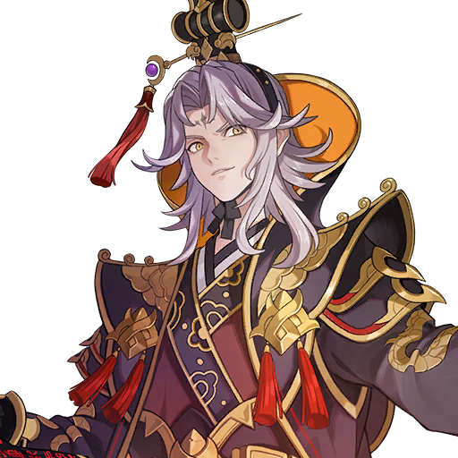

Sau khi trở về dòng thời gian hiện tại, Evan và nhóm của mình phát hiện Asgar và Aisha đã rơi vào chiến tranh: Kris dẫn quân yêu quái xâm lược Moonlit Isles, còn Seven Knights Alliance tấn công Aisha để bắt Dellons. Trong khi Evan Expedition tái hợp và tìm cách ngăn chiến tranh, Karma lần theo dấu vết của Bai Jiao — kẻ dùng bùa chú, ác linh và thuốc độc để thao túng dân làng, thí nghiệm sức mạnh quỷ dữ và phục vụ âm mưu của Hoàng đế Pascal, người đã cấy năm Mảnh vỡ Hủy Diệt vào cơ thể mình. Lu Bu, sau khi từ chối chiến đấu vì hoàng đế, cuối cùng nhận lại danh hiệu Tứ Lãnh Chúa để chiến đấu vì người dân, còn các phe phái chạm trán nhau tại Crimson Canyon và Hoàng Cung. Cao trào của Act là khi Pascal hợp nhất các Mảnh vỡ, hóa thân thành Thần Hủy Diệt và khiến chiếc vòng cổ của Evan vỡ tan, Dark Knights xuất hiện, và Evan quyết định trở thành đệ tử của Teo để giành lại Karin — người được tiết lộ là pháp sư mang dòng máu cổ xưa, Shaman of Destruction.

Tập 22 — Trở lại con đường của chúng ta
Tập 23 — Tường thành chìm trong lửa
Tập 24 — Tứ Lãnh Chúa Lu Bu trở lại!
Tập 25 — Rắc rối ở Aisha
Tập 26 — Đoàn thám hiểm của Evan tiến về Hoàng cung
Tập 27 — Anh hùng tụ hội tại Hoàng cung
Tập 28 — Pháp sư Hủy Diệt
TẬP 22 — TRỞ LẠI CON ĐƯỜNG CỦA CHÚNG TA
CHƯƠNG 2
Bị nhầm là gián điệp
Mistaken as Spies
DẪN TRUYỆN · CHƯƠNG 1
Bước vào cột sáng, một lần nữa
Into the Pillar of Light, Again
Evan, người đang dùng sức mạnh của chiếc vòng cổ để kìm hãm Sức mạnh Hủy Diệt, một lần nữa bị bao phủ bởi một luồng sáng bí ẩn.
NHÂN VẬT
Binh sĩ của Ace tấn công Evan dữ dội, nhưng không thể phá vỡ tấm khiên của cậu.
Binh sĩ của Ace: Sao có thể?! Đòn tấn công của chúng ta...! Được! Ta sẽ liều cả mạng sống này, đồ gián điệp Asgar!
Karin: Khoan đã! Chúng tôi không phải gián điệp, và cũng không muốn đánh nhau!
Evan: Gọi ngài Teo giúp chúng tôi. Ngài ấy sẽ xác nhận thân phận của chúng tôi.
Hả? Đôi tai mèo đó, là... Cô là chị gái của lãnh chúa trẻ, đúng không? Tôi nghĩ tên cô là... Daisy?
Daisy: Evan? Karin? Và cậu là bạn, phải không? Cậu từng là đồng đội của ngài Teo. Cậu đến cùng ngài ấy sao?
Nhờ sự giúp đỡ của Daisy, nhóm của Evan đã có thể ngừng đánh nhau và chia sẻ những gì đã xảy ra.
Daisy: Vậy... ý các cậu là sau cuộc chiến ở Moonlit Isles, các cậu đã được đưa trở về dòng thời gian ban đầu của mình, tức là ngay lúc này?
Evan: Ừ, nên với bọn tớ, cảm giác như mới gặp cậu vài ngày trước thôi, Daisy. Dù với cậu thì đã lâu lắm rồi.
TẬP 22 — TRỞ LẠI CON ĐƯỜNG CỦA CHÚNG TA
CHƯƠNG 3
Kris, kẻ xâm lược Moonlit Isles
Kris, Invader of the Moonlit Isles
NHÂN VẬT
Sau khi gặp Daisy, nhóm của Evan nhận ra đã rất nhiều thời gian trôi qua kể từ ngày Thần Hủy Diệt bị ngăn chặn.
Và Seven Knights của Asgar đã tập hợp toàn bộ quân đội và xâm lược Aisha.
Evan: Sao Seven Knights lại đột nhiên tấn công Aisha chứ? Vô lý quá.
Daisy: Nhưng đó là sự thật. Một Seven Knight tên Kris đang tấn công Moonlit Isles với một đội quân yêu quái khổng lồ.
Ra vậy. Nên vì trang phục của chúng ta, họ đã tưởng chúng ta là gián điệp Asgar.
Daisy: Nhưng thật ra, chẳng ai trong các cậu già đi chút nào. Du hành thời gian... Khó tin thật, dù tôi đang nhìn thấy bằng chứng ngay trước mắt.
Evan: Hahaha, thật sao? Nhưng trước hết, chúng ta nên thử gặp Kris. Chắc chắn phải có cách để ngăn trận chiến này.
Daisy: Không dễ đâu. Kris đó, quân đội của hắn toàn là yêu quái, không phải con người. Các cậu còn chẳng thể nói chuyện với chúng.
Karin: Không phải quái vật nào cũng không thể giao tiếp được.
Evan: Và chúng ta đã vượt qua đội quân quái vật đó và gặp Kris vài lần rồi. Lần này cũng sẽ làm được thôi.
Binh sĩ của Ace: Cô có chắc chúng ta tin được những người này không, tiểu thư Daisy? Họ có thể là gián điệp của địch...
Daisy: Không. Họ sẽ không bao giờ làm vậy.
Daisy: Evan. Ta sẽ để các cậu đi qua. Đi theo con đường này về phía tây. Làm ơn, hãy ngăn chặn cuộc chiến này.
TẬP 22 — TRỞ LẠI CON ĐƯỜNG CỦA CHÚNG TA
CHƯƠNG 4
Tái ngộ Heavenia
Reunion With Heavenia
NHÂN VẬT
Trong lúc nhóm của Evan đang chiến đấu xuyên qua đội quân quái vật, một nữ chiến binh valkyrie với đôi cánh xanh xuất hiện cùng một cơn lốc gió.
Clops của Kris: Có vài kẻ mạnh xuất hiện rồi, Heavenia.
Heavenia: Không tệ. Ta không ngờ lại có người đủ mạnh để đánh bại đội quân quái vật của Kris ở chốn hẻo lánh này.
Heavenia: Tuy nhiên, đi tiếp nữa sẽ là liều mạng đấy.
Hả? Heavenia?
Heavenia: Evan? Karin? bạn! Có thật là các cậu không? Các cậu còn sống sao?
Heavenia: Ơn trời. Sợi chỉ định mệnh vẫn chưa đứt!
Evan: Không thể tin được! Gặp lại cậu thật tốt quá, Heavenia.
Evan và Heavenia chia sẻ với nhau những gì đã xảy ra.
Heavenia: ...Đó là cách chị em tôi gia nhập lực lượng của Seven Knights, nhưng... Evan Expedition đã bị giải tán và mọi người đều đi theo con đường riêng của mình...
Evan: Ra vậy...
Heavenia: Tôi đã định trách các cậu vì đã cắt đứt liên lạc với chúng tôi, nhưng ai mà ngờ du hành thời gian lại là nguyên nhân... Giờ tôi còn chẳng giận nổi nữa...
Evan: Tôi xin lỗi, Heavenia. Chắc cậu đã lo lắng cho chúng tôi lắm.
Heavenia: Không sao đâu. Tôi chỉ mừng vì các cậu đã trở về an toàn.
Karin: Nhưng tôi không thể tin được... Dellons là một quan chức cấp cao dưới sự bảo hộ của hoàng đế Aisha sao?
Evan: Hắn là ai không quan trọng. Trước mắt, chúng ta cứ tập trung gặp Kris và ngăn chặn cuộc chiến này. Mọi người đồng ý chứ?
Với Heavenia gia nhập cùng, liệu Evan Expedition đã đoàn tụ trở lại?
Heavenia: Ý hay đấy! Tôi sẽ tập hợp bạn bè của chúng ta. Thực ra, Yuri chưa bao giờ tin rằng các cậu đã chết.
Heavenia: Chúng tôi đã hứa sẽ báo cho nhau nếu có ai gặp lại các cậu. Jupy và Snipper cũng sẽ đến khi nghe câu chuyện của các cậu.
Evan: Cảm ơn cậu, Heavenia. Nhưng tôi lo sẽ khiến mọi người gặp nguy hiểm...
Heavenia: Đừng nói vậy! Tất cả chúng ta đều là một phần của Evan Expedition!
Heavenia: Các cậu đang chạy khắp nơi để ngăn chặn cuộc chiến này, và tôi muốn giúp!
Heavenia: Và hơn hết... Quyết tâm cứu người của các cậu vẫn không thay đổi. Thật đáng nể!
Evan: Được rồi. Đi thôi, không còn thời gian để lãng phí nữa. Hãy đến doanh trại của Kris khi cậu đã tập hợp được bạn bè.
Heavenia: Khoan đã! Cầm lấy biểu tượng của đội quân quái vật này. Chúng sẽ không tấn công các cậu nếu có nó.
Heavenia: Đơn vị chủ lực của Kris sẽ sớm đến bờ biển phía tây. Nếu các cậu đến gặp hắn trước lúc đó, có thể các cậu sẽ ngăn được cuộc chiến.
TẬP 22 — TRỞ LẠI CON ĐƯỜNG CỦA CHÚNG TA
CHƯƠNG 5
Knox và Sarah
Knox and Sarah
NHÂN VẬT
Trong khi đó, Knox và Sarah xâm lược Moonlit Isles với một đội quân quái vật khổng lồ. Tuy nhiên, vì gặp phải sự kháng cự mạnh mẽ, cuộc xâm lược đang khó khăn hơn dự kiến.
Sarah: Knox! Đơn vị trinh sát được cử đi trước đã biến mất! Cậu nghĩ chúng bị Ace đánh bại rồi sao?
Knox: Hừm... Với tốc độ này, sẽ không thể chiếm được hòn đảo trước khi quân chủ lực của Kris đến.
Sarah: *Thở dài...* Ngài ấy đã bảo chúng ta đừng vội giao chiến và chỉ tập trung thiết lập căn cứ. Lẽ ra chúng ta nên nghe lệnh của ngài ấy...
Knox: Sao vậy, Sarah? Cậu đang nói rằng tất cả là lỗi của ta sao? Chính cậu là người đề nghị chúng ta chiếm lấy Moonlit Isles và giúp Kris khỏi phải tự mình nhuốm máu.
Sarah: Đồ ngốc! Đó là nếu chúng ta thắng! Nhưng chúng ta cứ thua mãi. Làm sao Kris có thể không can thiệp được chứ?
Knox: ...Kẻ địch không chiến đấu một cách quang minh chính đại. Chúng tránh xung đột với các đơn vị chủ lực và chỉ tấn công trinh sát và tuyến tiếp tế của chúng ta.
Sarah: Quang minh chính đại? Nói nhảm! Chúng ta cần phải thắng! Chiến thắng mới là thứ duy nhất quan trọng!
Knox: Hừm... Còn cậu thì sao? Cậu có tìm ra gì không? Kỹ năng mê hoặc của cậu đáng lẽ phải có tác dụng với dân đảo. Cậu đã ở ngoài đó suốt thời gian qua, cậu đã tìm được gì?
Sarah: ...Tôi có thông tin về lãnh chúa của nơi này. Tên hắn là Ace. Hắn còn khá trẻ, nhưng không nên xem thường.
Sarah: Hòn đảo này có lịch sử lâu đời. Từ khi còn rất trẻ, lãnh chúa đã cầm kiếm và dẹp yên vô số cuộc nổi loạn.
Knox: Hừm...
Sarah: Ưgh...! Sao Kris lại bảo chúng ta phải cẩn thận về việc giết người? Nếu chúng ta cứ giết hết mọi người, chúng ta đã chinh phục hòn đảo này từ lâu rồi!
Sarah: Được rồi, chết tiệt, giờ không còn lựa chọn nào khác. Tôi sẽ tự mình thử gặp hắn và thuyết phục hắn. Tôi sẽ nói với hắn rằng hòn đảo này sẽ trở thành đảo chết chóc trước toàn bộ lực lượng của chúng ta, rằng nó sẽ không có cơ hội nào.
Knox: Cái gì? Quá nguy hiểm, Sarah!
Sarah: Cậu có thể bảo vệ tôi. Dân làng nói lãnh chúa là người quang minh chính đại. Nếu chỉ có hai chúng ta, không có binh sĩ, hắn sẽ gặp chúng ta.
Knox: ...Nếu nguy hiểm, hãy bay đi. Tôi không thể chết được dù sao, nên tôi sẽ thoát ra bằng cách này hay cách khác.
Sarah: ...Hừm. Đương nhiên rồi!
Sarah: Bảo vệ tôi để tôi không phải bay đi. Tôi tin cậu đấy, anh chàng to con!
TẬP 22 — TRỞ LẠI CON ĐƯỜNG CỦA CHÚNG TA
CHƯƠNG 6
Tài đàm phán tệ hại
Terrible Negotiation Skills
NHÂN VẬT
Sarah và Knox đề nghị Ace đầu hàng.
Sarah: Tôi tin rằng ngài đã chứng kiến sức mạnh của đội quân quái vật của chúng tôi. Chúng tôi không muốn gây hại cho dân làng của ngài. Đó là lý do chúng tôi hy vọng tránh một cuộc xâm lược toàn diện.
Sarah: Khả năng và kỹ năng của những binh sĩ dũng cảm của ngài rất rõ ràng với tôi. Tuy nhiên, một khi chúng tôi bắt đầu tấn công với toàn bộ lực lượng, Moonlit Isles sẽ không còn cơ hội. Tôi cho rằng ngài đã biết điều này.
Daisy: Ngươi dám!
Ace: Khoan đã, chị. Ta muốn nghe họ nói đến cùng.
Sarah: Chúng tôi không đến đây để gây chiến. Kẻ thù của chúng tôi chỉ có Dellons mà thôi.
Sarah: Nếu ngài mở đường đến Aisha cho chúng tôi, sẽ không có hại gì đến với Moonlit Isles. Chúng tôi thề trên danh nghĩa chủ nhân của chúng tôi, Kris.
Sarah: Những vết thương mà Asgar phải chịu khi Dellons gieo rắc chia rẽ giữa Seven Knights vẫn chưa lành. Chủ nhân của tôi, Kris, sẽ không tha thứ cho hắn.
Sarah: Hay những kẻ giúp đỡ hắn. Vì vậy xin hãy cẩn trọng.
Daisy: Ngươi nói chuyện lịch sự, nhưng lời nói của ngươi có ý đe dọa. Cẩn thận miệng lưỡi của ngươi!
Đúng lúc đó, bầu không khí trở nên căng thẳng.
Binh sĩ của Ace: Lãnh chúa! Tin khẩn!
Daisy: Ngươi dám. Ngươi không thấy chúng ta đang tiếp khách sao?
Binh sĩ của Ace: Tôi xin lỗi, nhưng đây là chuyện khẩn cấp. Một đội quân yêu quái mới đang đổ bộ ở phía tây Thunder Basin. Số lượng của chúng gấp năm lần những kẻ địch chúng ta đã đối mặt cho đến nay.
Daisy: Cái gì?
Knox: Ừm... Quân chủ lực của Kris đã đến.
Sarah: Ngài thấy chưa? Chúng tôi đến đây để cứu ngài.
Daisy: Ace...
Ace: Đây có phải kế hoạch của ngươi không?
Sarah: Cái gì?
Ace: Gấp năm lần... Trong trường hợp đó, không còn nghi ngờ gì nữa. Chúng ta sẽ chiến thắng.
Sarah: ...Ngươi đang khoác lác đấy, lãnh chúa ạ.
Ace: Truyền lệnh của ta đến tất cả các gia tộc! Moonlit Isles sẽ bước vào trạng thái tổng chiến!
Sarah: Tổng chiến? Làm như Moonlit Isles có đủ binh sĩ để tạo ra khác biệt vậy... Ngươi không hiểu đội quân quái vật của chúng ta mạnh đến mức nào sao?
Ace: Chính ngươi mới là người không hiểu.
Ace: Ngươi có biết sống sót ở Moonlit Isles nghĩa là gì không? Giăng lưới, cày xới mảnh đất này?
Ace: Người dân trên hòn đảo này là những người sống sót. Họ đã chiến đấu trong vô số cuộc chiến trên hòn đảo này! Vì vậy, chúng ta không bị giới hạn bởi số lượng binh sĩ. Người dân trên đảo này là kiếm và khiên được rèn giũa trong chiến trận.
Ace: Lũ yêu quái thấp hèn mà ngươi dẫn dắt sẽ chết hết! Chúng sẽ trở thành linh hồn và lang thang trên hòn đảo này.
Daisy: Nhưng đừng lo, vì nhiều linh hồn yêu quái đang an nghỉ trên hòn đảo này, và có một pháp sư sẽ xoa dịu linh hồn của chúng.
Ace: Ta khen ngợi lòng dũng cảm của ngươi khi đến đây và sẽ để ngươi rời đi an toàn. Nếu ngươi quý mạng sống của mình, hãy rời khỏi hòn đảo này ngay lập tức. Nếu ta gặp lại ngươi trên chiến trường với tư cách một Yacha...
Ace: Đừng mong được thương xót.
TẬP 22 — TRỞ LẠI CON ĐƯỜNG CỦA CHÚNG TA
CHƯƠNG 7
Hạm đội của Kris đổ bộ
Kris's Fleet Lands
NHÂN VẬT
Quân đội của Ace thiết lập tuyến phòng thủ quanh bến cảng để ngăn hạm đội của Kris đổ bộ.
Bella của Kris: Ồhhh! Con người này khá giỏi đấy! Nhưng liệu chúng có ngăn được chúng ta không?
Coco của Ace: Hả? Ờ, tôi quen đánh nhau với rắn rồi!
Bella của Kris: Ồ? Thật sao?
Shiro của Ace: Moonlit Isles sẽ không bị đánh bại bởi lũ yêu quái! Kẻ xâm lược! Hãy đối mặt với số phận của các ngươi!
Bella của Kris: Ngươi dám...?! Ta sẽ nuốt ngươi trong một miếng!
Daisy: Chúng ta sẽ bảo vệ hòa bình của hòn đảo này! Chúng ta sẽ không lùi bước!
Kris quan sát trận chiến từ trên cao.
Kris: Chúng mạnh hơn dự kiến. Có quái vật chiến đấu cho con người ở phía chúng sao?
Kris: Nhưng mọi chuyện sẽ rắc rối hơn nếu cứ kéo dài thế này. Chúng ta đến đây để bắt Dellons, không phải để gây chiến.
Kris: Kết thúc mọi chuyện nhanh chóng bằng sức mạnh áp đảo sẽ giảm thiểu thương vong.
Kris: Ta sẽ cho thấy sức mạnh thật sự!
TẬP 22 — TRỞ LẠI CON ĐƯỜNG CỦA CHÚNG TA
CHƯƠNG 8
Evan gặp Kris và Ace
Evan Meets Kris and Ace
NHÂN VẬT
Đến khi nhóm của Evan đến phía tây Thunder Basin để gặp Kris, quái vật thủy sinh đã đổ bộ và trận chiến đang diễn ra ác liệt.
Evan: Không! Chúng ta đến quá muộn rồi sao?
Cẩn thận. Trong hỗn loạn như thế này, chúng ta sẽ trông như kẻ địch với cả hai phe.
Karin: Đúng. Vì chúng ta mặc trang phục kiểu Asgar, chúng ta sẽ trông như kẻ xâm lược đối với người dân Moonlit Isles, và đối với quái vật, chúng ta chỉ trông như con người.
Jak của Kris: Kekeke, ngươi trông khá mạnh đấy, con người! Cái đầu của ngươi sẽ là chiến lợi phẩm xứng đáng cho thành tích của ta!
Evan: Khoan đã, nhìn này! Chúng ta là phe của ngươi!
Jak của Kris: Hả? Đó là... biểu tượng của Kris sao? Chậc, ngươi là phe của chúng ta sao?
Evan: Phù... May quá. Quái vật nhận ra biểu tượng mà Heavenia đã đưa cho chúng ta.
Shiro của Ace: Nhìn kìa, người Asgar! Chắc chắn chúng là những kẻ dùng phép tà ác điều khiển yêu quái! Bắt lấy chúng!
Karin: Ừm... Lần này là binh sĩ của Ace. Chúng ta nên nói gì đây?
Đúng lúc đó, một luồng năng lượng hắc ám mạnh mẽ rơi xuống từ bầu trời và cứu nhóm của Evan.
Evan: Đòn tấn công này, là...
Kris: Thật là ngươi... Evan. Chuyện gì đã xảy ra? Ngươi đã ở đâu...? Không, ngươi đang làm gì ở đây?
Evan: Kris!
Evan: Dừng cuộc chiến này lại đi, Kris! Đánh nhau như thế này có thể đúng ý Dellons đấy!
Kris: Cái gì?
Kris: (Cuộc đổ bộ đã bắt đầu. Dừng lại ngay bây giờ có thể khiến lực lượng chủ lực bị tách khỏi quân đổ bộ. Tệ nhất, chúng có thể bị tiêu diệt từng nhóm một. Nhưng nếu Evan nói đúng, và đây là một phần trong bẫy của Dellons...)
Kris: (Không. Sao ta lại do dự? Evan luôn chiến đấu để ngăn chặn chiến tranh. Vậy thì điều đó có nghĩa là ta nên...)
Kris: Toàn quân! Thiết lập đầu cầu và củng cố phòng thủ! Không mở rộng thêm từ thời điểm này!
Theo lệnh của Kris, quái vật ngừng giết chóc và xua đuổi con người, thay vào đó, chúng tập trung phòng thủ bến cảng. Trong khi đó, trong doanh trại của Ace, họ phát hiện hoạt động bất thường từ lực lượng của Kris.
Binh sĩ của Ace: Lãnh chúa Ace, tôi có báo cáo từ đơn vị trinh sát. Lực lượng chủ lực của địch đã đổ bộ thành công.
Binh sĩ của Ace: Chúng tôi đã cố dụ chúng bằng một đơn vị mồi nhử, nhưng chúng không cắn câu. Chúng chỉ tập trung củng cố pháo đài ở bến cảng.
Ace: Chúng đang chiếm ưu thế, vậy mà không tiến lên. Không rõ kế hoạch của chúng là gì. Có lẽ chúng đang lên kế hoạch mở rộng mặt trận.
Binh sĩ của Ace: Chúng ta nên làm gì? Nếu chúng thiết lập được căn cứ, cuộc chiến có thể kéo dài.
Ace: Vậy chúng ta sẽ phải ném cho chúng một miếng mồi lớn hơn. Ta sẽ đích thân ra trận.
Daisy: Hả? Không, quá nguy hiểm!
Ace: Đừng lo, chị. Không tồn tại kẻ địch nào đe dọa được ta.
TẬP 22 — TRỞ LẠI CON ĐƯỜNG CỦA CHÚNG TA
CHƯƠNG 9
Kris đấu Ace
Kris vs. Ace
NHÂN VẬT
Một lúc sau, Ace dẫn một nhóm nhỏ binh sĩ từ Moonlight Guards và tấn công doanh trại của Kris.
Kris: Ồ? Ngươi là lãnh chúa cai quản Moonlit Isles sao? Ngươi trông còn trẻ, nhưng ta có thể thấy ngươi có khí phách.
Ace: Ngươi là thủ lĩnh của lũ yêu quái sao? Ngươi trông như con người, nhưng trong cơ thể đó chứa một yêu quái lớn.
Kris: Ngươi có thể cảm nhận được Rahal. Không tệ.
Ace: Ta là Ace, Lãnh chúa của Moonlit Isles.
Kris: Ta là Kris, thủ lĩnh của quân đoàn này.
Kris: Ngươi đứng trước mặt ta chỉ với vài binh sĩ này.
Kris: Ta cho rằng ngươi tự tin vào kiếm thuật của mình.
Ace: Nếu ngươi đủ can đảm để tự mình thách đấu ta, ta sẽ dạy ngươi thế nào mới là kiếm thuật thượng thừa.
Kris: Ngươi là một kẻ thú vị.
Kris: Ta thích lòng dũng cảm của ngươi, nên ta sẽ đấu tay đôi với ngươi.
Evan: Khoan đã, Kris. Nếu ngươi đánh nhau bây giờ, ngươi sẽ chỉ rơi vào bẫy của Dellons!
Kris: Kiên nhẫn đi, Evan. Ta cần giải quyết chuyện này ngay bây giờ.
Kris: Hắn sẽ không bắt tay hòa bình với ta nếu không có một trận đấu đàng hoàng. Hắn là một lãnh chúa mà đất đai đã bị tấn công. Ta cũng sẽ làm như vậy.
Evan: Nhưng...
Kris: Đừng lo. Ta không phải kẻ ngốc. Ta sẽ không bị Dellons lợi dụng lần nữa. Hãy tin ta.
Ace: Ta còn phải đợi bao lâu nữa?
Kris: Hãy biết ơn đi. Ta đã cho ngươi thời gian để nói lời cuối cùng.
Kris: Cho ta xem kỹ năng của ngươi đi, lãnh chúa trẻ!
TẬP 22 — TRỞ LẠI CON ĐƯỜNG CỦA CHÚNG TA
CHƯƠNG 10
Dellons và Pascal
Dellons With Pascal
NHÂN VẬT
Kiếm thuật của Tứ Lãnh Chúa Ace thật đáng kinh ngạc, nhưng vẫn hơi kém so với Seven Knight Kris.
Ace: Ta không biết có một người tài giỏi với kiếm như vậy ở Asgar.
Kris: Xuất sắc. Kỹ năng của ngươi, thanh kiếm của ngươi. Xứng đáng được gọi là lãnh chúa của hòn đảo này.
Daisy: Ace!
Ace: Lùi lại, chị. Người này không phải đối thủ của Moonlight Guards.
Evan: Cả hai người, làm ơn dừng lại và nghe lời tôi nói.
Ace: Ngươi là...?
Evan: Tôi là Evan. Tôi đã chiến đấu vì Moonlit Isles cùng với ngài Teo từ lâu rồi.
Ace: Cùng với... Sư phụ Teo?
Evan: Làm ơn cho những người xung quanh ngài lui đi, thưa ngài. Tôi có điều phải nói.
Sau khi binh sĩ của cả hai phe lui đi, Evan và Karin kể câu chuyện của họ về việc thu thập các Mảnh vỡ Hủy Diệt để thanh tẩy thông qua du hành thời gian.
Ace: Vậy, ngươi đang nói rằng Dellons đã đánh cắp các Mảnh vỡ Hủy Diệt mà Sư phụ Teo và Silvesta đã thu thập để thanh tẩy, và hắn đã cố dùng chúng để hồi sinh Thần Hủy Diệt?
Evan: Đúng vậy. Và Pascal đã làm việc cùng hắn.
Ace: Hừm... Khó tin thật. Hoàng đế của Aisha lại làm chuyện như vậy...
Hả? Hoàng đế sao?
Kris: Pascal là tên của Hoàng đế Aisha, người đang bảo vệ Dellons.
Evan: Tôi không thể tin Pascal đã trở thành hoàng đế... Có vẻ như Pascal và Dellons đã làm việc cùng nhau kể từ ngày Thần Hủy Diệt suýt được hồi sinh.
Karin: Đúng vậy. Pascal thuộc dòng dõi hoàng gia, nên âm mưu và sức mạnh của Dellons sẽ giúp thống nhất Aisha.
Điều đó có nghĩa là Dellons ban đầu là người của Pascal sao? Hay... có lẽ hiện tại đã bị ảnh hưởng bởi hành động của chúng ta trong quá khứ...
Ace: *Thở dài,* du hành thời gian... Khó tin thật, nhưng ta có một ký ức mơ hồ về những anh hùng trẻ tuổi đã chiến đấu vì Moonlit Isles cùng với Sư phụ Teo...
Daisy: Đúng vậy, lãnh chúa Ace. Tôi cũng nhớ họ. Họ nói rằng đó là để chiến thắng, nhưng... Dellons và Hoàng đế Pascal đã thảm sát những người vô tội.
Daisy: Họ biến mất sau khi ngài Teo được thông báo về tình hình, nên tôi tự hỏi chuyện gì đã xảy ra. Tôi không biết họ đã bị trục xuất khỏi đoàn thám hiểm.
Karin: Cô không nghe được tình hình sau đó sao, Daisy?
Daisy: Ngài Teo rời đi mà không giải thích chi tiết gì...
Bai Jiao: Ôi chao, chuyện bàn luận báng bổ gì đang diễn ra ở đây vậy?
Kris: Hừm? Ngươi là...?
TẬP 22 — TRỞ LẠI CON ĐƯỜNG CỦA CHÚNG TA
CHƯƠNG 11
Bai Jiao đánh thức Orochi
Bai Jiao Awakens Orochi
NHÂN VẬT
Sau khi Evan thuyết phục Kris và Ace đồng ý dừng cuộc chiến, một người đàn ông mặc đồng phục quan chức đột nhiên xuất hiện.
Bai Jiao: Khi hai lãnh chúa gặp nhau như kẻ thù và rút kiếm, chẳng phải ít nhất một người nên nếm mùi thép sao?
Bai Jiao: Bị ảnh hưởng bởi lời nói của một đứa trẻ và chỉ đơn giản thu kiếm lại... Các ngươi không thấy xấu hổ sao?
Ace: Bai Jiao đại nhân. Tôi biết rõ chuyện này rất hỗn loạn và khó giải thích. Tuy nhiên, tôi cảm thấy đáng để lắng nghe lời của đứa trẻ này.
Bai Jiao: Chia sẻ một cuộc trò chuyện thân mật với một trong những Seven Knights đang xâm lược Aisha... Ace! Ngươi là kẻ phản quốc!
Kagura: Lãnh chúa Ace!
Ace: Kagura?! Sao cô lại ở đây...?!
Ace: Bai Jiao! Ta có thể tha thứ cho ngươi vì đã xúc phạm ta, nhưng ta sẽ không dung thứ việc ngươi đưa Kagura ra chiến trường.
Ace: Nói cho ta biết lý do cô ấy ở đây, ngay bây giờ! Tốt nhất là nói sự thật, vì đây là Moonlit Isles, và ở đây, việc quan chức chết giữa hỗn loạn chiến tranh không phải là chuyện hiếm!
Kagura: Tôi nghe nói lãnh chúa Ace đang tham gia vào cuộc chiến chống lại đội quân yêu quái xâm lược do một chúa quỷ dẫn đầu. Tôi được bảo rằng ngài đang gặp nguy hiểm, và sự giúp đỡ của tôi là cần thiết...
Bai Jiao: Nên tôi đã giải thích rằng tôi có thể quét sạch tất cả yêu quái của chúa quỷ bằng sức mạnh của Orochi.
Ace: Sao ngươi có thể...? Ngươi định phá vỡ phong ấn của Orochi để chiến đấu với kẻ thù của chúng ta sao? Ngươi không hiểu điều đó có nghĩa là gì sao?
Bai Jiao: Chẳng phải đáng khen sao? Cô ấy sẵn sàng hy sinh bản thân vì ngươi.
Kris: Ngươi... có phải Bai Jiao không? Ngươi là người đã yêu cầu sự giúp đỡ của Seven Knights để bắt Dellons. Nhưng điều này có nghĩa là gì?
Bai Jiao: Tôi yêu cầu giúp đỡ sao? Tôi không biết ngươi đang nói gì.
Bai Jiao: Ngươi không phải chỉ đang bịa ra lời nói dối để bào chữa cho việc xâm lược Aisha sao?
Kris: Cái gì?
Bai Jiao: Tôi đã mong chờ trận chiến giữa Ace và Kris... Nhưng thật chẳng vui chút nào. Tôi đoán mình sẽ phải chuẩn bị thứ khác.
Bai Jiao: Tôi sẽ dùng cơ thể của nữ pháp sư đáng ngưỡng mộ nhất của chúng ta.
Khi Bai Jiao đọc thần chú, lấy một con rắn nhỏ ra khỏi một lọ thủy tinh, con rắn biến thành một đám mây sương mù và ngay lập tức bao quanh cơ thể Kagura.
Kagura: Aaaa!
Ace: Kagura!
Orochi: Krrrgh...
Orochi: Có con người nào đã gọi ta ra nữa sao? Ta sẽ không bị con người xảo quyệt lợi dụng nữa! Ta sẽ giết tất cả các ngươi! Lũ con người đáng ghét!
Ace: Kagura! Ta sẽ cứu cô!
Orochi: Ưgh! Thanh kiếm đáng ghét đó ở đây. Thôi kệ. Ta sẽ giết tất cả mọi người!
TẬP 22 — TRỞ LẠI CON ĐƯỜNG CỦA CHÚNG TA
CHƯƠNG 12
Quái vật bất tử
Immortal Monster
NHÂN VẬT
Các đòn tấn công thông thường đều vô dụng trước Orochi.
Kris: Ta chắc chắn đã cảm thấy kiếm của mình chém xuyên qua...
Orochi: Các ngươi thật nực cười. Những đòn tấn công như vậy sẽ không có tác dụng với ta!
Orochi: Thức tỉnh đi! Các thuộc hạ của ta!
Thuộc hạ Bella của Orochi: Kyahhh!
Thuộc hạ Jas của Orochi: Gaaah!
Ace: Không... Moonlit Isle!
Kris: Ta chắc chắn đã chém nó nhiều lần, nhưng vết chém của ta đang biến mất. Tuy nhiên, nó có vết thương. Nếu chúng không phải do ta gây ra, vậy thì...
Kris: Các đòn tấn công của ngươi có tác dụng với nó không?
Ace: Đúng vậy. Thanh kiếm này được rèn đặc biệt để phong ấn con quái vật đó.
Kris: Được rồi, vậy ta sẽ giữ nó bận rộn.
Ace: Ngươi đang nói... ngươi sẽ làm mồi nhử sao?
Kris: Ta sẽ không dung thứ cho bất kỳ sai lầm nào. Ngươi có thể chém hạ nó không?
Ace: Cứ giao cho ta.
TẬP 22 — TRỞ LẠI CON ĐƯỜNG CỦA CHÚNG TA
CHƯƠNG 13
Kẻ phá rối bất ngờ
Unexpected Nuisance
NHÂN VẬT
Kagura xuất hiện, bất tỉnh, tại nơi Orochi ngã xuống.
Ace: Kagura! Kagura! Tỉnh dậy đi!
Bai Jiao: Hừm. Đương nhiên, có giới hạn khi phong ấn chỉ bị phá vỡ tạm thời, hơn nữa...
Bai Jiao: Một trong Tứ Lãnh Chúa và một trong Seven Knights hợp tác với nhau...?
Bai Jiao: Chuyện đó thật thú vị... Tuy nhiên, hôm nay ta sẽ dừng lại ở đây; vẫn còn kế hoạch tương lai đang chờ ta.
Bai Jiao cố trốn thoát trong hỗn loạn khi Orochi ngã xuống. Tuy nhiên, Kris đã ngăn hắn lại.
Kris: Ngươi định đi đâu?
Kris: Ta có rất nhiều câu hỏi cho ngươi. Nếu ngươi nói bất cứ điều gì ngoài sự thật hoặc tỏ ra do dự trong câu trả lời, ta sẽ không ngần ngại biến ngươi thành món ăn nhẹ cho quái vật của ta.
Sun Wukong: Whoop!
Kris: Ngươi là ai?!
Sun Wukong: Các ngươi đã hạ gục Orochi sao? Không tệ. Tốt đấy.
Bai Jiao: Ngươi nên nhanh chân lên, Sun Wukong! Nếu ta bị thương thì sao?
Sun Wukong: Hehe. Như ngươi thấy đấy, ta không đặc biệt quan tâm đến tên này, nhưng ta không thể để hắn chết ở đây.
Kris: Vậy, điều đó có nghĩa là ngươi sẵn sàng chết cùng hắn sao? Đến đây. Ta cũng sẽ giết ngươi.
Sun Wukong: Whoop!
Kris: Cái gì?
Sun Wukong: Được rồi, ta sẽ không từ chối. Hãy vui vẻ nào.
Ace: Tất cả các phân thân của Sun Wukong đều có lõi thật! Cẩn thận!
Kris: Vậy ta sẽ tiêu diệt tất cả bọn chúng!
TẬP 22 — TRỞ LẠI CON ĐƯỜNG CỦA CHÚNG TA
CHƯƠNG 14
Đoàn Evan Expedition tái hợp
Evan Expedition Reunited
NHÂN VẬT
Ace và Kris đánh bại vô số phân thân của Sun Wukong, nhưng bản gốc đã trốn thoát cùng Bai Jiao.
Kris: Chậc, hắn trốn thoát rồi sao?
Ace: Bai Jiao và Sun Wukong đã tấn công Moonlit Isles. Chuyện gì đang xảy ra vậy? Ta phải tự mình gặp hoàng đế và nghe lời giải thích.
Daisy: Không, lãnh chúa Ace.
Nếu cuộc tấn công từ Sun Wukong của Tứ Lãnh Chúa và Bai Jiao là theo lệnh của hoàng đế,
thì ngài đến Hoàng Cung sẽ quá nguy hiểm.
Ace: Hừm...
Evan: Tôi tin Dellons đứng sau cuộc chiến này. Kris và lãnh chúa Ace, nếu được tin tưởng, tôi sẽ điều tra và ngăn chặn nó.
Kris: Evan, ta công nhận cậu có tài năng, nhưng Aisha và Asgar hiện đang giao chiến với nhau. Sẽ khó khăn cho cậu, một người Asgar, để do thám Aisha.
Daisy: Không. Nếu đây là Evan đã từng làm việc với ngài Teo, tôi tin rằng cậu ấy sẽ tìm ra cách dù thế nào đi nữa.
Daisy: Đây, Evan. Ta trao cho cậu biểu tượng ủy quyền. Với nó, binh sĩ sẽ ít muốn tấn công hay giam giữ cậu hơn. Tuy nhiên, cậu vẫn là người ngoài, vì vậy hãy tránh xung đột nếu có thể. Được chứ?
Evan: Cảm ơn cô, Daisy. Và Kris, tôi có một việc muốn nhờ cậu.
Kris: Việc gì?
Evan: Dù lý do là gì, Moonlit Isles đã bị đội quân quái vật của cậu tàn phá nặng nề. Cậu có giúp hỗ trợ công cuộc khôi phục không?
Evan: Nếu Dellons muốn làm suy yếu chúng ta bằng cách khiến chúng ta đối đầu nhau, như ở Asgar, thì chúng ta phải làm ngược lại.
Kris: ...Ta đồng ý.
Tuy nhiên, ta không chắc lãnh chúa Ace có chấp nhận không.
Ace: Hừm...
Daisy: Thưa lãnh chúa, có vẻ như Bai Jiao muốn cả quân đội của chúng ta và quân đội của Kris đều suy yếu vì đánh nhau.
Kris: Lãnh chúa Ace. Chúng tôi, Seven Knights, đã từng chiến đấu chống lại Dellons, và chúng tôi cũng đã từng bị những âm mưu của hắn lừa dối.
Kris: Ngoài ra, khi thấy những hành động đáng ngờ của Bai Jiao và Sun Wukong, chẳng phải sẽ khôn ngoan hơn nếu bảo toàn sức mạnh sao?
Kagura: Lãnh chúa Ace, đúng là những người này đã tấn công Moonlit Isles, nhưng họ cũng đã chiến đấu chống lại Orochi cùng chúng ta.
Kagura: Nếu không có họ, tôi chắc chắn mình đã bị Orochi nuốt chửng và trở thành con rối giết người.
Ace: ...Được rồi. Ta sẽ chấp nhận lời đề nghị giúp đỡ của Kris với lòng biết ơn.
Ace: Và nếu Dellons thực sự là kẻ thù của chúng ta, như cậu nói... Ta hứa Moonlit Isles sẽ không dính líu đến cuộc chiến này.
Ace: Tuy nhiên, nếu lộ ra rằng Seven Knights đã gây ra cuộc chiến này mà không có lý do, ngươi phải hứa với ta một điều, Kris.
Kris: Điều gì? Nói đi.
Ace: Ngươi có hứa sẽ không can thiệp, ngay cả khi ta nhuộm lưỡi kiếm Leader Sword bằng máu của Seven Knights không?
Kris: Ta thích tính khí của ngươi. Rất tốt. Ngươi có lời hứa của ta.
Ace: Nếu ngươi muốn ngăn chặn cuộc chiến, Evan, hãy thử gặp Tướng quân Karma. Ông ấy là một người công bằng và chính trực, có đủ uy tín để thuyết phục Tứ Lãnh Chúa và hoàng đế.
Daisy: Đúng vậy. Không rõ Bai Jiao và Sun Wukong đang âm mưu gì, nhưng Tướng quân Karma không phải người dễ bị lừa.
Thực ra, chúng tôi đã gặp Karma trước đây.
Daisy: Ồ đúng rồi, trong cuộc chiến ở Moonlit Isles! Vậy thì mọi chuyện dễ dàng hơn nhiều!
Evan lên đường đến Aisha, và những người khác ở lại Moonlit Isles để giúp đỡ công cuộc khôi phục. Đúng lúc đó, Heavenia, người đã đi tìm bạn bè của mình, trở về.
Heavenia: Evan! Evan!
Jupy: *Nức nở* Evaannnn! Cậu thật sự còn sống!
Yuri: Evan... Karin... Sao tôi lại quên mất các cậu? Chúng ta đã cùng chiến đấu ở Moonlit Isles... Tất cả ký ức đang trở lại khi tôi nhìn thấy các cậu...
Karin: Đừng khóc, Yuri. Chúng tôi cũng không biết chuyện gì đã xảy ra... Có thể là sức mạnh bí ẩn của chiếc vòng cổ này.
Snipper: Dù sao, điều này có nghĩa là Evan Expedition đã đoàn tụ trở lại sao? Nhưng lần này, chúng ta đang cố ngăn chặn một cuộc chiến giữa hai lục địa. Áp lực khiến lưng tôi đau nhức.
Ariel: Tôi cũng ở đây này, Evan. Hehe.
Evan: Ariel! Chào mừng cậu! Rudy thế nào? Cậu ấy có nghĩ chúng ta đã chết không? Chắc cậu ấy buồn lắm...
Ariel: Buồn thì chưa đủ để diễn tả. Cậu ấy đã... *thở dài,* thôi bỏ đi. Quan trọng là cậu đã đến đây an toàn. Ngoài ra, tôi có thông tin quan trọng từ Học viện Ma thuật.
Ariel: Có vẻ như Hoàng đế Aisha đã cấy 5 Mảnh vỡ Hủy Diệt vào cơ thể mình.
Mảnh vỡ Hủy Diệt? Cấy vào cơ thể của chính mình sao? Tại sao?
Ariel: Chúng tôi không biết ý định chính xác của hắn, nhưng nếu hắn có thể kiểm soát sức mạnh đó... Cơ thể phàm trần của Hoàng đế Pascal sẽ có được sức mạnh của thần, và không ai có thể ngăn cản hắn.
Ariel: Chúng ta cần tránh điều đó. Vì vậy tôi muốn tham gia cùng cậu, Evan. Và tôi có sự ủng hộ của Học viện Ma thuật.
Evan: Chào mừng cậu, Ariel. Cảm ơn cậu đã tham gia cùng chúng tôi. Đi thôi. Chúng ta phải tìm Tướng quân Karma!
TẬP 22 — TRỞ LẠI CON ĐƯỜNG CỦA CHÚNG TA
CHƯƠNG 15
Giữa xưa và nay
Between Then and Now
NHÂN VẬT
Trên đường đi gặp Karma, Evan Expedition bắt đầu trò chuyện.
Yuri: Evan?
Evan: Ừ?
Yuri: Hehe, thật sự là cậu này.
Evan: Hahaha. Tất nhiên là thật rồi.
Karin: Này, Yuri! Cậu không nghĩ mình đang bám dính quá sao?
Yuri: Karin.
Karin: Hả?
Yuri: Hehe, thật sự là cậu này.
Karin: Cá-cái gì?
Haha, cậu thật sự vui khi gặp chúng tôi đến vậy sao?
Yuri: Tất nhiên rồi! Tôi tưởng các cậu đã bỏ tôi đi mà không nói gì.
Yuri: Chúng ta hãy cùng nhau đi, nắm tay nhau nhé. Hehe.
Snipper: Trời ạ, cậu như một đứa trẻ vậy.
Jupy: Hahaha, cái gì? Cậu đang giả vờ như mình không giống vậy sao?
Snipper: Cá-cái gì? Ý cậu là sao?
Jupy: Để tôi nghĩ xem... Ai là người đã chạy khắp các ngọn núi và cánh đồng cố gắng ngửi mùi của Evan và Karin?
Jupy: Cậu nói cậu không ngửi được vì mũi cậu không hoạt động và đã tự đập nó. Cậu cứ tự trách mình mãi!
Snipper: Cái gì! Cậu đã nhìn tôi sao? Sao cậu không nói gì?!
Jupy: Làm sao tôi nói được? Cậu có nhớ mình đã buồn đến mức nào lúc đó không?
Snipper: Ồ...
Jupy: Câu đó có ý gì vậy? Đi thôi! Chúng ta không muốn để Evan và Karin phải chờ.
TẬP 22 — TRỞ LẠI CON ĐƯỜNG CỦA CHÚNG TA
CHƯƠNG 16
Phối hợp vượt thời gian
Timeless Teamwork
NHÂN VẬT
Lần đầu tiên sau một thời gian dài, Evan Expedition lại đứng cùng nhau chiến đấu với quái vật.
Evan: Ngay bây giờ, Yuri!
Snipper: Phù, ở đây cũng có nhiều quái vật quá. Chúng trông kỳ lạ thật, và—
Yuri: Hừm, tôi nghe nói Tứ Lãnh Chúa và hoàng đế đã hợp tác để tiêu diệt hầu hết quái vật sau Cuộc chiến Hủy Diệt...
Ariel: Wow, tôi bất ngờ thật đấy. Các cậu là một đội tuyệt vời.
Ariel: Nhưng con quái vật vừa rồi... Tôi chưa từng thấy nó bao giờ, mà tôi đã ghi nhớ toàn bộ sách quái vật trước khi bắt đầu hành trình này...
Ariel: Không có ghi chép nào về nó, mà nó lại khá mạnh. Sao các cậu lại biết cách đánh nó giỏi vậy?
Hừm? Chẳng phải đó là chuyện bình thường sao? Evan và Heavenia lo phòng thủ, Yuri và Snipper tấn công, còn Karin chữa trị cho bất kỳ ai bị thương.
Ariel: Thật tuyệt vời! Các cậu di chuyển như một cỗ máy được bôi trơn tốt!
Ariel: Tôi đoán là vì các cậu hiểu nhau quá rõ.
Ariel: Vì tôi giờ cũng là một phần của Evan Expedition, tôi cũng sẽ cố gắng hết sức!
Yuri: Wow, con thỏ này dễ thương quá đi?
Heavenia: Ariel, phép thuật của cậu thật sự rất mạnh, và cậu có tính cách tuyệt vời. Chỉ cần ở bên cậu đã khiến tôi tràn đầy năng lượng. Vậy là đủ rồi. Cậu đã làm rất tốt rồi.
Ariel: Cảm ơn cậu! Cùng nhau như thế này, chúng ta sẽ có thể làm được bất cứ điều gì!
Evan: Đúng vậy. Chúng ta chỉ cần gặp Tướng quân Karma, rồi chúng ta sẽ tìm ra cách để ngăn chặn cuộc chiến này! Đi thôi!
TẬP 23 — TƯỜNG THÀNH CHÌM TRONG LỬA
CHƯƠNG 17
Tấn công Aisha
Storming Aisha
NHÂN VẬT
Gương thần của Nữ hoàng Lania vận chuyển toàn bộ quân đội hùng hậu của Seven Knights Alliance đến Aisha trong chớp mắt.
Rachel: Tiếp tục di chuyển!
Đơn vị tiếp theo sẽ đến ngay!
Eileene: Hoàn hảo. Với số quân này, chúng ta sẽ chuẩn bị cho bất cứ trò gì Dellons có thể giở ra!
Nhờ gương thần của Nữ hoàng Lania, Seven Knights Alliance đến Aisha mà không gặp trở ngại.
Rachel: Thành công rồi, Spike. Di chuyển nhiều quân và đơn vị tiếp tế như vậy vào lãnh thổ địch trong chớp mắt... Gương thần của Nữ hoàng Lania thật sự rất mạnh.
Spike: Sự hỗ trợ từ các elf của gia tộc Agni đã tạo ra khác biệt lớn.
Spike: Dù phép thuật của mẫu thân rất mạnh, nhưng nếu không có phép thuật của elf, sẽ không thể vận chuyển toàn bộ quân đội này.
Eileene: Bước tiếp theo của chúng ta là gì, Rudy?
Rudy: Trước hết, chúng ta phá hủy Endless Rampart.
Rachel: Endless Rampart sao?
Chúng ta không dùng gương để tấn công Hoàng Cung ngay lập tức à?
Rudy: Không rõ Dellons có thể đã chuẩn bị những mánh khóe gì ở hoàng cung,
nên ta quyết định tấn công nó với toàn bộ quân đội sẽ quá mạo hiểm.
Thay vào đó, chúng ta sẽ hạ pháo đài mạnh nhất của hắn trước.
Eileene: Hừm, kẻ địch có lẽ còn chưa biết một đội quân lớn như vậy đã đến. Vậy, cậu định hạ pháo đài mạnh nhất của chúng trước khi chúng kịp chuẩn bị và biến nó thành căn cứ của chúng ta.
Rachel: Nghe hay đấy. Hạ pháo đài lớn nhất của chúng sẽ nghiền nát tinh thần của chúng và giúp chúng ta dễ dàng đối phó với bất cứ điều gì xảy ra tiếp theo.
Spike: Ta sẽ nghe theo cậu. Ta không có kinh nghiệm trong các chiến dịch quân sự. Tuy nhiên, sẽ khó vận chuyển quân tiếp viện bằng gương nữa. Nó tiêu hao quá nhiều phép thuật.
Spike: Vì vậy hãy cẩn thận. Một bước sai lầm và tất cả những binh sĩ này có thể bị mắc kẹt sâu trong lãnh thổ địch.
Rudy: Ta không có ý định kéo dài trận chiến này. Chúng ta sẽ giành chiến thắng nhanh chóng và tuyệt đối, đồng thời giảm thiểu tổn thất!
Khi quân đội đã xếp hàng xong, Rudy bước lên phía trước.
Rudy: Các binh sĩ! Tiến lên để giành lại thế giới từ tay ác quỷ!
Rudy: Trận chiến này sẽ được ghi nhớ không phải như một cuộc xâm lược, mà như bình minh của một kỷ nguyên mới!
Binh sĩ Liên minh: RAAARRR!
Trong khi đó, tin tức đến Endless Rampart rằng lực lượng hùng hậu của Seven Knights đã tiến nhanh và đang áp sát.
Zhao Yun: Cái gì?! Một đội quân lớn như vậy từ đâu đến chứ?
Zhuge Liang: Không có báo cáo về cuộc đổ bộ lớn nào tại bất kỳ pháo đài ven biển nào!
Guan Yu: Đây không phải lúc để thắc mắc. Kẻ địch đã đến rồi. Chúng ta phải cầm kiếm lên.
Guan Yu: Tập hợp binh sĩ. Đã đến lúc chuẩn bị chiến đấu.
Zhao Yun: Tuân lệnh.
Để khích lệ những binh sĩ Aisha đang dao động, Guan Yu bắt đầu nói.
Guan Yu: Dù lưỡi kiếm và ngọn giáo của kẻ địch sắc bén đến đâu! Dù số lượng của chúng đông đến đâu! Chúng ta sẽ không lùi bước.
Guan Yu: Vì gia đình của các ngươi! Vì đồng đội của các ngươi! Vì Aisha! Các anh hùng của Aisha! Đã đến lúc các ngươi giơ cao lưỡi kiếm của mình!
Binh sĩ Aisha: Raaaaah!
Guan Yu: Tất cả các đơn vị, tiến lên!
TẬP 23 — TƯỜNG THÀNH CHÌM TRONG LỬA
CHƯƠNG 18
Con gái của Rồng xuất hiện
Arrival of the Daughter of Dragons
NHÂN VẬT
Dù Guan Yu và Zhao Yun kháng cự quyết liệt, lực lượng Aisha vẫn không thể đẩy lùi sức mạnh áp đảo của Seven Knights.
Aragon: Ha, nhìn kìa. Các ngọn đèn hiệu của chúng đang được thắp lên trong hoảng loạn.
Rook: Chúng có vẻ ngạc nhiên trước quy mô quân đội của chúng ta.
Chancellor: Chỉ là vấn đề thời gian trước khi Endless Rampart sụp đổ.
Aragon: Nhưng chúng ta không được lơ là cảnh giác; Aisha là một đế quốc kiên cường.
Aragon: Rook, thành lập một đơn vị trinh sát đặc biệt để do thám khu vực. Chúng ta cần một bản đồ chi tiết hơn.
Rook: Nhưng Endless Rampart vẫn chưa sụp đổ...
Chancellor: Ha, cậu lo lắng quá nhiều. Chúng ta có Rudy, Eileene, Rachel và Spike ở đây. Bốn Seven Knights. Ta không nghĩ kẻ địch của chúng ta có thể cầm cự lâu hơn nữa.
Aragon: Chúng ta cần tốc độ. Cuộc chiến này không phải để chiếm đóng Aisha. Bắt hoặc giết Dellons càng nhanh càng tốt, và cuộc chiến này sẽ kết thúc.
Rook: Vâng, thưa ngài.
Ngài cần một bản đồ sẽ dẫn chúng ta thẳng đến Hoàng Cung
ngay khi Endless Rampart sụp đổ.
Aragon: Chính xác! Quân đội của Seven Knights có nhiều kinh nghiệm chiến đấu, nhưng họ thiếu kinh nghiệm chiến đấu như một liên minh.
Aragon: Để một đội quân lớn như vậy di chuyển trơn tru trong lãnh thổ địch, điều quan trọng nhất là đảm bảo một tuyến đường an toàn.
Aragon: Ta sẽ giao nơi này cho cậu, Chancellor. Ta sẽ đi cùng cậu, Rook!
Trong khi đó, trong doanh trại Aisha...
Zhao Yun: Lãnh chúa Guan Yu, sét đã đánh trúng kỵ binh cánh trái. Ngựa hoảng loạn và bỏ chạy, phá vỡ đội hình của chúng ta!
Zhuge Liang: Đồng cỏ nơi bộ binh khiên được bố trí đã đóng băng! Địa hình quá trơn trượt để di chuyển hiệu quả. Chúng ta sẽ không thể cứu kỵ binh như thế này!
Guan Yu: Ừm, làm sao mà...?
Zhuge Liang: Kẻ địch có một tên quái vật triệu hồi bão băng và một nữ pháp sư gọi sét xuống. Chúng ta không có chiến lược để chiến đấu với những kẻ địch như vậy...
Zhao Yun: Thật không thể chịu nổi, lãnh chúa Guan Yu. Giá mà Tướng quân Lu Bu ở đây...
Guan Yu: Nếu Tướng quân Lu Bu ở đây, những con quái vật đó đã bị nghiền nát rồi...
Zhuge Liang: Chúng ta đáng trách vì sự yếu đuối của mình.
Zhao Yun: Nhưng chúng ta có thể làm gì để khích lệ tinh thần của những binh sĩ đã ngã xuống...?
Một bóng tối tuyệt vọng bao phủ Aisha. Đúng lúc đó, với một tiếng gầm vang dội, một con rồng hạ xuống.
Zhuge Liang: Con rồng đó...!
Rin: Các ngươi đang làm gì mà trốn sau bức tường này! Có gì mà phải sợ!
Zhao Yun: Tiểu thư Rin!
Rin: Báo cáo tình hình!
Zhao Yun: Seven Knights Alliance hiện đang tấn công Endless Rampart. Không có báo cáo nào về việc chúng đổ bộ. Cứ như thể chúng xuất hiện từ hư không.
Rin: Ta ra lệnh cho ngươi với tư cách một Tứ Lãnh Chúa. Bảo vệ pháo đài. Hãy hy sinh tính mạng của các ngươi.
Rin: Đổi lại, ta hứa điều này. Nếu các ngươi chiến đấu đến cùng...
Rin: ...Ta cũng sẽ đứng cùng các ngươi suốt chặng đường!
Zhao Yun: Tiểu thư Rin...!
Rin: Vậy hãy trả lời ta! Ai sẽ cùng ta, Rin của Tứ Lãnh Chúa, tiến lên?!
Binh sĩ Aisha: Raaaaah!
Trong khi đó, trong doanh trại của Seven Knights...
Eileene: Tinh thần của kẻ địch vẫn còn cao.
Rachel: Có phải vì con rồng đó không? Đây sẽ là một trận chiến tốt cho Agni.
TẬP 23 — TƯỜNG THÀNH CHÌM TRONG LỬA
CHƯƠNG 19
Lu Bu, người mạnh nhất Aisha
Lu Bu, Aisha's Strongest
NHÂN VẬT
Trong khi Seven Knights phát động cuộc tấn công vào Aisha, Lu Bu của Tứ Lãnh Chúa lên đường về quê hương.
Lu Bu: Ta không nghĩ có công lý trong một chiến trường đẫm máu.
Lu Bu: Chỉ tồn tại vinh quang của chiến thắng hoặc máu và cái chết. Không có công lý hay lý tưởng cao cả. Tuy nhiên, chỉ đơn giản chém hạ kẻ địch trên đường đi của ta...
Lu Bu: ...đã biến ta thành một anh hùng.
Cô bé nông thôn: Ông ơi, bà ơi! Nhìn kìa. Có một binh sĩ! Ông ấy có một con ngựa to lớn!
Ông lão nông thôn: Không, lại đây. Cúi đầu xuống! Bây giờ họ thậm chí còn bắt cả trẻ con đi lính..!
Lu Bu: *Thở dài...* Cả đất nước đều bất an.
Ling Ling: Tôi nghe nói Seven Knights gì đó từ Asgar đã tấn công. Có tin đồn rằng Endless Rampart đã sụp đổ rồi...
Lu Bu: Không thể nào. Để đến Aisha từ Asgar, phải đi qua Moonlit Isles. Lãnh chúa của Moonlit Isles không phải người có thể xem thường.
Lu Bu: Hơn nữa, ngay cả khi họ đã vượt qua, hạ Endless Rampart đột ngột như vậy sao? Pháo đài đó là bất khả xâm phạm. Đó là một pháo đài sắt. Nó được Guan Yu và Zhao Yun bảo vệ.
Ling Ling: Hừm, tôi đoán cậu nói đúng. Dù sao, đã lâu rồi cậu chưa gặp Diaochan. Cậu không thể đến thăm kể từ khi trở thành Tứ Lãnh Chúa.
Lu Bu: Cô ấy từ chối gặp ta và bảo ta tập trung vào nhiệm vụ của mình với Aisha. Tuy nhiên, giờ ta đã từ chức Tứ Lãnh Chúa hay gì đó, tôi nghĩ cô ấy sẽ đồng ý gặp ta.
Ling Ling: Từ chức? Giống bị đuổi thì đúng hơn.
Lu Bu: Này!
Ling Ling: Không có gì ngạc nhiên, thật đấy. Cậu chưa bao giờ ngần ngại nói thẳng suy nghĩ của mình với hoàng đế. Ngay cả khi tôi là hoàng đế, tôi có lẽ cũng không muốn gặp cậu nữa.
Lu Bu: ...Ra vậy. Tôi đoán hoàng đế cũng cảm thấy như cách tôi cảm thấy bây giờ, khi nghe cậu nói.
Ling Ling: Không. Ông ấy có lẽ còn cảm thấy tệ hơn nhiều. Ý tôi là, ít nhất tôi còn dễ thương.
Lu Bu: Cậu thật là!
Khi Lu Bu và Ling Ling đi tiếp, trao đổi những câu chuyện nhẹ nhàng, họ bắt gặp một nhóm người tị nạn.
Lu Bu: Hừm? Này, các ngươi đang đi đâu?
Cô bé tị nạn: Kẻ địch mặc quần áo sắt đã tấn công chúng tôi!
Lu Bu: Quần áo sắt? Cậu đang nói về những Seven Knights gì đó sao? Binh sĩ của chúng đã đến đây rồi sao?
Cô bé tị nạn: Chúng to lớn và được bao phủ bởi áo giáp sắt. Tôi nghe nói binh sĩ của chúng tôi đã cố hạ chúng, nhưng họ không có cơ hội nào. Ngài chiến binh, ngài cũng nên trốn đi trong khi còn có cơ hội.
Trong khi đó, đội đặc nhiệm do Aragon và Rook dẫn đầu do thám phía trước để đảm bảo tuyến đường cho lực lượng chính của Seven Knights.
Rook: Tôi nghĩ kế hoạch của Rudy đang hiệu quả. Với Endless Rampart bị phá vỡ, kẻ địch không thể tổ chức lại nữa. Chúng đang hoảng loạn chạy tán loạn.
Aragon: Ừm, đúng vậy. Kế hoạch của Rudy thật hoàn hảo.
Aragon: Nhưng đừng lơ là cảnh giác. Aisha rất rộng lớn. Có thể có những kẻ thù mạnh mẽ ẩn náu ở bất cứ đâu.
Rook: Chúng tôi đã hoàn thành việc khảo sát tuyến đường tiến quân đến hoàng cung.
Hãy rút lui.
Người dân địa phương ở đây đang sợ hãi.
Aragon: Hừm, rất tốt.
Lu Bu: Kẻ lạ từ bên kia đại dương dám đặt chân lên mảnh đất này! Các ngươi dũng cảm hay ngu ngốc?
Aragon: Nhìn trang phục của ngươi, ta cho rằng ngươi là một chiến binh Aisha.
Rook: Chúng tôi không đến đây để xâm lược Aisha. Nhiệm vụ của chúng tôi là bắt Dellons, con quỷ đã đẩy Asgar vào hỗn loạn. Chúng tôi sẽ rút lui khi hắn bị bắt!
Ling Ling: Cậu đang nói về Tể tướng Dellons sao?
Ling Ling: Ông ấy là một anh hùng! Ông ấy đã thống nhất Aisha, nơi từng bị ném vào hỗn loạn bởi lời nguyền hủy diệt, cùng với Hoàng đế Pascal. Tên của ông ấy không phải để những kẻ xâm lược thấp hèn như các ngươi nhắc đến!
Aragon: Hừm, qua cách ngươi nói, ta có thể thấy ngươi chẳng qua chỉ là tay sai của Dellons.
Ling Ling: Ngươi dám?!
Lu Bu: Đủ rồi, kẻ ngoại lai! Đây là chuyện phải quyết định bằng kiếm của chúng ta.
Aragon: Ngươi dám...?! Ta sẽ khiến ngươi hối hận vì những lời đó!
TẬP 23 — TƯỜNG THÀNH CHÌM TRONG LỬA
CHƯƠNG 20
Bức thư của Diaochan
A Message from Diaochan
NHÂN VẬT
Sức mạnh của Lu Bu thật đáng kinh ngạc. Aragon chiến đấu dữ dội, nhưng cuối cùng phải chịu một vết thương nghiêm trọng.
Aragon: Argh!
Rook: Lãnh chúa Aragon!
Rook: Binh sĩ! Đưa lãnh chúa Aragon rút lui!
Aragon: Argh... không! Chúng ta phải tiếp tục chiến đấu...
Rook: Ngài không được ngã xuống ở đây! Chúng ta phải báo cho Rudy về kẻ thù như vậy!
Lu Bu: Hừm, ngươi chỉ là một kẻ ồn ào vô danh.
Aragon: Urgh...
Đặc nhiệm Liên minh: Chúng tôi sẽ cầm chân hắn! Lãnh chúa Aragon! Lãnh chúa Rook! Làm ơn, rút lui...!
Rook: Tôi xin lỗi, mọi người... Tôi giao phần còn lại cho các cậu!
Aragon: Urgh...
Với các binh sĩ đặc nhiệm liều mạng để cầm chân Lu Bu, Rook và Aragon vừa kịp rút lui.
Đặc nhiệm Liên minh: Ergh... Chết như thế này... Nhưng lãnh chúa Aragon và lãnh chúa Rook đã có thể trốn thoát... Vậy... tôi không hối tiếc...
Ling Ling: Hehe! Các ngươi nghĩ những kẻ xâm lược như các ngươi có cơ hội chống lại Lu Bu sao?!
Ling Ling: Hả? Nhưng Lu Bu, trông cậu có vẻ lo lắng.
Lu Bu: Họ không sợ hãi, Ling Ling.
Ling Ling: Ồ, hóa ra, tất cả chỉ là sự liều lĩnh ngông cuồng. Họ gục ngã chỉ trong một đòn.
Lu Bu: Đó là điều khiến ta lo lắng. Họ thấy ta chiến đấu và biết rằng họ sẽ không có cơ hội, nhưng họ vẫn đứng lên để chỉ huy của họ có thể rút lui.
Lu Bu: Thật chưa từng nghe thấy.
Ling Ling: Hả? Thật sao? Hehe, tôi không biết về những chuyện như vậy... Có lẽ các sếp của họ chỉ tốt với họ thôi. Nhưng tại sao điều đó lại khiến cậu lo lắng?
Lu Bu: Đó mới là điều đáng sợ. Mối liên kết giữa binh sĩ và chỉ huy của họ rất mạnh mẽ. Điều đó có nghĩa là họ sẽ là những kẻ thù khó nhằn.
Lu Bu: Đây sẽ không phải là một trận chiến dễ dàng.
Ling Ling: Nhưng điều đó có liên quan gì đến cậu? Cậu không còn là một trong Tứ Lãnh Chúa nữa.
Lu Bu: Đúng vậy. Cậu nói đúng. Ta không liên quan gì đến cuộc chiến này. Nhanh lên để gặp Diaochan thôi.
Sau khi nghiền nát đội đặc nhiệm của Asgar, Lu Bu cuối cùng cũng đến nhà của Diaochan. Tuy nhiên, tất cả những gì hắn tìm thấy ở đó chỉ là một bức thư ngắn từ Diaochan.
Ling Ling: Thư viết, "Tôi đã rời đi để giúp Tướng quân Guan Yu và cứu Aisha..."
Ling Ling: Không... Tôi nghĩ Diaochan đã đến Endless Rampart.
Lu Bu: Không... Diaochan!! Điều này có nghĩa là ta cũng sẽ phải bước vào chiến trường...!
TẬP 23 — TƯỜNG THÀNH CHÌM TRONG LỬA
CHƯƠNG 21
Lu Bu đơn độc xung phong
Lu Bu, Solo Charge
NHÂN VẬT
Đến khi Lu Bu đến gần Endless Rampart để tìm Diaochan, khu vực này đã bị Seven Knights bao vây.
Lu Bu: Được rồi, Ling Ling, giờ hãy trở về an toàn. Và gửi lời hỏi thăm của ta đến Tsing Tao.
Ling Ling: Lu Bu... Cậu có chắc cậu sẽ ổn nếu không có tôi không?
Lu Bu: Haha, đừng lo lắng về ta.
Ling Ling: Cậu nói đúng... Cậu là người cuối cùng mà bất kỳ ai cần lo lắng.
Ling Ling: Đánh bay tất cả bọn chúng đi, Lu Bu! Và khi Aisha tìm lại được hòa bình, hãy nhớ đến thăm Prosperous Market! Tôi sẽ chiêu đãi cậu thứ gì đó ngon.
Lu Bu: Ta sẽ đến thăm cùng Diaochan. Cậu cũng sẽ chiêu đãi cô ấy chứ?
Ling Ling: Ahaha, tất nhiên rồi! Vậy cậu phải trở về an toàn đấy. Tôi tin cậu!
Lu Bu: Chi Tu! Sao chúng ta không xung phong với tốc độ tối đa nhỉ?
Lu Bu: Ai dám ngăn ta!
Trong khi đó, Rook và Aragon vừa kịp đến doanh trại của Seven Knights.
Chancellor: Lãnh chúa Aragon! Lãnh chúa Aragon!
Aragon: Mmm...
Rook: Vết thương của ngài rất nghiêm trọng. Ngài phải được vận chuyển trở lại Asgar.
Chancellor: Rook! Sao cậu lại để chuyện này xảy ra?! Ai đã làm lãnh chúa Aragon bị thương nặng như vậy?
Rook: Đó là...
Binh sĩ Liên minh: Thưa lãnh chúa Chancellor! Có kẻ địch đang đột phá từ phía sau.
Chancellor: Cái gì? Một người đơn độc xông vào đội quân này sao? Hắn điên rồi sao?
Rook: ...Chắc chắn là hắn. Hắn là người đã giết binh sĩ đặc nhiệm của chúng ta và làm lãnh chúa Aragon bị thương.
Rook: Chancellor! Ngài không được giao chiến với người đó!
Chancellor: Dù hắn có mạnh đến đâu, một cuộc xung phong đơn độc là liều lĩnh. Chiến tranh không phải do một người giành chiến thắng. Một kẻ ngốc không hiểu được sự khủng khiếp của nó xứng đáng nhận một bài học tàn khốc!
Chancellor: Ta sẽ dạy cho hắn một bài học!
TẬP 23 — TƯỜNG THÀNH CHÌM TRONG LỬA
CHƯƠNG 22
Lu Bu gia nhập quân đội của Rin
Lu Bu Joins Rin's Military
NHÂN VẬT
Lu Bu xông qua quân đội của Seven Knights và cuối cùng gặp Diaochan tại doanh trại Aisha.
Diaochan: Lãnh chúa Lu Bu! Ngài đang nghĩ gì vậy? Ngài đã xông qua toàn bộ đội quân đó một mình sao? Nếu ngài thắp đèn hiệu, chúng ta đã có thể tung ra một đòn đánh lạc hướng cho ngài.
Lu Bu: Haha, Chi Tu chỉ quá hào hứng khi gặp cô, Diaochan! Nó vừa bắt đầu chạy thôi.
Diaochan: Ngài đang đùa sao?!
Guan Yu: Nhưng để đột phá một đội quân áp đảo như vậy một mình! Thật dũng cảm! Ngay cả trái tim của lão chiến binh này cũng rung động.
Zhao Yun: Ngài đã khơi dậy tinh thần của binh sĩ.
Lu Bu: Lãnh chúa Guan Yu, ai đang chỉ huy binh sĩ lúc này?
Guan Yu: Tiểu thư Rin.
Zhuge Liang: Cô ấy vừa đối đầu với hai người phụ nữ, một người điều khiển sấm sét và một người điều khiển phượng hoàng, nhưng cả hai bên đã tạm thời rút lui.
Guan Yu: (Hừm, tình hình không tốt. Hai Tứ Lãnh Chúa trên cùng một chiến trường... À, không, Tướng quân Lu Bu không còn là một trong Tứ Lãnh Chúa nữa, nhưng điều đó chỉ khiến mọi chuyện tồi tệ hơn...)
Zhuge Liang: (Tiểu thư Rin rất giỏi chiến đấu, nhưng cô ấy thiếu kinh nghiệm chiến trường... Điều này có thể dẫn đến xung đột về quyền chỉ huy.)
Lu Bu: ...Được rồi. Ta sẽ gặp cô ấy trực tiếp.
Diaochan: Lãnh chúa Lu Bu, ngài không còn giữ chức vụ chính thức nữa...
Lu Bu: Ta hiểu mối lo ngại của cô, nhưng đừng lo lắng. Ta không có ý định thách thức vị trí của Rin. Ta chỉ đơn giản xin được phép chiến đấu vì Aisha.
Lu Bu: Vì ta ở đây, không ai có thể động đến cô! Ta đến đây chỉ với sứ mệnh đó.
Diaochan: Haha, thật sao? Vậy ta nên đi tiên phong.
Lu Bu: Á! Đừng nói vậy!
Diaochan: Lãnh chúa Lu Bu. Xin hãy nhớ, quyền lực càng lớn, trách nhiệm càng lớn.
Diaochan: Hãy nhìn vào mắt của những người ở đây. Xem họ đang nhìn ai. Ngài sẽ tìm thấy con đường của mình trong ánh mắt của họ.
TẬP 23 — TƯỜNG THÀNH CHÌM TRONG LỬA
CHƯƠNG 23
Karma điều tra Bai Jiao
Karma Investigates Bai Jiao
NHÂN VẬT
Karma cảm thấy có điều gì đó đáng ngờ về hành động của Bai Jiao và bắt đầu điều tra hắn. Ông phát hiện ra rằng trong sâu thẳm tối tăm của Prosperous Market, Bai Jiao đã thực hiện một cuộc trao đổi bí mật để lấy các vật phẩm phép thuật bị cấm như nấm điều khiển tâm trí và bùa nguyền triệu hồi ác linh.
Karma: Đây là người mà ngươi đã bán bùa triệu hồi ác linh và nấm điều khiển tâm trí sao?
Kẻ buôn chợ đen: Vâng, vâng. Nhưng hắn ăn mặc chỉnh tề và thậm chí còn cho tôi xem một tài liệu có ấn hoàng gia.
Kẻ buôn chợ đen: Nếu một người như hắn yêu cầu tôi tìm vật phẩm cho một thí nghiệm tối mật của hoàng gia, làm sao tôi có thể từ chối?
Karma: Hừm...
Trong khi Karma đang chìm trong suy nghĩ, một nhóm người trông nguy hiểm chặn cả hai đầu con hẻm mà ông đang ở. Họ bốc mùi hôi thối, giống như mùi máu thối rữa.
Ác linh Biến hình: Này, ngươi! Này, gã to con! Ngươi nghĩ mình đang làm gì?
Karma: Các ngươi... không phải con người bình thường.
Ác linh Biến hình: Kekeke, vậy ngươi có thể nhận ra. Vậy có lẽ việc ngươi ở đây không phải là trùng hợp.
Ác linh Đói khát: Ngươi to lớn quá. Ngươi sẽ cho chúng ta nhiều thịt để ăn.
Kẻ buôn chợ đen: Hahaha! Có vẻ như tình thế đã thay đổi. Ngươi định làm gì bây giờ?
Ác linh Đói khát: Tôi có thể ăn hắn không? Tôi có thể ăn hắn, đúng không?
Ác linh Biến hình: Kekeke. Ngươi thấy đấy, ta đang thèm máu.
Kẻ buôn chợ đen: Được rồi! Cứ việc ăn mừng đi!
TẬP 23 — TƯỜNG THÀNH CHÌM TRONG LỬA
CHƯƠNG 24
Karma Kẻ Xé Xác
Karma the Ripper
NHÂN VẬT
Các ác linh bị Karma đánh bại co lại thành một lá bùa. Ngay trước khi Karma kịp lấy nó, nó bốc cháy và tan thành tro bụi.
Ác linh Biến hình: Graaah!
Karma: Bai Jiao... Ngươi đang định làm gì với những ác linh này...?
Kẻ buôn chợ đen: Ôi không... Hắn đã xé ác linh ra bằng tay không... H-hắn không phải con người...
Karma: Hừm...
Kẻ buôn chợ đen: Ék! X-xin tha mạng cho tôi...
Karma: Nói đi. Trụ sở của các ngươi ở đâu?
Kẻ buôn chợ đen: T-tôi không biết, thật đấy. Tôi thật sự không biết nhiều. Tôi gặp người đàn ông Bai Jiao đó ở chợ dưới kia và chỉ giao cho hắn các vật phẩm!
Karma: ...Vì ngươi đã nói cho ta tất cả những gì ngươi biết, ta sẽ tha mạng cho ngươi. Tuy nhiên, nếu chúng ta gặp lại nhau, ta sẽ không tỏ ra thương xót.
Karma: Có vẻ như ta đã học được tất cả những gì có thể ở đây. Ta nên đến địa điểm mà kẻ buôn chợ đen đã nhắc đến.
TẬP 23 — TƯỜNG THÀNH CHÌM TRONG LỬA
CHƯƠNG 25
Những người bảo vệ làng, Mao Song và Ling Ling
Village Protectors, Mao Song and Ling Ling
NHÂN VẬT
Sau khi chia tay Lu Bu, Ling Ling đến quê hương của mình, nhưng đường phố trống rỗng và một cảm giác bất an kỳ lạ khiến da cô nổi gai ốc.
Ling Ling: Chuyện gì đang xảy ra? Mọi người đâu hết rồi? Sao không khí lại nặng nề thế? Có điều gì đó... không ổn.
Mao Song: Ling Ling! Chào mừng! Tôi nghe nói cô đang hỗ trợ lãnh chúa Lu Bu. Cô đã hoàn thành nhiệm vụ chưa?
Ling Ling: Ồ, Mao Song. Ừm, tôi không chắc có nên coi nó đã hoàn thành không... Phức tạp lắm.
Mao Song: Hả? Tại sao?
Ling Ling: Cậu nghe nói Seven Knights từ bên kia biển đã tấn công chúng ta, đúng không? Endless Rampart đã bị chúng bao vây, và, ừm, Lu Bu đã tham chiến ở đó. Để gặp Diaochan...
Mao Song: Hắn vẫn không thay đổi. Những Seven Knights đó sẽ gặp rắc rối lớn.
Ling Ling: Ừ. Dù sao, hắn bảo tôi không phù hợp với chiến tranh và gửi tôi trở về. Nhưng làng có chuyện gì vậy?
Mao Song: Ừ, tôi biết... Gần đây, một pháp sư đến làng của chúng ta cùng với một nhóm đáng ngờ và nói rằng có một lời nguyền nào đó đang lan truyền trong làng của chúng ta.
Mao Song: Không rõ đó là lời nguyền hay bệnh tật đang lan truyền, nhưng dù sao, mọi người đều bị bệnh.
Đúng lúc đó, Karma đến làng để điều tra địa điểm mà kẻ buôn chợ đen và Bai Jiao đã giao dịch.
Karma: ...Nơi này đầy tà khí, và cũng không có ai xung quanh.
Karma: Tôi có thể cảm thấy có người bên trong những ngôi nhà... Họ đã trốn hết vì năng lượng đe dọa này sao?
Ling Ling: Ngươi là ai?!
Mao Song: Nhìn bề ngoài, ngươi là người sống bằng chiến đấu.
Ngươi đến làng của chúng ta có việc gì?!
Nếu ngươi đến đây để gây rắc rối, ngươi sẽ phải đối mặt với ta, Mao Song!
Karma: Tôi chỉ đến đây để hỏi vài câu.
Ling Ling: Hắn trông khá mạnh, Mao Song... Hắn có phải là một phần của nhóm đáng ngờ mà cậu đã nói trước đó không?
Karma: Nhóm đáng ngờ? Làng này đã có những vị khách đáng ngờ sao?
Mao Song: Ngươi là một gã to lớn! Hãy xem ngươi chịu đựng kiếm của ta thế nào!
Karma: Ta khuyên ngươi... hãy thử lắng nghe khi người ta đang nói.
Mao Song: Đừng có kiêu ngạo! Ta đã săn hổ bằng tay không!
TẬP 23 — TƯỜNG THÀNH CHÌM TRONG LỬA
CHƯƠNG 26
Tà khí trong làng
The Village's Sinister Energy
NHÂN VẬT
Karma kiềm chế, dùng trận đấu để đánh giá khả năng của Ling Ling và Mao Song.
Ling Ling: *Thở hổn hển, thở hổn hển!* Cái gì vậy...? Người này có phải con người không? Tôi khá tự tin vào kỹ năng chiến đấu của mình... Nhưng tôi đã thua, mà còn không chạm được vào hắn...
Mao Song: Kỹ năng của hắn thật phi thường. Hắn thậm chí còn không đổ một giọt mồ hôi khi đối mặt với cả hai chúng ta. Thành thật mà nói... chúng ta không có cơ hội nào.
Karma: (Hừm... Họ không phải yêu quái, và họ cũng không có vẻ là người xấu.)
Karma: Kỹ năng của các ngươi thật ấn tượng. Các ngươi là những người bảo vệ ngôi làng này sao?
Ling Ling: Đúng vậy. Cậu có thể đánh bại chúng tôi chỉ bằng một đòn. Tuy nhiên, nắm đấm của cậu không hề có sát khí. Tôi có thể thấy cậu không đến đây để làm hại làng.
Karma: Đó là những gì tôi đã nói với cậu. Tôi không phải là một trong những người đáng ngờ đó. Dù sao, tôi có thể cảm thấy ngôi làng này đầy tà khí, các ngươi có biết gì về điều đó không?
Mao Song: Tà khí sao?
Ling Ling: Ồ đúng rồi, Mao Song. Tôi cũng cảm thấy vậy. Không có ai xung quanh, và tôi cứ thấy lạnh sống lưng.
Mao Song: Hừm... Một pháp sư du hành đến đây không lâu trước đây. Cô ấy nói rằng có một năng lượng xấu trong làng và để lại bùa khắp làng cho một nghi lễ nào đó.
Mao Song: Tôi nhớ vì những người đi cùng pháp sư đó trông rất đáng ngờ.
Mao Song: Giờ nghĩ lại, dân làng bắt đầu đổ bệnh sau đó.
Karma: Bùa sao? Sao các ngươi không gỡ chúng xuống nếu dân làng bắt đầu đổ bệnh?
Mao Song: C-cô ấy nói làm phiền chúng sẽ gây ra một trận dịch khủng khiếp, và bất kỳ ai chạm vào nó sẽ không thể đi lại được. Ai dám động vào thứ như vậy chứ?
Karma: (Hừm... Những ngôi làng hẻo lánh như thế này thường sợ mê tín. Tôi sẽ cần điều tra thêm.)
Sau khi nghe câu chuyện của Mao Song, Karma điều tra những lá bùa được dán quanh làng. Hóa ra chúng là những lá bùa mà kẻ buôn chợ đen đã bán: những lá bùa điều khiển ác linh.
Karma: Tôi không thể tin một nhà sư trong đền lại dùng những lá bùa tà ác như vậy. Có vẻ như cô ta đang làm việc với Bai Jiao.
Ling Ling: Cậu đã tìm ra điều gì chưa, ngài Chiến binh?
Karma: Tốt nhất là loại bỏ những lá bùa này. Các ngươi có biết những người đã dán chúng đang ở đâu không?
Mao Song: Họ có lẽ đang ở trong ngôi đền phía tây.
Karma: Cảm ơn các ngươi. Ta sẽ đến đó để điều tra.
TẬP 23 — TƯỜNG THÀNH CHÌM TRONG LỬA
CHƯƠNG 27
Karma thách đấu Sun Wukong
Karma Challenges Sun Wukong
NHÂN VẬT
Sau khi đến ngôi đền, Karma bắt đầu điều tra. Nhưng, đúng lúc đó, Bai Jiao xuất hiện.
Bai Jiao: Tướng quân Karma. Ngài đang làm gì ở một nơi như thế này? Đừng nói với tôi... Ngài đến đây để sám hối cho tất cả những sinh mạng mà ngài đã lấy đi sao?
Karma: ...Bai Jiao. Chính ngươi mới là người nên trả lời câu hỏi đó. Ngươi đang âm mưu gì? Ta biết về những loại thảo dược kỳ lạ và bùa chú mà ngươi đã mua từ kẻ buôn chợ đen! Giờ thì nói đi! Ngươi đang lên kế hoạch gì?!
Bai Jiao: Cả đất nước đang phải chịu đựng cuộc xâm lược của Seven Knights. Vậy mà, một vị tướng đáng lẽ phải chiến đấu ở tiền tuyến lại ở đây, lén lút theo dõi ta sao?
Karma: Ta đã từ chức Tứ Lãnh Chúa từ lâu. Ta chỉ là bạn đồng hành của hoàng đế và Công chúa Rin. Vì vậy đừng nói những lời trống rỗng nữa! Ngươi sẽ nói cho ta biết ngươi đang làm gì ở đây!
Bai Jiao: Tôi không nghĩ một vị khách của hoàng cung lại nói chuyện với tôi như vậy là đúng. Tôi là một người hầu của vùng đất này, đang thực hiện một thí nghiệm quan trọng theo lệnh của Hoàng đế.
Karma: Ngươi vừa nói gì?
Bai Jiao: Hãy giúp Tướng quân Guan Yu ở Endless Rampart. Ngăn chặn Seven Knights. Đó là một mệnh lệnh.
Karma: Ngươi không phục vụ Hoàng đế cũng không phục vụ nhân dân. Ngươi thực sự nghĩ ta sẽ tuân theo mệnh lệnh của một kẻ hèn nhát tự tư tự lợi như ngươi sao? Nói ngay hoặc đối mặt với hậu quả! Ngươi đang làm gì ở đây?!
Bai Jiao: Ồ? Ngươi đang chuyển sang bạo lực sao? Sẽ không dễ dàng đâu.
Bai Jiao: Ngươi đã bị đuổi khỏi ghế Tứ Lãnh Chúa... Cho phép ta giới thiệu với ngươi một Tứ Lãnh Chúa thật sự, được Hoàng đế lựa chọn.
Bai Jiao: Sun Wukong!
Sun Wukong: Whoop! Rất vui được gặp cậu, gã to con! Wow, cậu trông thật sự rất mạnh. Tôi không nghĩ mình sẽ gặp một hiền nhân ở đây.
Sun Wukong: Tuy nhiên, có lẽ cậu yếu hơn tôi. Nhưng tôi đoán chuyện này vẫn có thể thú vị. Một trận đấu giữa một cựu Tứ Lãnh Chúa và một Tứ Lãnh Chúa mới.
Karma: ...Vệ sĩ của ngươi là một con khỉ sao, Bai Jiao?
Sun Wukong: Cậu có chắc muốn nói như vậy không? Tất cả những người đã nói với tôi như vậy đều đã chết. Không có hiền nhân nào ở Sage Peak mạnh hơn tôi.
Karma: ...Ta nghe tin đồn có người đã chiếm một ghế Tứ Lãnh Chúa mà không qua một bài kiểm tra đúng đắn. Hãy để ta kiểm tra xem ngươi có xứng đáng với danh hiệu đó không!
TẬP 23 — TƯỜNG THÀNH CHÌM TRONG LỬA
CHƯƠNG 28
Bai Jiao rút lui
Bai Jiao Retreats
NHÂN VẬT
Karma bị cây gậy khổng lồ của Sun Wukong đánh trúng, nhưng lập tức phản công, đánh trúng Sun Wukong.
Sun Wukong: Gã này bị sao vậy?
Sun Wukong: Sao hắn hoàn toàn ổn sau khi bị cây gậy khổng lồ của ta đánh trúng?
Karma: Ta hơi đau một chút.
Bai Jiao: Kgh, hãy rút lui ngay bây giờ.
Bai Jiao: Hắn không phải là đối thủ có thể bị đánh bại bằng sức mạnh.
Sun Wukong: Cái gì? Tôi không cần phải chiến đấu sao?
Sun Wukong: Sao cậu không nói sớm hơn?
Sun Wukong: Chuyện đó thậm chí còn không vui. Chúng ta hãy nhanh lên và đi thôi.
Karma: Ai nói các ngươi có thể rời đi?
Đòn tấn công của Karma đánh trúng Sun Wukong ngay chính diện, nhưng trong chớp mắt, hình dạng của hắn biến mất, chỉ để lại một sợi tóc.
Sun Wukong: Ahaha, đòn tấn công của ta sẽ không có tác dụng với ngươi, nhưng vẫn khó để ngươi bắt được ta.
Sun Wukong: Cậu có thể phân biệt ai là ta không?
Karma: ...Ta sẽ tiêu diệt tất cả bọn chúng.
Sun Wukong: Đúng vậy. Cứ vui vẻ làm điều đó đi. Tôi sẽ đi đây.
Karma: Ngươi thật là!
Bai Jiao: Ngươi sẽ hối hận về ngày hôm nay, Tướng quân Karma!
Sun Wukong: Ahahaha! Cảm ơn vì niềm vui, gã to con! Tạm biệt!
Trong khi đó, Evan Expedition...
Yuri: Chúng ta đến rồi! Đây là Aisha! Chúng ta chỉ cần đến Prosperous Market nơi Tướng quân Karma đang ở.
Nhân tiện Heavenia, Li và Yui thế nào rồi? Cậu có liên lạc với họ không?
Heavenia: Tôi cố tình không liên lạc với Yui. Cô ấy vẫn còn rất trẻ.
Heavenia: Có lẽ nếu đây là một cuộc phiêu lưu bình thường, nhưng chúng ta đang điều hướng một cuộc chiến giữa Aisha và Asgar... Tôi không muốn cô ấy dính líu.
Snipper: Wow, làm tốt lắm! Tôi ngạc nhiên khi một valkyrie lại nghĩ như vậy.
Heavenia: Chiến tranh là dành cho kẻ mạnh. Trẻ con, vẫn còn yếu, không có chỗ để đuổi theo vinh quang như vậy.
Snipper: Đó là... hơi khác so với ý tôi, nhưng... Tôi vẫn vui vì Yui không ở đây.
Yuri: Còn Li thì sao?
Heavenia: Ừm... Tôi không thể tìm thấy Li. Có lẽ cậu ấy đang luyện tập sâu trong một ngọn núi nào đó.
Nghe lời Heavenia nói, khuôn mặt của cả Snipper và Jupy đều trở nên lo lắng.
Jupy: Snipper và tôi thực ra đã gặp Li trước khi Evan trở lại.
Evan: Ồ! Thật sao? Cậu ấy thế nào? Cậu ấy có khỏe không?
Jupy: Ừm, thực ra... Li có vẻ rất rối bời...
Snipper: Cậu ấy tức giận vì không ai trong Seven Knights làm gì để trả thù khi Evan và Karin đã bị Dellons giết.
Snipper: Sau khi Rahal ngã xuống, toàn bộ Asgar bị ném vào hỗn loạn. Seven Knights phải tập trung khôi phục lãnh thổ của họ. Li biết điều đó, nhưng tôi không nghĩ trái tim cậu ấy có thể chấp nhận nó.
Jupy: Cậu ấy buồn vì luôn là người tốt phải đổ máu, phải chịu đựng trong khi kẻ ác ngang nhiên sống không biết xấu hổ...
Jupy: Cậu ấy nói cậu ấy sẽ trở nên mạnh mẽ và thay đổi thế giới. Cậu ấy sẽ tự mình trả thù cho bản thân và Evan...
Karin: Không...
Snipper: Vì vậy tôi đã kể cho cậu ấy câu chuyện của tôi. Làm thế nào tôi đã trả thù nhờ sự giúp đỡ của các cậu... và tôi đã cảm thấy thế nào sau đó.
Evan: *Thở dài...* Tôi hy vọng Li có thể vượt qua chuyện này...
Jupy: Đừng lo lắng quá, Evan! Một khi Li biết cậu và Karin đã trở lại, cậu ấy sẽ tìm lại được chỗ đứng của mình!
TẬP 24 — TỨ LÃNH CHÚA LU BU TRỞ LẠI!
CHƯƠNG 29
Những người bị tẩy não
Brainwashed People
NHÂN VẬT
Evan Expedition đến Prosperous Market để gặp Karma.
Evan: Đây có phải Prosperous Market, nơi Tướng quân Karma đang ở không? Tôi đoán chúng ta đã đến rồi.
Karin: Chúng ta đã có thể đến đây dễ dàng mà không phải chiến đấu, nhờ biểu tượng mà Daisy đã đưa cho chúng ta. Nếu không có nó, chúng ta sẽ không thể đến được đây.
Nhưng có điều gì đó không ổn. Sao không có ai ở đây?
Karin: Hừm...
Evan: Cậu ổn chứ, Karin?
Karin: Cậu có thấy mảnh giấy nhỏ được dán ở lối vào làng không?
Jupy: Ồ, đó là một lá bùa. Người Aisha tin rằng những mảnh giấy đó xua đuổi ác quỷ hoặc quái vật. Và đôi khi, chúng thực sự có tác dụng.
Karin: Nhưng tôi... Tôi nên nói thế nào nhỉ...? Tôi cảm thấy một năng lượng không thân thiện từ nó...
Jupy: Điều đó có thể xảy ra. Một số lá bùa xua đuổi ác linh bằng cách dùng sức mạnh của các ác linh khác. Elf cũng dùng phép thuật tương tự...
Karin: Không phải vậy... Cảm giác như năng lượng từ Dark Grave. Năng lượng quỷ dữ...
Heavenia: Tôi cũng cảm nhận được. Sức mạnh quỷ dữ hôi thối đang bao phủ toàn bộ khu vực.
Đúng lúc đó, một nhóm người xuất hiện. Mắt họ đỏ ngầu, và họ mang theo các công cụ như cày và liềm. Họ trông như có thể lao vào bất cứ lúc nào, nhưng Evan tiếp cận họ một cách bình tĩnh.
Evan: Xin lỗi... Chúng tôi không phải kẻ thù của các cậu. Đây, chúng tôi thậm chí còn có biểu tượng ủy quyền.
Dân làng bị tẩy não: Uhhh... Grahhh!
Ling Ling: Kẻ thù của Aisha... Giết... kẻ xâm nhập...!
Evan: Ôi không, họ không còn tỉnh táo. Tôi nghĩ họ đang bị thứ gì đó điều khiển!
Karin: Có phải vì sức mạnh quỷ dữ không?
Yuri: Cậu có thể thanh tẩy họ không, Karin?
Karin: Tôi sẽ thử. Nhưng có thể mất một thời gian.
Evan: Mọi người! Bảo vệ Karin!
Yuri: Hiểu rồi!
TẬP 24 — TỨ LÃNH CHÚA LU BU TRỞ LẠI!
CHƯƠNG 30
Karin thanh tẩy sức mạnh quỷ dữ
Karin Purifies Demonic Power
NHÂN VẬT
Karin thành công trong việc thanh tẩy dân làng trong khi Evan Expedition bảo vệ cô.
Karin: Hah!
Ling Ling: Urgh...
Evan: Cậu làm được rồi sao?!
Karin: Phù... Không có vấn đề lớn nào. Họ đã được thanh tẩy. Họ sẽ tỉnh dậy trong giây lát.
Heavenia: Cậu thật tuyệt vời, Karin. Cậu có thể thanh tẩy tất cả những người đó sao?
Yuri: Karin... Tôi không biết cậu mạnh mẽ đến vậy.
Karin: Ahahaha, đó là kinh nghiệm từ du hành thời gian của tôi... Tôi nghĩ nó đã giúp tôi trưởng thành.
Cậu đáng lẽ phải thấy cô ấy với thiên thạch đó. Cô ấy thật tuyệt vời. Nếu không có Karin, rất nhiều người đã chết. Có lẽ đủ để tạo ra sự khác biệt trong thế giới của chúng ta ngày nay.
Heavenia: Giờ nghĩ lại... bạn! Cậu cũng đã mạnh hơn rồi. Cậu đã trải qua loại huấn luyện nào vậy?
Evan Expedition chia sẻ những cuộc trò chuyện yên tĩnh khi họ đứng gác, chờ dân làng tỉnh dậy. Đúng lúc đó, một người đàn ông to lớn, trông như kẻ cướp xuất hiện cùng một con gấu trúc bên cạnh.
Mao Song: Ling Ling!
Tsing Tao: Các ngươi là ai? Người Asgar sao?! Các ngươi cũng đã tấn công ở đây sao?!
Mao Song: Lũ khốn tàn nhẫn! Dân làng là những người vô tội!
Snipper: Ôi không. Tôi đoán chúng ta trông khá có tội lúc này. Chúng ta phải làm gì đây?
TẬP 24 — TỨ LÃNH CHÚA LU BU TRỞ LẠI!
CHƯƠNG 31
Trả thù cho dân làng
Avenging the Villagers
NHÂN VẬT
Mao Song gặp Tsing Tao, một trong những người bảo vệ làng, và thảo luận về những hoạt động bất thường đang diễn ra trong làng.
Mao Song: ...Vậy là chiến binh tóc xanh đó đã đến ngôi đền nơi pháp sư đang ở. Hắn nghi ngờ những lá bùa của pháp sư là nguyên nhân gây ra những chuyện kỳ lạ trong làng.
Tsing Tao: Hừm, một người đàn ông mà ngay cả cậu và Ling Ling cũng không hạ được... Hơn nữa, hắn có mái tóc xanh... Có thể là Tướng quân Karma không?
Mao Song: Karma? Anh hùng chiến tranh đó sao? Không có gì lạ... Tôi thua cũng hợp lý thôi.
Tsing Tao: Dù sao, hắn bảo cậu gỡ những lá bùa được dán quanh làng sao?
Mao Song: Vâng, hắn đã gỡ giúp chúng tôi vài lá, nhưng... Tôi có cảm giác không tốt. Làng vẫn đầy tà khí. Có lẽ vẫn còn rất nhiều lá.
Tsing Tao: Vậy những người bảo vệ làng nên bắt tay vào việc. Chúng ta nên gỡ hết chúng, nhanh lên!
Mao Song: Cái gì vậy? Tiếng gì thế?
Tsing Tao: Nhanh lên! Đi thôi!
Khi Mao Song đến đường phố, hắn thấy Evan Expedition và vô số dân làng bất tỉnh. Trong số đó có Ling Ling.
Mao Song: Ling Ling!
Tsing Tao: Các ngươi là ai? Người Asgar sao?! Các ngươi cũng đã tấn công ở đây sao?!
Mao Song: Lũ khốn tàn nhẫn! Dân làng là những người vô tội!
Snipper: Ôi không. Tôi đoán chúng ta trông khá có tội lúc này. Chúng ta phải làm gì đây?
Tsing Tao: Ta sẽ trả thù cho Ling Ling!
Heavenia: Chúng tôi không làm hại dân làng! Làm ơn, hãy nghe chúng tôi nói!
TẬP 24 — TỨ LÃNH CHÚA LU BU TRỞ LẠI!
CHƯƠNG 32
Những người được giải thoát
Freed People
NHÂN VẬT
Sức mạnh của Evan Expedition thật đáng gờm, và các hộ vệ, do Mao Song và Tsing Tao dẫn đầu, không thể hạ gục họ.
Mao Song: Lũ khốn! Chúng rất giỏi. Không nghi ngờ gì, chúng là gián điệp Asgar!
Evan: Chúng tôi không phải gián điệp! Chúng tôi là sứ giả chính thức! Nhìn đây, đây là biểu tượng từ lãnh chúa Ace và tiểu thư Daisy!
Tsing Tao: Lãnh chúa Ace? Một trong Tứ Lãnh Chúa cai quản Moonlit Isles sao? Đừng nói dối! Sao hắn lại giúp người Asgar?!
Karin: Xin hãy nhìn kỹ.
Mao Song: (Này, cái này có thật không? Cậu nghĩ sao?)
Tsing Tao: (Ý cậu là sao? Tôi chưa từng thấy cái này trước đây...)
Mao Song: (Chúng ta phải làm gì...? Nếu họ thật sự là sứ giả thì sao?)
Ling Ling: Ôi... Đầu tôi.
Tsing Tao: Gah! Xác chết đang sống lại! Tôi biết mà, chúng đang có ý đồ xấu!
Karin: Không! Những người này không chết! Họ đã bị tẩy não bởi ma thuật đen mạnh mẽ. Tôi đã dùng phép thanh tẩy của mình để phá bỏ sự điều khiển tâm trí!
Ling Ling: Hả? Mao Song? Tsing Tao?
Mao Song: Ling Ling... có thật là cậu không? Wahhhh, cậu ổn rồi!
Mao Song ôm chầm lấy Ling Ling và khóc nức nở, sụt sịt và nức nở một hồi lâu. Khi hiểu lầm đã được giải tỏa, Mao Song và Tsing Tao chia sẻ thông tin với Evan Expedition để đổi lại việc cứu Ling Ling.
Mao Song: ...Hừm, vậy các cậu đang tìm Tướng quân Karma để cố ngăn chặn cuộc chiến. Cậu nói đúng, người dân rất kính trọng Tướng quân Karma.
Tsing Tao: Cậu trông cùng tuổi với Ling Ling. Tôi ấn tượng khi nghe cậu đang đi khắp đất nước để ngăn chặn cuộc chiến này.
Mao Song: So với điều đó, Ling Ling...
Ling Ling: Hả? Còn cậu thì sao, Mao Song? Cậu lớn tuổi hơn họ, cậu đã đạt được gì?
Mao Song: Cái gì?!
Tsing Tao: Thôi nào, thôi nào. Dừng lại đi. Dù sao, Tướng quân Karma đã đến ngôi đền nơi pháp sư tà ác đang ở.
Mao Song: Chúng tôi muốn đi cùng các cậu, nhưng chúng tôi cần gỡ những lá bùa đó... Tôi không nghĩ chúng tôi có thể giúp được. Xin lỗi.
Tsing Tao: Các cậu đã cứu dân làng và Ling Ling, nhưng chúng tôi thậm chí còn không thể giúp các cậu... Thật xấu hổ.
Karin: Không sao đâu. Sẽ tệ nếu dân làng lại bị biến đổi sau khi chúng tôi rời đi, vì vậy các cậu nên gỡ những lá bùa đó trước.
Evan: Vậy thì, chúng ta nên đến ngôi đền đó.
Tsing Tao: Hôm qua, tôi đã cười nhạo ý nghĩ những đứa trẻ như các cậu cố ngăn chặn cuộc chiến.
Tsing Tao: Nhưng giờ tôi nghĩ mình tin các cậu. Tôi tin rằng các cậu sẽ làm được! Vậy hãy đi đi, những anh hùng trẻ tuổi!
TẬP 24 — TỨ LÃNH CHÚA LU BU TRỞ LẠI!
CHƯƠNG 33
Những ác quỷ báo thù trong ngôi đền
Vengeful Demons of the Temple
NHÂN VẬT
Khi Karma đến bên trong ngôi đền, nơi đó đầy ác linh.
Karma: Sao có thể như vậy? Sao lại có nhiều ác linh ở đây?
Karma: Các ngươi đều là thuộc hạ của Bai Jiao sao?
Ác quỷ trong đền: Kyahaha, cái gì vậy? Chúng ta là thuộc hạ của Bai Jiao sao? Không. Hắn là kẻ thù của chúng ta.
Ác quỷ trong đền: Hắn đã nhốt chúng ta trong ngôi đền này và tiến hành đủ loại thí nghiệm để đánh cắp sức mạnh của chúng ta.
Karma: (Hừm... Bai Jiao... Ngươi đã tiến hành thí nghiệm đánh cắp sức mạnh của ác linh sao?)
Karma: (Hắn định làm gì với sức mạnh đó? Có thể hoàng đế cũng biết về chuyện này không?)
Karma: Vậy, những thi thể mà ta thấy quanh ngôi đền cũng là do Bai Jiao gây ra sao?
Ác quỷ trong đền: Không, đó là chúng ta. Chúng ta chỉ trả lại ân huệ. Chúng ta đã xé họ thành từng mảnh và uống máu của họ để khôi phục sức mạnh của chúng ta.
Karma: ...Vậy các ngươi đã làm hại con người.
Ác quỷ trong đền: Kyahaha, đúng vậy! Và điều tương tự cũng sẽ xảy ra với ngươi!
Ác quỷ trong đền: Chúng ta đã bị Bai Jiao tấn công bất ngờ, nhưng chuyện đó sẽ không xảy ra nữa. Chúng ta sẽ không bao giờ lơ là cảnh giác trước con người nữa. Máu và thịt của ngươi là của ta!
Karma: Ta đã thương xót nỗi đau khổ của các ngươi dưới tay Bai Jiao và định tha mạng cho các ngươi...
Karma: Tuy nhiên, ta đã đổi ý! Các ngươi đáng phải chết!
TẬP 24 — TỨ LÃNH CHÚA LU BU TRỞ LẠI!
CHƯƠNG 34
Karma gặp các Thập tự quân
Karma Meets the Crusaders
NHÂN VẬT
Trong khi đó, Holy Cross Crusaders đang điều tra ngôi đền, sau khi lần theo dấu vết sức mạnh quỷ dữ với thông tin từ Bai Jiao.
Shane: Tôi không thích Bai Jiao.
Espada: Nhưng thuốc mà hắn đưa cho chúng ta đã giúp việc kiểm soát sức mạnh quỷ dữ của chúng ta dễ dàng hơn rất nhiều. Và mỗi lần hắn bảo chúng ta đến một nơi nào đó, ở đó đều có quỷ.
Shane: Đó mới là điều khiến hắn đáng ngờ. Sao hắn có thể dự đoán được quỷ sẽ xuất hiện ở đâu?
Shane: Và thuốc mà hắn đưa cho chúng ta... Nó được làm như thế nào...?
Espada: Cái gì vậy? Nghe như tiếng khóc của một con quỷ. Có người khác đang săn quỷ ở đây sao?
Shane: Đi kiểm tra xem.
Shane: Cái quái gì thế...
Espada: Ngài đã săn những con quỷ này sao?
Karma: Hả? Quỷ sao? Ồ, nếu cậu muốn nói những ác linh này, thì đúng vậy.
Karma: Thấy các cậu gọi chúng là quỷ, ta cho rằng các cậu là những pháp sư trừ tà từ Holy Cross Crusaders.
Espada: Ngài biết chúng tôi sao?
Karma: Ta đã nghe về các cậu. Những pháp sư trừ tà từ Asgar dùng sức mạnh của ác linh để săn chúng và cứu những người bất lực...
Shane: Pháp sư trừ tà? Đó là những gì chúng tôi làm, nhưng từ đó nghe lạ với chúng tôi. Chúng tôi được gọi là thợ săn quỷ.
Shane: Tôi không biết có những người khác cũng chiến đấu với quỷ.
Shane: Nhờ có ngài, chúng tôi cảm thấy được an ủi rất nhiều. Cảm ơn ngài.
Karma: Niềm vui là của ta. Ta rất vui khi có thể nói chuyện với các cậu.
Karma: Ngay cả giữa cuộc chiến giữa Aisha và Asgar, các cậu vẫn chiến đấu chống lại ác linh để cứu người dân Aisha.
Karma: Các cậu là những anh hùng thực sự.
Espada: Cảm ơn ngài đã nói chuyện tử tế như vậy.
Espada: Miễn là quỷ vẫn còn tồn tại, tôi chắc chắn chúng ta sẽ gặp lại nhau.
Espada: Hãy cẩn thận. Hẹn gặp lại...
TẬP 24 — TỨ LÃNH CHÚA LU BU TRỞ LẠI!
CHƯƠNG 35
Ác quỷ trong ngôi đền
Demons of the Temple
NHÂN VẬT
Theo chỉ dẫn của Mao Song, Evan Expedition đến ngôi đền mà họ được bảo là điểm đến của Tướng quân Karma.
Evan: Có vẻ như đây là nơi mà Mao Song và Tsing Tao đã nói với chúng ta, nhưng... không có ai ở đây.
...Nơi này có vẻ rùng rợn, và tôi nghĩ mình ngửi thấy mùi máu.
Yuri: Cậu nghĩ sao, Karin? Cậu có cảm nhận được gì không?
Karin: Hừm, sức mạnh quỷ dữ ở đây rất mạnh. Đây chắc chắn là nguồn của nó.
Dân làng đang chạy trốn: Aaaa! Cứu tôi với!
Karin: Tôi nghĩ có quỷ đang tấn công con người, Evan!
Evan: Chúng ta cần bảo vệ người dân!
Heavenia: Ta sẽ tiêu diệt tất cả các ngươi, lũ quỷ!
TẬP 24 — TỨ LÃNH CHÚA LU BU TRỞ LẠI!
CHƯƠNG 36
Evan gặp Karma
Evan Meets Karma
NHÂN VẬT
Evan Expedition sơ tán người dân khỏi những con quỷ xung quanh ngôi đền.
Evan: Mọi người, dùng con đường đó để thoát đi. Không có quỷ trên đường chúng ta đến!
Dân làng đang chạy trốn: Cảm ơn. Các chiến binh cũng nên đến nơi an toàn đi!
Karin: Tôi nghĩ còn nhiều quỷ nữa. Hãy chạy đi trong khi chúng tôi cầm chân chúng!
Kgh, tiếng la hét không ngừng. Cậu có nghĩ có thứ gì đó khủng khiếp hơn ngoài kia không?
Karma: Ừm? Các cậu là du khách từ Asgar sao? Nơi này bị ác linh tràn ngập. Các cậu nên rời đi.
Snipper: Cẩn thận, mọi người! Người này bốc mùi máu! Hắn chắc chắn đã giết rất nhiều người!
Evan: Tướng quân Karma! Ngài đã cầm chân lũ quỷ ở đây sao?
Snipper: Hả? Cái gì? Người này là Karma sao?
Karma: Hừm? Các cậu là...?
Karma: Các cậu có phải là những anh hùng trẻ tuổi đã liều mạng để ngăn chặn cuộc chiến ở Moonlit Isles không?
Karin: Vâng, đúng là chúng tôi! Cảm ơn ngài đã nhớ!
Karma: Sao ta có thể quên đêm đó chứ? Nhưng có vẻ như... các cậu vẫn không thay đổi chút nào.
Karma đã xử lý xong những con quỷ còn lại, cho phép Evan Expedition bình tĩnh chia sẻ những gì họ đã học được.
Evan: ...Rõ ràng rồi. Dellons và Pascal đang thu thập lại các Mảnh vỡ Hủy Diệt.
Nếu Pascal thực sự đã được cấy năm Mảnh vỡ Hủy Diệt rồi, điều đó có nghĩa là chúng ta không còn nhiều thời gian.
Karma: *Thở dài...* Ngay cả khi mọi người khác đang cố giành chiến thắng trong cuộc chiến, các cậu vẫn đang chiến đấu để ngăn chặn nó.
Karma: Ta sẽ tin lời các cậu, vì các cậu đã thành thật trong quá khứ, và thậm chí đã liều mạng để cứu mạng kẻ thù của mình.
Evan: Cảm ơn ngài, Tướng quân Karma!
Karma: Tuy nhiên, ta khó có thể hành động ngay lập tức. Ta đang điều tra một người đàn ông khác mà ta nghi ngờ đứng sau cuộc chiến này... Có khả năng cao ta có thể ngăn chặn nó bằng một phương pháp khác.
Karma: ...Vì vậy ta hứa,
giống như cậu, ta sẽ làm mọi thứ có thể để ngăn chặn một cuộc chiến toàn diện.
Ariel: Wow... Ngầu quá... Được tái ngộ với những người mà cậu đã gặp trong chuyến du hành thời gian...
Ariel: Evan! Tôi có thể viết một bài luận về chủ đề này không?
Evan: Hả? Ý tôi là... Điều đó có thể khiến nhiều người dính líu, và đây thực sự không phải là thứ chúng ta muốn nhiều người biết đến.
Khi Evan và Karma đang nói chuyện, Bai Jiao xuất hiện.
Bai Jiao: Tướng quân Karma! Điều này có nghĩa là gì? Sao ngài có thể trao đổi những cuộc trò chuyện thân mật với những người có thể là gián điệp của Asgar?
Karma: Bai Jiao...!
TẬP 24 — TỨ LÃNH CHÚA LU BU TRỞ LẠI!
CHƯƠNG 37
Bai Jiao nghiên cứu sức mạnh quỷ dữ
Bai Jiao Studies Demonic Power
NHÂN VẬT
Vài giờ trước cuộc gặp gỡ của Evan và Karma... Bai Jiao khảo sát những con quỷ xung quanh ngôi đền dưới sự bảo vệ của các Crusaders.
Bai Jiao: Không có một đối tượng thí nghiệm khả thi nào.
Shane: ...Đối tượng thí nghiệm sao?
Bai Jiao: Các cậu sẽ không muốn chứa những con quỷ yếu ớt như vậy, đúng không? Thà có một con mạnh còn hơn.
Espada: Tôi chưa bao giờ nghĩ về quỷ theo cách đó.
Bai Jiao: Hahaha, thật sao? Lạ khi nghe điều đó từ những người rất hòa hợp với sức mạnh quỷ dữ.
Shane: ...Ngươi thấy điều gì buồn cười vậy? Là những con quỷ sao? Hay là việc có thể thí nghiệm trên chúng tôi tùy thích bằng cách dùng sức mạnh quỷ dữ làm cái cớ?
Bai Jiao: Tôi thấy cả hai đều buồn cười.
Shane: Ngươi vừa nói gì?!
Bai Jiao: Nếu các cậu có thời gian để than vãn và phàn nàn, sao các cậu không lo xử lý những con quỷ đó trước?
Espada: ...Lùi lại đi, Shane. Hắn là một người khó chịu, nhưng chúng ta cần sự giúp đỡ của hắn.
Shane: *Thở dài...* Được rồi. Không có thuốc của hắn, chúng ta...
Espada: Ít nhất Sieg không ở đây.
Shane: Haha, cậu nói đúng. Anh ta sẽ chỉ lao vào hắn mà không suy nghĩ.
Bai Jiao: Các cậu đang thì thầm gì vậy? Nhanh lên!
Espada: ...Thực ra, tôi ước anh ta ở đây.
Shane: Cậu nói đúng.
Shane: Chúng ta vẫn phải tiêu diệt những con quỷ đó, đúng không Espada?
Espada: Holy Cross Crusaders! Bắt đầu chiến dịch!
TẬP 24 — TỨ LÃNH CHÚA LU BU TRỞ LẠI!
CHƯƠNG 38
Thuốc của Bai Jiao
Bai Jiao's Medicine
NHÂN VẬT
Shane và Espada tuân theo mệnh lệnh của Bai Jiao và tiêu diệt những con quỷ xung quanh ngôi đền.
Shane: Nhưng Bai Jiao... Sao lại có nhiều quỷ ở đây vậy? Sao ngươi biết chúng sẽ ở đây?
Bai Jiao: Có điều khoản nào về việc chia sẻ thông tin trong hợp đồng của chúng ta không?
Shane: Không, nhưng...
Bai Jiao: Ta cung cấp thuốc để ổn định sức mạnh quỷ dữ trong các cậu, và đổi lại, các cậu tiêu diệt những con quỷ mà ta yêu cầu. Đó không phải là thỏa thuận sao?
Espada: ...Chúng tôi không có vấn đề gì với việc hạ quỷ. Và chúng tôi biết ơn vì thuốc. Nhưng...
Bai Jiao: Để ta cảnh báo các cậu. Đừng xen vào những chuyện không liên quan đến các cậu. Sự tò mò như vậy có thể khiến người ta mất mạng.
Shane: Ngươi nghĩ mình có cơ hội chống lại chúng tôi sao?
Bai Jiao: Hả? Cậu tự tin quá đấy, đối với một người không biết gì về thứ thuốc mà mình đang uống.
Bai Jiao: Chỉ cần điều chỉnh nhẹ nồng độ của nó, nó sẽ trở thành một loại thuốc độc chết người.
Shane: Kgh...!
Espada: ...Được rồi, Bai Jiao. Chúng tôi sẽ làm theo ý ngươi.
TẬP 24 — TỨ LÃNH CHÚA LU BU TRỞ LẠI!
CHƯƠNG 39
Bai Jiao thu hồi sức mạnh quỷ dữ
Bai Jiao Retrieves Demonic Power
NHÂN VẬT
Trong khi các Crusaders đang chiến đấu với quỷ, Bai Jiao thu hồi sức mạnh quỷ dữ từ ngôi đền.
Bai Jiao: Hahaha, các Crusaders đang làm tốt việc giữ cho các mẫu vật quỷ bận rộn. Nhờ có họ, ta đã thu thập được khá nhiều sức mạnh quỷ dữ.
Bai Jiao: Ồ đúng rồi, và phương pháp dùng ảnh hưởng quỷ dữ để ghi đè tâm trí con người... Nghiên cứu của người đàn ông đó thật sự rất hấp dẫn. Ta sẽ phải tự mình thử nghiệm sớm thôi.
Bai Jiao: Hừm? Có chuyện ồn ào gì ở đằng kia? Lẽ ra không nên có ai xung quanh.
Bai Jiao thu thập sức mạnh quỷ dữ ở một phần khác của ngôi đền để tránh Karma. Nhưng với Karma đã lần theo những lực lượng quỷ dữ này, không lâu sau hai người lại chạm mặt nhau.
Bai Jiao: (Karma? Sao hắn lại ở đây? Và đó có phải là một người Asgar đi cùng hắn không?)
Bai Jiao: Không, khoan đã. Nếu ta chơi đúng cách, ta có thể lợi dụng Tướng quân Karma. Hahahaha...!
Karma: Tuy nhiên, ta khó có thể hành động ngay lập tức. Ta đang điều tra một người đàn ông khác mà ta nghi ngờ đứng sau cuộc chiến này... Có khả năng cao ta có thể ngăn chặn nó bằng một phương pháp khác.
Bai Jiao: Tướng quân Karma! Điều này có nghĩa là gì? Ngài đã cung cấp thông tin quân sự cho gián điệp địch sao?
Karma: Bai Jiao!
Karma: Gặp ngươi ở đây... Có vẻ như ngươi đang nghiên cứu quỷ.
Bai Jiao: (Ta đã đúng, người đàn ông này nguy hiểm hơn Tứ Lãnh Chúa. Liên kết ta với quỷ... Hắn không chỉ mạnh mẽ, mà còn thông minh và sắc bén. Hắn sẽ là trở ngại lớn nhất của ta...)
Karma: Các ác linh đã làm chứng rằng ngươi đã tiến hành những thí nghiệm đê tiện với chúng. Vậy hãy ngừng âm mưu và nói cho ta biết chính xác ngươi đang làm gì ở đây!
Bai Jiao: Lãnh chúa Karma, chắc chắn ngài không thực sự tin lời của ác linh chứ? Tin vào lời của chúng, nhưng lại nghi ngờ ta, người hành động theo lệnh của Bệ hạ... Thật đáng thất vọng.
Karma: Cái lưỡi xảo quyệt của ngươi sẽ không giúp ngươi hôm nay đâu.
Bai Jiao: Haha, Tướng quân Karma. Ngài có chắc muốn nói chuyện với ta như vậy không? Ta đã chứng kiến ngài trao đổi những cuộc trò chuyện đáng ngờ với một người Asgar. Sự phản bội của ngài sẽ không tốt cho tiểu thư Rin ở hoàng cung đâu.
Karma: Ngươi dám. Ngươi đang đe dọa làm hại Rin sao?
Bai Jiao: Đe dọa sao? Ta chưa làm một việc gì cả, mà. Tuy nhiên, hoàng cung là một chiến trường khốc liệt của riêng nó... ngươi không bao giờ biết chuyện gì sẽ xảy ra.
Karma: Grgh...!
Nghiến răng, Karma từ bỏ cuộc chiến với Bai Jiao để vội vã đến Hoàng Cung.
Bai Jiao: Hahaha, thật dễ bị lừa. Rin đang ở Crimson Canyon chiến đấu với Seven Knights.
Espada: ...Crimson Canyon sao?
Công chúa không ở trong Hoàng Cung, mà đang ở Crimson Canyon sao?
Này, khoan đã. Bai Jiao phải không? Chúng tôi cần nói chuyện với ngươi.
Bai Jiao: Cái gì đây? Một đám tân binh sao? Một bầy cún con sao? Ta không có thời gian để lãng phí với hạng người như các ngươi.
Karin: Tướng quân Karma đáng lẽ phải ngăn chặn cuộc chiến giữa Aisha và Asgar. Chúng tôi đang có một cuộc trò chuyện rất quan trọng!
Bai Jiao: Các ngươi muốn hòa bình sao? *Thở dài...*
Bai Jiao: Các Crusaders, làm ơn kiềm chế những kẻ liều lĩnh này. Ta không muốn lãng phí thời gian của mình với hạng người như chúng.
Shane: Cái gì? Sao chúng tôi phải làm vậy? Thỏa thuận của chúng tôi là chiến đấu với quỷ.
Bai Jiao: Đã đến lúc các cậu cần thêm thuốc rồi phải không? Tôi nghĩ mình có thể quên mất mình đã cất nó ở đâu... Tôi nên làm gì đây?
Espada: Grgh! Ngươi!
Bai Jiao: Vậy, ta giao việc này cho các cậu.
TẬP 24 — TỨ LÃNH CHÚA LU BU TRỞ LẠI!
CHƯƠNG 40
Holy Cross Crusaders ủng hộ Evan
Holy Cross Crusaders Support Evan
NHÂN VẬT
Shane và Espada miễn cưỡng tuân theo mệnh lệnh của Bai Jiao và ngăn Evan Expedition đuổi theo Bai Jiao. Tuy nhiên, khi Bai Jiao đã khuất khỏi tầm mắt, họ ngừng chiến đấu.
Karin: Họ rất mạnh. Tôi cảm thấy một năng lượng đáng ngại nhưng mạnh mẽ từ trong cơ thể họ. Họ cảm thấy giống như Kris.
Espada: Cậu nghĩ sao, Shane?
Shane: Cảm giác như Bai Jiao đã biến mất. Tôi không còn cảm nhận được năng lượng của hắn nữa.
Espada: Vậy thì không cần tiếp tục chiến đấu nữa. Xin lỗi, nhóc. Chúng ta dừng lại ở đây nhé?
Shane: Thật khó giải thích, nhưng chúng tôi cần hợp tác với Bai Jiao ở một mức độ nào đó. Chúng tôi không có lựa chọn nào khác ngoài việc tấn công các cậu vì hắn ở gần đó.
Shane: Nhưng điều đó không có nghĩa là chúng tôi đứng về phía hắn!
Evan: Ừm... được rồi. Chúng tôi có thể thấy các đòn tấn công của các cậu không nhằm giết người.
Espada: Quan trọng hơn, các cậu đang cố ngăn chặn cuộc chiến sao? Tôi không có ý nghe lén, nhưng tôi đã nghe những gì các cậu nói.
Karin: Vâng. Chúng tôi đã hy vọng nhận được sự giúp đỡ từ Tướng quân Karma, nhưng ngài ấy rời đi ngay khi Rin được nhắc đến.
Espada: Trong trường hợp đó, hãy đến Crimson Canyon.
Evan: Crimson Canyon sao?
Espada: Chúng tôi nghe lỏm được Bai Jiao tự nói chuyện với mình. Quân đội của Tứ Lãnh Chúa Rin và Seven Knights đang giao chiến tại Crimson Canyon.
Karin: Cậu đang nói về người mà Tướng quân Karma vừa đi tìm cách đây không lâu sao?
Espada: Vâng. Rin là một Tứ Lãnh Chúa, nhưng cô ấy cũng là công chúa của Aisha.
Hừm, vị tướng vĩ đại nhất của Aisha và công chúa thân thiết... Tôi cho rằng các quý tộc và thậm chí cả hoàng đế cũng không hài lòng với điều đó.
Espada: Đúng vậy. Tôi có thể thấy cậu thông minh đấy. Bai Jiao là một người xảo quyệt. Hắn có lẽ sẽ vu cáo Karma tội phản quốc để làm suy yếu cả hắn và công chúa.
Karin: Tại sao hắn lại làm vậy?
Espada: Tôi không chắc. Tuy nhiên, rõ ràng hắn không chỉ theo đuổi quyền lực, điều đó khiến hắn nguy hiểm hơn.
Espada: Hắn là bộ óc hàng đầu trong nghiên cứu sức mạnh quỷ dữ. Và có vẻ như, với sự chấp thuận thầm lặng của hoàng đế, hắn đang lên kế hoạch cho một điều gì đó lớn lao với nó.
Evan: Hoàng đế Pascal đang cho phép thí nghiệm với sức mạnh quỷ dữ sao?
Hắn đang nhắm đến Sức mạnh Hủy Diệt và sức mạnh quỷ dữ sao? Pascal đang lên kế hoạch gì?
Shane: Chúng tôi cũng dùng sức mạnh quỷ dữ để săn quỷ... nhưng sức mạnh này quá nguy hiểm. Cuối cùng chẳng có gì tốt đẹp từ nó. Bai Jiao cũng sẽ không khác.
Shane: Dù sao, vì Karma đã bị Bai Jiao lừa đến Hoàng Cung,
các cậu nên đến Crimson Canyon.
Cảnh báo họ về tình hình và ngăn chặn việc đổ máu vô tội.
Evan: Sao các cậu lại giúp chúng tôi?
Shane: Chúng tôi là Holy Cross Crusaders, những thợ săn quỷ. Tuy nhiên, chúng tôi săn quỷ để cứu người. Đó là sứ mệnh tối thượng của chúng tôi.
Shane: Vì vậy các cậu có sự ủng hộ của chúng tôi.
TẬP 24 — TỨ LÃNH CHÚA LU BU TRỞ LẠI!
CHƯƠNG 41
Ta sẽ trở thành kẻ hèn nhát
I Shall Become a Coward
NHÂN VẬT
Trong khi đó, lực lượng Aisha tiếp tục chịu thiệt hại từ các cuộc tấn công phối hợp của Seven Knights Alliance. Từ trên cao, Rudy quan sát chiến trường và chỉ đạo chiến dịch.
Rudy: Quân đội Aisha đang chiến đấu tốt hơn dự kiến. Nếu không có Seven Knights, binh sĩ của chúng ta sẽ bị tàn sát mỗi khi một Tứ Lãnh Chúa xuất hiện...
Rudy: Đặc biệt là Lu Bu... Sức mạnh của hắn không thuộc về thế giới này.
Lu Bu: Xông lên đi, lũ xâm lược! Nếm thử Lu Bu này!
Rudy: Ta thấy ngươi rồi, Lu Bu!
Lu Bu: Một Seven Knight hèn nhát! Xông lên đi!
Rudy: Tất cả các đơn vị, rút lui! Rút về điểm tập kết!
Lu Bu: Ai nói các ngươi có thể rút lui?!
Rudy: Ta sẽ tự mình đối đầu với ngươi.
Lu Bu: Ngươi dám một mình đối mặt với ta sao? Ngươi có thể chịu đựng ta không?
Rudy: Ta không có ý định chiến thắng. Tuy nhiên, ta có thể giữ ngươi ở lại đây. Trong khi ngươi bận rộn với ta, phía bên kia doanh trại của ngươi sẽ sụp đổ!
Lu Bu: Đồ hèn nhát! Chiến đấu với ta đàng hoàng đi!
Rudy: Ta sẽ không để cuộc chiến này kết thúc trong thất bại. Để Dellons tự do sẽ dẫn cả Asgar và Aisha đến diệt vong.
Rudy: Vì vậy, dù ta có bị gọi là kẻ hèn nhát, chúng ta sẽ không thua!
Zhuge Liang: Lãnh chúa Lu Bu! Tuyến của Zhao Yun đang gặp nguy hiểm! Chúng sắp bị phá vỡ dưới các đòn tấn công kết hợp của cô gái sấm sét và quái vật băng.
Lu Bu: Không, tiểu thư Rin đâu? Không có lệnh rút lui sao?
Zhuge Liang: Cô ấy có vẻ đang bận chiến đấu với cô gái phượng hoàng! Vì Mir và phượng hoàng, sứ giả của chúng ta không thể đến được cô ấy.
Lu Bu: Lũ khốn! Chúng đang ngăn tiểu thư Rin đánh giá chiến trường! Với tốc độ này...
Lu Bu: Ta sẽ tự mình đột phá và ra lệnh rút lui. Dù ta đã mất vị trí Tứ Lãnh Chúa, binh sĩ sẽ tuân theo mệnh lệnh của ta!
TẬP 24 — TỨ LÃNH CHÚA LU BU TRỞ LẠI!
CHƯƠNG 42
Dù không phải Tứ Lãnh Chúa
Although Not a Four Lord
NHÂN VẬT
Ngay cả với sự can thiệp của Rudy, Lu Bu vẫn đột phá vòng vây khổng lồ của Seven Knights và đến bên cạnh Zhao Yun.
Zhao Yun: Tên ta là Zhao Yun! Và ta không tìm thấy vinh dự nào lớn hơn việc hy sinh mạng sống vì Aisha! Xông lên đi, lũ khốn!
Spike: Đồ ngốc kiêu ngạo! Ta sẽ biến ngươi thành một bức tượng băng và trưng bày ngươi trong Blizzard Castle!
Zhao Yun: Argh!
Lu Bu: Zhao Yun! Ngươi phải rút lui! Vết thương của ngươi rất nghiêm trọng!
Zhao Yun: Ngài ở đây, Tướng quân Lu Bu!
Spike: Ta thấy ngươi rồi, Lu Bu! Hãy giải quyết chuyện này một lần và mãi mãi!
Rudy: Không, Spike. Chúng ta rút lui.
Eileene: Được rồi. Ta sẽ tuân theo mệnh lệnh của cậu, Rudy.
Spike: Cái gì? Cậu muốn chúng ta rời khỏi trận chiến và quay lưng lại sao?
Eileene: Chúng ta đã gây thiệt hại lớn, nhưng binh sĩ của chúng ta cũng mệt mỏi rồi.
Rudy: Con người không phải là linh hồn như cậu, Spike.
Một khi họ chết, mọi chuyện kết thúc. Họ không thể trở lại.
Eileene: Giờ Lu Bu đã ở đây, việc mất máu là không thể tránh khỏi. Chúng ta nên rút lui ngay bây giờ.
Spike: Kgh! Nếu mọi người đều đồng ý như vậy... nhưng lần sau ta sẽ hạ hắn!
TẬP 24 — TỨ LÃNH CHÚA LU BU TRỞ LẠI!
CHƯƠNG 43
Tứ Lãnh Chúa Lu Bu trở lại
Return of the Four Lord Lu Bu
NHÂN VẬT
Với Rudy yểm trợ cuộc rút lui của họ, Seven Knights Alliance rút lui mà không bị tổn hại. Lực lượng Aisha, bị thiệt hại nặng nề, không thể truy đuổi.
Rin: Sao chúng ta chỉ đứng nhìn kẻ địch chạy trốn? Báo cáo tình hình.
Zhuge Liang: Trong khi ngài đang chiến đấu với phượng hoàng, nhiều mặt trận đã bị đẩy lùi bởi cuộc tấn công của Seven Knights.
Zhuge Liang: Cánh trái của Tướng quân Zhao Yun đã chịu tổn thất nặng nề khi đối mặt với hai Seven Knights, một người điều khiển băng và người còn lại điều khiển sấm sét. Nếu lãnh chúa Lu Bu không đến, họ đã bị tràn ngập.
Rin: Hừm...
Zhuge Liang: Kẻ địch có nhiều chỉ huy mạnh mẽ như ngài, tiểu thư Rin. Tôi tin rằng họ đang dùng điều đó để kéo dài lực lượng của mình trên một mặt trận rộng.
Zhao Yun: Lỗi là của tôi. Tôi đã yếu đuối. Xin hãy trừng phạt tôi vì những sai lầm của mình...!
Guan Yu: Trừ khi chúng ta cũng chia quân để phòng thủ nhiều mặt trận, sự sụp đổ của bất kỳ vị trí nào cũng sẽ dẫn đến bao vây và tiêu diệt hoàn toàn.
Rin: Tóm lại, ý ngài là chỉ huy của riêng ta là không đủ, và chúng ta cần thêm những chỉ huy có năng lực về phía mình. Có đúng không?
Guan Yu: Đó không phải là ý của chúng tôi, tiểu thư Rin. Sự lãnh đạo của ngài thực sự xuất sắc, nhưng khi tuyến đầu mở rộng, điều đó là không thể tránh khỏi...
Rin: Không cần phải vòng vo. Ý ngài là chúng ta cần một chỉ huy có danh hiệu Tứ Lãnh Chúa. Một người có thể đưa ra quyết định nhanh chóng và lãnh đạo quân đội trong những thời khắc quan trọng.
Zhuge Liang: ...Đúng vậy...
Lu Bu: Vậy ta đề nghị Guan Yu và Zhao Yun đảm nhận một ghế Tứ Lãnh Chúa.
Zhao Yun: Không, không thể được. Trận chiến hôm nay khiến tôi nhận ra giới hạn của mình. Tôi không đủ khả năng. Tướng quân Lu Bu nên trở lại làm Tứ Lãnh Chúa.
Lu Bu: Hừm... Nhưng liệu hoàng đế có chấp nhận ta... sau khi ta rời đi như vậy...?
Rin: Đất nước đang gặp nguy hiểm ngay bây giờ. Đừng để những chuyện quá khứ cản trở cậu. Ta cũng sẽ ủng hộ cậu, lãnh chúa Lu Bu.
Lu Bu: Tiểu thư Rin!
Rin: Tuy nhiên, sẽ khó khăn cho lãnh chúa Lu Bu khi tự mình thuyết phục hoàng đế. Cậu không phải là người hùng biện.
Lu Bu: Ồ...
Rin: Lãnh chúa Guan Yu, lãnh chúa Zhao Yun. Hãy đi cùng hắn.
Rin: Nếu đó là yêu cầu từ hai vị tướng đang chiến đấu ở tiền tuyến, hoàng đế sẽ không từ chối.
Zhao Yun: Nhưng vậy, ai sẽ đứng ở đây?
Rin: Đừng lo lắng về điều đó. Hãy trở lại càng nhanh càng tốt! Ta sẽ cầm chân chúng cho đến lúc đó!
Rin: Đó là mệnh lệnh.
Lu Bu: Cảm ơn tiểu thư Rin. Ta sẽ không làm ngài thất vọng.
Lu Bu hoàn thành việc chuẩn bị để đột phá lực lượng của Seven Knights cùng với Guan Yu và Zhao Yun.
Lu Bu: Chúng ta phải đột phá tuyến địch để gặp hoàng đế. Các cậu đã sẵn sàng chưa?
Guan Yu: Lãnh chúa Lu Bu, chúng tôi không yếu đuối như vậy.
Lu Bu: Haha, ta hiểu rồi. Ta sẽ không phải lo lắng khi có hai cậu bên cạnh.
Lu Bu: Chúng ta đối đầu trực diện! Đi thôi!
TẬP 24 — TỨ LÃNH CHÚA LU BU TRỞ LẠI!
CHƯƠNG 44
Danh hiệu Tứ Lãnh Chúa
Four Lords Title
NHÂN VẬT
Trong khi đó, Pascal và Dellons tổ chức một cuộc họp riêng trong Hoàng Cung của Aisha.
Pascal: Seven Knights, hả? Ta nghe nói họ được chọn bởi các Mảnh vỡ Hủy Diệt ở Asgar. Họ đang chứng tỏ mình thú vị hơn nhiều so với dự kiến.
Dellons: Ngươi không quá bất cẩn sao? Có vẻ như ngay cả Tứ Lãnh Chúa, những người mà ngươi rất tự tin, cũng đang gặp khó khăn.
Pascal: Ồ, không thể tránh được. Xét việc họ đã trao cho ta các Mảnh vỡ Hủy Diệt của mình, chẳng phải họ đang chiến đấu khá tốt sao?
Dellons: Dù sao họ cũng không thể kiểm soát đúng cách Sức mạnh Hủy Diệt. Tất cả bọn họ, Seven Knights và Tứ Lãnh Chúa. Họ đều giống nhau... những kẻ vô danh.
Pascal: Hahaha, chẳng phải điều đó mới khiến chuyện này thú vị sao, Dellons?
Giparang: Bệ hạ. Tướng quân Guan Yu, Tướng quân Zhao Yun và lãnh chúa Lu Bu đã yêu cầu được yết kiến.
Pascal: Ta nghĩ đã đến lúc rồi. Cho họ vào.
Guan Yu và Zhao Yun gặp hoàng đế và cầu xin việc phục chức Lu Bu làm Tứ Lãnh Chúa.
Guan Yu: Bệ hạ... Tôi không sợ hy sinh mạng sống của mình vì ngài hay Aisha.
Guan Yu: Tuy nhiên, tôi chỉ sợ một điều. Nếu tôi thất bại, điều đó có thể gây hại cho Bệ hạ và Aisha. Đó là tất cả những gì tôi sợ.
Guan Yu: Vì vậy xin hãy phục chức lãnh chúa Lu Bu, người mạnh hơn tôi, làm Tứ Lãnh Chúa và cho phép chúng tôi đánh bại kẻ thù của ngài.
Pascal: Guan Yu, lòng tận tụy của ngươi khiến ta rất thoải mái. Nhưng đừng sợ, cái chết của ngươi sẽ không gây hại dù chỉ một chút cho ta.
Guan Yu: N-nhưng Bệ hạ...!
Pascal: Lu Bu, ngươi đã rời khỏi ta, cáo buộc ta bỏ bê người dân của mình. Và giờ, điều gì đã mang ngươi trở lại trước mặt ta?
Lu Bu: Hừm...
Pascal: Cuối cùng ngươi cũng hiểu được gánh nặng mà ta mang với tư cách là người cai trị Aisha sao?
Pascal: Cuối cùng, dù có bao nhiêu thần dân chết đi, miễn là ta còn sống, Aisha sẽ không sụp đổ. Lịch sử của nó sẽ tiếp tục.
Pascal: Hãy thề trung thành với ta một lần nữa. Hứa sẽ chiến đấu vì ta, chết vì ta, và ta sẽ trao lại cho ngươi danh hiệu Tứ Lãnh Chúa.
Lu Bu đứng im lặng suy nghĩ trước lời đề nghị của Pascal.
Lu Bu: ...Không.
Pascal: Cái gì?
Lu Bu: Hoàng đế, vó ngựa của kẻ địch đang nghiền nát Aisha dưới chân chúng. Vậy mà, ngài lại ra lệnh cho chúng tôi chiến đấu vì bản thân ngài, không phải vì người dân sao?
Pascal: Ta là thiên đàng, và thần dân của ta tồn tại để phục vụ ta. Chính nhờ sự thật này mà Aisha tồn tại. Ngươi vẫn còn mù quáng trước sự thật này sao?
Lu Bu: Đúng như dự kiến, quyết định rời khỏi ngài của ta đã không sai lầm.
Lu Bu: Ta không cần danh hiệu Tứ Lãnh Chúa. Tất cả những gì ta cần là con ngựa và ngọn giáo của mình để chiến đấu với kẻ thù. Cứ gọi ta là kẻ phản bội nếu ngài muốn.
TẬP 24 — TỨ LÃNH CHÚA LU BU TRỞ LẠI!
CHƯƠNG 45
Tướng quân của Hoàng đế
Emperor's General
NHÂN VẬT
Pascal: Ta thích quyết tâm của ngươi. Ngươi có thể nhận danh hiệu Tứ Lãnh Chúa! Dù là vì người dân hay vì danh dự của chính ngươi...
Pascal: Miễn là ngươi mang về cho ta đầu của Seven Knights, nó sẽ phục vụ ta. Hahahaha!
Ánh mắt dữ dội nhìn chằm chằm vào hoàng đế, Lu Bu cúi đầu chào ngắn gọn rồi quay đi. Guan Yu và Zhao Yun đi theo sau hắn.
Dellons: Chiến đấu vì người dân chứ không phải vì hoàng đế... Thật không xứng với danh hiệu Tứ Lãnh Chúa. Lòng trung thành thật chẳng ấn tượng gì.
Pascal: Hahaha, không thể đánh bại ngươi được.
Dellons: Hả?
Pascal: Không sao. Hắn đó, Lu Bu. Hắn đã tự mình tìm ra câu trả lời cho những nghi ngờ của mình. Tinh thần của hắn sẽ tăng vọt.
Pascal: Có vẻ như Seven Knights đã nỗ lực, nhưng họ sẽ không có cơ hội nào trước sức mạnh mà Lu Bu đã đạt được bây giờ.
Pascal: Hahahaha! Ngươi không nghĩ chuyện này sẽ trở nên thực sự thú vị sao, Dellons?
TẬP 25 — RẮC RỐI Ở AISHA
CHƯƠNG 46
Eileene và Rachel tiến về Hẻm núi Đỏ Thẫm
Eileene and Rachel Head for the Crimson Canyon
NHÂN VẬT
Pháo đài Hẻm núi Đỏ Thẫm.
Đội lính đánh thuê Bình Minh của Eileene và các Hiệp sĩ Sa mạc Rực Lửa của Rachel đang chuẩn bị tấn công pháo đài.
Eileene: Ta thấy pháo đài rồi, Rachel. Sắp tới nơi rồi.
Rachel: Phải đối đầu với hai Seven Knights ư? Đúng là xui xẻo thật.
Eileene: Kết thúc nhanh thôi. Kéo dài chẳng giúp ích gì cho ai. Chỉ khiến thêm nhiều người phải chết.
Rachel: Cô nói đúng. Mục tiêu của chúng ta là Dellons. Tốt nhất nên tránh những hy sinh vô nghĩa.
Eileene: Haha.
Rachel: Có gì đáng cười?
Eileene: Chỉ là... được ở đây cùng cô... làm ta nhớ lại những ngày xưa.
Tay sai của Zhao Yun: Thưa phu nhân Rachel! Mọi sự chuẩn bị đã hoàn tất.
Tay sai của Rachel: Chúng tôi chờ lệnh của người!
Rachel: Rất tốt.
Rachel: Nghe đây, tất cả mọi người! Vượt qua pháo đài này, tiếp theo sẽ là kinh thành. Kẻ thù không đội trời chung của chúng ta, Dellons, đang chờ ở đó!
Eileene: Lính đánh thuê Bình Minh! Chuẩn bị chiến đấu!
Rachel: Hiệp sĩ Sa mạc Rực Lửa! Đừng tụt lại phía sau!
Rachel: Dellons! Đã đến lúc ngươi phải trả giá vì dám đối đầu với Seven Knights! Toàn quân, xông lên!
TẬP 25 — RẮC RỐI Ở AISHA
CHƯƠNG 47
Chiến thắng trong tầm tay của Eileene và Rachel
Victory Within Reach for Eileene and Rachel
NHÂN VẬT
Liên quân của Eileene và Rachel đã hoàn toàn áp đảo Pháo đài Hẻm núi Đỏ Thẫm.
Eileene: Tốt lắm. Kết thúc nhanh rồi còn đi hội quân với Rudy.
Rachel: Chỉ một lời cảnh báo thôi, Eileene. Ta nghe nói Aisha có một công chúa hoàng gia có thể điều khiển rồng như thể chúng là một phần cơ thể của chính mình.
Rachel: Chúng ta chưa từng đối đầu trực diện với cô ta, nhưng cô ta sẽ là một đối thủ đáng gờm.
Eileene: Người có thể điều khiển rồng như một phần của bản thân... Thú vị đấy.
Eileene: Nói về rồng thì ta cũng biết đôi chút.
Rachel: Cái gì?! Cô cũng quen thuộc với rồng sao?
Eileene: À, thì... ta chỉ tình cờ...
Eileene: Dù sao, nếu có người có thể điều khiển rồng, chúng ta không được lơ là. Nếu chuyện thế này mà xảy ra ở Asgar, Jave đã cưỡi rồng bay tới ngay lập tức.
Rachel: Về mặt chiến thuật thì đúng là vậy... Nhưng... cô biết nhiều về Jave nhỉ?
Eileene: Hả...? Thôi bỏ đi, tập trung kết thúc mọi chuyện ở đây đã!
Một con rồng từ trên trời giáng xuống, chặn đường quân đội của Eileene và Rachel.
Rin: Các ngươi là ai mà dám gây náo loạn thế này!
Eileene: Ngươi...!
Rin: Tội dám xâm phạm Aisha và chà đạp lên thần dân của bệ hạ!
Rin: Các ngươi sẽ phải trả giá bằng chính mạng sống của mình.
Rachel: Vậy đây hẳn là công chúa trong lời đồn.
Eileene: Xin lỗi, nhưng chúng ta sẽ không bị đánh bại dễ dàng như vậy đâu.
Rin: Từ giờ trở đi, không ai được tiến thêm một bước nào nếu không có sự cho phép của ta.
Rachel: Tin hay không thì tùy, mục tiêu duy nhất của chúng ta ở đây là Dellons! Chúng ta không muốn chiến tranh.
Rin: Ha! Ngươi nghĩ ta sẽ chấp nhận cái cớ đó sau khi các ngươi đã phá nát pháo đài của chúng ta sao?
Eileene: Đúng như dự đoán... Không thể nói lý với cô ta được.
Rachel: Vậy thì chúng ta đành phải xông qua thôi.
Rin: Chú chim cưng của ngươi cũng thú vị đấy. Nhưng Mir sẽ không phải là đối thủ dễ chơi đâu.
Rin: Vậy thì, bắt đầu thôi. Ta thề trên danh nghĩa Công chúa Hoàng gia của Aisha, ta sẽ chặn các ngươi lại ngay tại đây.
TẬP 25 — RẮC RỐI Ở AISHA
CHƯƠNG 48
Lời thuyết phục của Karma
Karma's Persuasion
NHÂN VẬT
Dù Rin và Mir liều mình giữ pháo đài, họ cũng không thể ngăn được dòng quân của Eileene và Rachel.
Eileene: Trận chiến đã kết thúc. Đầu hàng đi, Công chúa.
Rin: Ư, ta không thể để mọi chuyện kết thúc thế này...
Eileene: Hãy nhìn những binh sĩ đã ngã xuống của cô đi. Cô không hiểu rằng chiến đấu thêm chỉ làm tổn thương tất cả mọi người sao?
Rachel: Dù là kẻ thù, tinh thần của cô khiến ta khâm phục. Nhưng ta hy vọng cô hiểu rằng chúng ta cũng không thể rút lui.
Rin: Dù ta có ngã xuống tại đây, ý chí của ta sẽ được tất cả binh sĩ Aisha tiếp nối! Và vì thế, Aisha sẽ không bao giờ đầu hàng! Không bao giờ...!
Rin: Mir!
Đúng lúc Agni lao tới thiêu rụi Rin và quân của cô, một chiến binh đơn độc bước ra chắn giữa. Tiếng gầm dữ dội của anh khiến Mir và Agni phải chùn lại.
Karma: Tất cả mọi người, dừng lại ngay!
Rin: Tướng quân Karma! Ngài làm gì ở đây...?!
Eileene: Viện binh vào lúc này ư. Trận chiến này có thể kéo dài hơn dự tính...
Karma: Xin lỗi vì đã đến muộn, Rin. Tất cả là lỗi của ta vì đã không hỗ trợ cô.
Karma: Còn các ngươi, hãy dừng lại ở đây. Ta không muốn thêm máu vô tội nào phải đổ nữa.
Rin: Tướng quân Karma! Ta không thể tha cho những kẻ xâm lược trơ tráo đang đe dọa người dân của chúng ta!
Eileene: Làm sao ta tin được lời của ngươi?
Công chúa dường như không có ý định dừng lại!
Rachel: Khoan đã, Eileene.
Nếu họ thật sự có ý định chiến đấu với chúng ta,
họ đã tấn công ngay khi đội hình của chúng ta tan rã rồi.
Eileene: Hừm...
Rachel: ...Nếu ngài đảm bảo quân của ngài rút lui,
chúng ta cũng sẽ không tìm cách giao chiến thêm nữa.
Karma: Ta chỉ mong trận chiến này không leo thang thêm nữa.
Karma: Ta đã hứa với một cậu bé tên Evan... rằng chúng ta sẽ cùng nhau chấm dứt cuộc chiến này.
Eileene: Evan? Ngươi vừa nói Evan sao?
Rachel: Ngươi biết Evan bằng cách nào?
Rin: Ư...
Karma: Rin!
Karma: Ta, Karma, thành khẩn cầu xin cô. Xin hãy dừng trận chiến này lại.
Rachel: Được thôi. Ta sẽ rút quân và tin lời của ngài.
Rachel: Mục tiêu của chúng ta ngay từ đầu chỉ là Dellons. Nếu ngài không có ý định chiến đấu, chẳng cần kéo dài cuộc chiến làm gì.
Eileene: Người đàn ông đó nhắc tới Evan. Có thể nào là Evan mà chúng ta biết không?
Rachel: Chúng ta không chắc được. Nhưng vì hắn nói sẽ dừng chiến tranh, thì có lẽ...
Eileene: Hừm... Rachel, ta sẽ đi hội quân với Rudy trước. Nếu những gì người đàn ông đó nói là thật, Rudy cần phải biết chuyện này.
Rachel: Được. Ta sẽ dẫn quân, cô cứ đi trước đi.
Eileene và Rachel rút quân và rời đi.
Karma: Rin, cô có ổn không? Vết thương của cô trông nặng lắm...
Rin: *Ho, ho!* Sao ngài lại để họ đi? Đừng nói với ta là vì ta. Ngài sợ ta sẽ ngã xuống trong trận chiến sao?
Karma: Ta xin lỗi, Rin.
Ta lẽ ra không nên vắng mặt lâu đến vậy...
Ta thật là một kẻ ngốc.
Rin: Tướng quân Karma, ta không còn là một đứa trẻ cần phải trốn sau lưng ngài nữa!
Karma: Ta biết điều đó rất rõ.
Chẳng phải cô đã một mình chống lại hai chiến binh mạnh nhất của kẻ địch sao?
Rin: *Thở dài...* Không nhiều người ở Aisha có thể chống lại ta, nhưng hai người đó rất mạnh. Hôm nay ta đã học được một bài học lớn.
Karma: Rin, tốt nhất là cô nên rút về kinh thành.
Rin: Ta ổn mà. Vết thương thế này sẽ lành ngay thôi.
Karma: Vì ta, cô có thể ở nơi an toàn cho đến khi cơ thể hồi phục được không?
Rin: Tướng quân Karma, ngài định lại chiến đấu một mình sao?
Rin: Sao ngài lúc nào cũng phải một mình bước trên con đường của chiến binh vậy?
Karma: Ta không đơn độc. Có một cậu bé cũng đang nỗ lực để ngăn chặn cuộc chiến này.
Karma: Cậu ta không có sức mạnh cũng chẳng có địa vị, nhưng với khát vọng cứu người duy nhất, cậu ta đang liều mạng bước trên con đường đầy hiểm nguy đó.
Karma: Ta cũng muốn đứng về phía mục đích của cậu ta.
Karma: Nhưng nếu có chuyện gì xảy ra với cô,
ta không biết mình sẽ làm gì nữa. Ta có thể...
Rin: Ha... Hiểu rồi.
Ta sẽ rút về hoàng cung cho đến khi hồi phục.
TẬP 25 — RẮC RỐI Ở AISHA
CHƯƠNG 49
Seven Knights tập hợp
The Seven Knights Assemble
NHÂN VẬT
Trong lúc đó, trên Đồng bằng Đỏ, quân của Rudy và Spike tập hợp lại.
Rudy: Ta đã nhận được tin từ sứ giả của Eileene. Cô ấy nói sẽ đến sớm thôi. Có vẻ Rachel vẫn chưa khởi hành, nhưng cô ấy đảm bảo sẽ không đến muộn.
Spike: Còn Jave thì sao? Chưa tới à?
Rudy: Jave đã chọn tạm thời không tham gia trận chiến này.
Spike: Cái gì? Ý ngươi là sao?
Rudy: Vẫn còn những chuyện chưa giải quyết xong giữa các con rồng của Asgar và Aisha. Nếu Jave, người bảo hộ của loài rồng, vội vàng can thiệp trước khi những chuyện đó được giải quyết, nó có thể châm ngòi cho một cuộc chiến còn lớn hơn nữa.
Rudy: Sự can thiệp của Jave có thể là mồi lửa. Khi con người xen vào chuyện của loài rồng, phải hết sức thận trọng.
Spike: Hắn sẽ là một sự bổ sung tuyệt vời cho lực lượng của chúng ta, nhưng đành vậy. Giờ thì, hãy tiến về kinh thành.
Rudy: Con đường phía trước của Eileene và Rachel sẽ không dễ dàng. Ta sẽ ở lại giữ vững khu vực này, rồi đuổi theo sau. Ngươi dẫn đầu đội tiên phong tiến về hoàng cung.
Rudy: Ta phải nhắc nhở ngươi, Spike, xin hãy tránh những trận chiến không cần thiết. Vì một chiến thắng lớn hơn, chúng ta phải giảm thiểu thương vong của chính mình.
Rudy: Lu Bu, người đàn ông chúng ta gặp lần trước, được cho là mạnh nhất trong Tứ Lãnh Chúa. Nếu ngươi liều lĩnh giao chiến với hắn, chúng ta có thể phải chịu tổn thất nặng nề. Xin hãy cẩn thận.
Spike: Chậc, được thôi. Chỉ đừng mất quá nhiều thời gian đấy, Rudy.
TẬP 25 — RẮC RỐI Ở AISHA
CHƯƠNG 50
Chúa tể của quái vật băng
Master of the Ice Monsters
NHÂN VẬT
Trên đường hành quân về kinh thành, đội tiên phong tinh linh băng của Spike chạm trán với quân đội Aisha.
Spike: Tinh linh băng! Không khoan nhượng. Đóng băng tất cả bọn chúng!
Frose: Đánh bại kẻ địch! Cho chúng thấy sức mạnh của các tinh linh băng!
Zhao Yun: Ư, lũ tinh linh băng đáng nguyền rủa... Chém bao nhiêu cũng không hết!
Tay sai của Eileene: Tướng quân, chúng ta không cầm cự được nữa! Tổn thất quá lớn!
Guan Yu: Chiến thuật này không có trong bất kỳ binh pháp nào! Chắc chắn trong bọn chúng có pháp sư!
Lu Bu: Đừng hoảng loạn! Dù có bao nhiêu kẻ địch, chúng ta chỉ cần chém sạch tất cả! Đừng để bị lũ tinh linh băng lừa gạt!
Lu Bu: Ồ, chẳng phải gương mặt quen thuộc sao? Vậy ra chính hắn đứng sau lũ tinh linh băng.
Lu Bu: Spike, phải không? Ta sẽ đi giải quyết với hắn.
Ánh mắt của Spike hướng về Lu Bu, người đang khuấy tung mây bụi trên lưng chiến mã Crimson Gale.
Spike: Cuối cùng chúng ta cũng gặp nhau. Thật đáng tiếc nếu ta không được gặp ngươi.
Spike: Frose, lo đám tép riu đi. Tên này là của ta.
Spike: Lu Bu! Hãy kết thúc những gì chúng ta đã bắt đầu!
Lu Bu: Vậy ra là ngươi. Ngươi chính là kẻ đứng sau những khối băng đó.
Lu Bu: Zhao Yun, Guan Yu. Ta sẽ xử lý tên này. Không được can thiệp.
Vừa nhìn thấy Spike, Lu Bu thúc chiến mã lao tới như một cơn bão cuồng nộ.
Lu Bu: Ngươi đang đối mặt với Đại Lu Bu, một trong Tứ Lãnh Chúa! Ngươi sẽ không rời khỏi trận chiến này với cái mạng còn nguyên đâu!
Spike: Tứ Lãnh Chúa ư? Tốt, để xem ngươi có gì nào!
Spike: Ta là Spike của Seven Knights!
TẬP 25 — RẮC RỐI Ở AISHA
CHƯƠNG 51
Vì đại cục
For the Greater Good
NHÂN VẬT
Spike chiến đấu với Lu Bu bằng tất cả sức lực, nhưng sức mạnh áp đảo của Lu Bu quá lớn để chịu đựng.
Lu Bu: Seven Knights... Ta tưởng các ngươi chẳng có gì đặc biệt. Nhưng các ngươi cũng có chút gan dạ đấy.
Spike: Gừ, đừng làm ta cười! Trận đấu này vẫn chưa kết thúc đâu!
Lu Bu: Có vẻ ngươi đã tới giới hạn rồi. Sao không đầu hàng đi?
Spike: Không, chưa kết thúc đâu. Trận chiến thực sự chỉ mới bắt đầu!
Lu Bu sắp giáng đòn kết liễu vào Spike thì khiên của Rudy chặn đứng cú đánh của hắn.
Rudy: Spike, dừng lại!
Lu Bu: Đồ hèn! Ngươi gọi viện binh à?
Spike: Rudy, đừng xen vào!
Gah!
Đây là trận chiến của ta!
Rudy: Spike, ta khẩn cầu ngươi! Tránh những trận chiến không cần thiết đi!
Lu Bu: Ngươi nghĩ ta sẽ để các ngươi sống sao? Cùng xông lên đi!
Rudy: Ngươi nên suy nghĩ xem điều gì sẽ xảy ra với binh sĩ của ngươi trong khi ngươi bận chiến đấu với chúng ta.
Lu Bu: Không... Chúng ta sắp bị bao vây rồi. Kẻ tóc trắng kia rất giỏi dụng binh.
Lu Bu: Chậc, trận chiến này kết thúc tại đây!
Rudy: Spike, chúng ta cũng phải rút lui ngay bây giờ.
Rudy rút lui, kéo theo Spike đang sôi sục cơn giận.
Spike: Rudy! Sao ngươi lại ngăn ta? Ta có thể tự xử lý hắn!
Rudy: Spike, bình tĩnh lại. Ngươi đang quá kích động. Hơn nữa, ngươi bị thương nặng lắm rồi.
Rudy: Hãy tập trung vào đại cục. Ưu tiên chiến thắng quan trọng hơn việc hạ gục một người!
Spike: Ư, lúc nào cũng đại cục! Có gì to tát đâu chứ?!
Spike: Danh dự của Seven Knights đã bị vấy bẩn! Ta còn mặt mũi nào đối diện với những người khác đây?
Rudy: Ta hiểu cảm giác của ngươi, Spike, nhưng chúng ta có những việc quan trọng hơn danh dự cần phải lo.
Rudy: Việc hắn có thể đẩy ngươi đến mức này có nghĩa là hắn sở hữu sức mạnh lớn hơn cả một Seven Knight.
Rudy: Tạm thời, bảo toàn sức lực và tránh những thương vong không cần thiết mới là ưu tiên. Chỉ như vậy chúng ta mới có thể dốc toàn lực khi chiến đấu với Dellons! Ta tin ngươi hiểu điều đó.
Spike: Ư...
Rudy: (Vết thương của Spike còn nặng hơn ta tưởng. Để hắn chiến đấu thêm nữa có thể sẽ nguy hiểm.)
Spike: Lu Bu, lần sau gặp lại ta sẽ đánh bại ngươi. Nhớ lấy lời ta nói.
Rudy: Đã có tin Eileene sẽ đến sớm thôi. Rachel cũng nói sẽ khởi hành khi quân của cô ấy được tổ chức lại, vì vậy chúng ta phải sẵn sàng.
TẬP 25 — RẮC RỐI Ở AISHA
CHƯƠNG 52
Con khỉ kỳ diệu
Wondrous Monkey
NHÂN VẬT
Cao trên bầu trời, một bóng đen đơn độc quan sát trận chiến của liên quân Seven Knights.
Sun Wukong: Con người thật thú vị.
Sun Wukong: Với những sinh mệnh ngắn ngủi như vậy... mà chúng lại thích vứt bỏ mạng sống vào những cuộc chiến phù phiếm.
Sun Wukong: Hửm? Cái gì vậy? Vừa rồi có phải là một tia sét không? Hả? Người phụ nữ đó có thể điều khiển sấm sét sao?
Sun Wukong: Whoo-hoo! Ta cá là đánh nhau với cô ta sẽ vui lắm đây.
TẬP 25 — RẮC RỐI Ở AISHA
CHƯƠNG 53
Evan và Seven Knights đoàn tụ
Evan and the Seven Knights, Reunited
NHÂN VẬT
Trận chiến giữa Sun Wukong và Eileene gần như bất phân thắng bại.
Sun Wukong: Woohoo! Suýt nữa thì xong. Bản thể thật của ta ở ngay bên cạnh cái đó. Suýt nữa thì bị nướng chín rồi!
Eileene: *Thở hổn hển!* Cứ việc nhân bản ra hàng nghìn bản sao đi. Ta sẽ thiêu rụi tất cả bọn chúng, đồ khỉ chết tiệt.
Sun Wukong: Heh! Nói mạnh miệng lắm cho một người đang thở không ra hơi.
Eileene: Ngươi...!
Sun Wukong: Ehehehe!
Eileene và Sun Wukong đang giao chiến ác liệt thì đoàn của Evan đến nơi.
Evan: Eileene! Cô có ổn không?
Sun Wukong: Hả? Họ là ai vậy?
Eileene: Evan?
Eileene: Evan, cậu còn sống! Cậu đã ở đâu suốt thời gian qua vậy?
Evan: Eileene, chúng ta phải dừng trận chiến này lại!
Sun Wukong: Ờ, xin chào? Ta vẫn còn ở đây đấy. Bị phớt lờ như thế này chẳng dễ chịu chút nào.
Sao lại có nhiều con khỉ giống hệt hắn thế này?
Sun Wukong: Này, mấy người mới tới! Các ngươi cũng muốn chết à?
Sun Wukong: (Khoan... Chiếc vòng cổ đó... Ta cảm thấy như đã từng thấy nó ở đâu đó. Đó là cái gì nhỉ...?)
Sun Wukong: (Ồ! Đó là thứ Freyja đã nói tới! Hừm, nếu ta dính líu tới chiếc vòng cổ mà không có lệnh, nó có thể trở thành rắc rối lớn...)
Sun Wukong: Hừm...
Chẳng có lý do gì để rước rắc rối khi ta đã làm xong việc của mình.
Hôm nay dừng ở đây thôi.
Eileene: Chạy trốn đấy à?!
Sun Wukong: Này, cô nàng sấm sét! Hôm nay vui thật đấy! Lần sau lại làm một trận nữa nhé. Đừng chết trước lúc đó đấy!
Khi Sun Wukong rời đi...
Karin: Thương vong nhiều quá...
Cuộc chiến giữa Tứ Lãnh Chúa và Seven Knights đã thực sự bắt đầu...
Karin: Tôi sẽ chăm sóc những người bị thương. Mọi người, giúp tôi một tay được không?
Được.
Rachel: Evan...! Cậu biến mất đột ngột như vậy, ta tưởng cậu đã chết rồi. Nhưng giờ cậu đã trở lại. Ta khó có thể tin vào mắt mình.
Eileene: Chuyện gì đã xảy ra vậy?
Evan: Đúng lúc lưỡi hái của Dellons sắp giáng xuống, một luồng ánh sáng chói lòa bao quanh ta. Trước khi ta kịp nhận ra, Karin và ta đã bị ném tới một nơi khác.
Rachel: Cậu đang nói gì vậy? Cậu đang nói là cậu đã dịch chuyển tức thời sao?
Evan: Haha, đại loại là vậy, ta đoán thế. Ừm...
Eileene: Quan trọng hơn, chúng ta nên nhanh chóng đưa Rudy tới đây. Nếu anh ta biết cậu còn sống, ta không tưởng tượng nổi anh ta sẽ vui mừng đến mức nào...
Evan: Ồ! Rudy đâu rồi?
Rachel: Rudy và Spike chắc đang trên đường tới đây. Hãy hội quân với họ.
Tay sai của Zhao Yun: Thưa phu nhân Rachel! Tôi có thể thấy Rudy và Spike!
Rachel: Cô tới rồi.
Rudy: Rachel. Eileene. Rất vui được thấy hai người đến nơi an toàn. Nhưng khoan... Người đó là ai?
Evan: Rudy!
Rudy nhìn thấy Evan và lặng lẽ rút kiếm.
Rudy: Đừng dối trá nữa, Dellons. Ta sẽ không bị lừa lần nữa đâu.
Evan: Rudy?
Rudy: Giết Evan còn chưa đủ, giờ ngươi còn muốn chế nhạo ta nữa sao?
Eileene: Dừng lại, Rudy!
Rudy: Những đứa trẻ đó... Chúng có thể đã trở thành ánh sáng của thế giới...
Rudy: Ngươi đã phá hủy tất cả, Dellons!
Rudy: Đứa trẻ đó...
Echo: Dừng lại, Rudy!
Evan: Echo!
Echo: Rudy, đây thực sự là Evan!
Karin: Rudy!
Chuyện gì đang xảy ra ở đây vậy?
Rudy: Karin... Echo... Bạn...?
Rudy: Đúng là cậu thật rồi...!
Rudy buông kiếm, tiến về phía Evan và ôm chặt lấy cậu.
Rudy: *Thở dài...*
Rudy: Evan...
Rudy: Cậu còn sống... Cậu thực sự còn sống...
Evan: Rudy...
Rudy: Cảm ơn cậu... Thật sự... Cảm ơn cậu...
Evan: Rudy... Tôi đã trở lại!
TẬP 26 — ĐOÀN THÁM HIỂM CỦA EVAN TIẾN VỀ HOÀNG CUNG
CHƯƠNG 54
Năng lượng bao quanh hoàng cung
The Energy Surrounding the Palace
NHÂN VẬT
Sau khi gặp Seven Knights, Evan giải thích rằng năng lượng bao quanh hoàng cung giống hệt những gì cậu đã chứng kiến trong lúc Thần Hủy Diệt hồi sinh.
Spike: ...Hồi sinh Thần Hủy Diệt. Thật không thể tin được.
Eileene: Nếu năng lượng đáng ngại quanh Hoàng Cung là dấu hiệu cho thấy Thần Hủy Diệt đã được hồi sinh,
và đây là điều Hoàng đế mong muốn,
thì kẻ địch sẽ chống cự bằng tất cả những gì chúng có.
Rachel: Đặc biệt là những người được gọi là Tứ Lãnh Chúa. Lu Bu, Rin và Sun Wukong đều không phải đối thủ dễ chơi. Dù thế trận có nghiêng về phía chúng ta đến đâu, chiến thắng nhanh chóng cũng khó mà xảy ra.
Eileene: Thêm nữa, chúng ta đang ở giữa lãnh thổ của địch. Nếu chúng ta xông vào và mất quân, chúng ta có thể bị quét sạch trong chớp mắt.
Rudy: Hừm...
Bầu không khí trong trại của Seven Knights trở nên nặng nề. Đúng lúc đó...
Heavenia: Nếu Thần Hủy Diệt thực sự được hồi sinh...
Rudy: Hửm?
Heavenia: Tất cả những kế hoạch và bàn bạc này sẽ trở nên vô nghĩa.
Rudy: Ý cô là sao? Chúng ta phải chịu trách nhiệm cho mạng sống của tất cả những binh sĩ này.
Yuri: Thế giới sẽ kết thúc. Mạng sống của vài binh sĩ thì có ý nghĩa gì chứ?
Rudy: À thì...
Evan: Rudy! Seven Knights!
Mở đường tới hoàng cung cho tôi.
Tôi sẽ ngăn chặn nó.
Karin: Evan! Nhưng cả Sư phụ Silvesta lẫn ngài Teo đều không có ở đây...
Tôi tin Evan.
Yuri: Đúng vậy. Những đồng đội cũ của cậu không có ở đây, nhưng cậu có Đoàn thám hiểm Evan.
Karin: *Thở dài...* Được thôi. Nhưng vì chúng ta là Đoàn thám hiểm Evan, tôi sẽ ở bên cạnh mọi người để không ai bị thương.
Heavenia: Được lắm! Đó mới là Karin mà tôi biết!
Rudy: Ta hiểu vì sao chiếc vòng cổ đã chọn cậu. Chúng ta sẽ mở đường cho cậu. Hãy cứu lấy thế giới, Evan.
Eileene: Fodina ghi nhớ lòng dũng cảm của cậu.
Rachel: Hah... được rồi, Evan. Ta cũng sẽ đặt niềm tin vào cậu.
Evan: Cảm ơn mọi người!
Evan: Đi nào, Đoàn thám hiểm Evan! Chúng ta sẽ chấm dứt cuộc chiến này!
TẬP 26 — ĐOÀN THÁM HIỂM CỦA EVAN TIẾN VỀ HOÀNG CUNG
CHƯƠNG 55
Eileene chặn Sun Wukong
Eileene Stops Sun Wukong
NHÂN VẬT
Đoàn thám hiểm Evan lao về phía Hoàng Cung.
Sun Wukong là người đầu tiên chặn đường họ.
Sun Wukong: Wow, Liên minh Seven Knights cũng khá đấy. Ta không ngờ lại là một cuộc tổng tấn công, nên có thể nói... mọi chuyện đang trở nên khá thú vị đấy.
Eileene: Ta sẽ sớm làm cho nó trở nên nhàm chán thôi.
Sun Wukong: Ừm, nhưng mà. Chẳng phải chúng ta đã từng chiến đấu với nhau sao? Ta nhớ là ngươi chẳng có cơ hội nào chống lại ta cả. Có lẽ ngươi cũng khá trong cận chiến...
Eileene: Ngươi nghĩ chúng ta ngang tài ngang sức sao? Ta nhớ rõ hơn là ngươi suýt nữa mất mạng nhờ khả năng phân thân của mình.
Sun Wukong: Ahaha, thật sao? Ừ thì, ngươi giỏi dùng ngọn thương sấm sét đó, nhưng phân thân của ta cũng là một kỹ năng đấy.
Sun Wukong: Thật ra ta không thích đánh nhau với con người lắm, nhưng ta muốn chiếc vòng cổ của ngươi. Nó phát sáng một cách bí ẩn.
Sun Wukong: Vì vậy, nếu ngươi chỉ cần giao nó cho ta, ta sẽ để ngươi rời đi.
Eileene: Đừng làm ta cười. Đi đi, Evan! Tên này để ta lo!
Sun Wukong: Lo cái gì? Xin lỗi nhé. Ta có bao nhiêu phân thân cũng bằng số sợi lông trên người ta đấy.
Eileene: Hah, vậy thì ta chỉ cần cạo sạch lông của ngươi thôi.
Sun Wukong: Này! Thế thì... quá đáng rồi đấy...!
TẬP 26 — ĐOÀN THÁM HIỂM CỦA EVAN TIẾN VỀ HOÀNG CUNG
CHƯƠNG 56
Jave ra trận!
Jave Takes the Field!
NHÂN VẬT
Đoàn thám hiểm Evan thoát ra an toàn trong khi Eileene cầm chân Sun Wukong.
Eileene: *Thở hổn hển!* Không! Lại là một bản sao giả nữa!
Sun Wukong: Ahahaha, ngươi giỏi thật đấy. Có lẽ ngươi đã hạ hơn một trăm phân thân của ta rồi.
Sun Wukong: Nhưng trông ngươi mệt lắm rồi. Sao không đầu hàng đi?
Eileene: Ha, đầu hàng ư? Đồ khỉ tội nghiệp. Evan đã thoát ra ngoài rồi.
Sun Wukong: Hả? Cái gì? Ngươi nói đúng. Tên đeo vòng cổ đó đã biến mất. Ta mải mê đánh nhau với ngươi quá nên quên mất hắn.
Sun Wukong: Chậc, thôi kệ. Ta chỉ cần kết liễu ngươi rồi đuổi theo hắn thôi.
Đúng lúc Sun Wukong tung ra một bầy phân thân để tấn công Eileene, hơi thở lửa của một con rồng xé toạc bầu trời.
Eileene: Jave!
Jave: Xin lỗi vì đã đến muộn! Đàm phán với các con rồng của Aisha mất nhiều thời gian hơn dự tính!
Sun Wukong: Ối?! Ngoài Rin ra còn có người khác có thể điều khiển rồng sao? Đã lâu rồi ta mới thấy một con rồng từ Asgar.
Jave: Trông các ngươi có vẻ đang vui vẻ nhỉ. Cho ta tham gia với?
Jave: Red... Ngay bây giờ! Thiêu rụi tất cả những phân thân đó!
TẬP 26 — ĐOÀN THÁM HIỂM CỦA EVAN TIẾN VỀ HOÀNG CUNG
CHƯƠNG 57
Rudy và Rachel chặn Lu Bu
Rudy and Rachel Stop Lu Bu
NHÂN VẬT
Đoàn thám hiểm Evan đã vượt qua cuộc tấn công của Sun Wukong nhờ sự giúp đỡ của Eileene và Jave rồi tiến về Hoàng Cung.
Evan: Năng lượng quanh hoàng cung ngày càng tệ hơn.
Chúng ta hãy nhanh lên!
Lu Bu: Đứng lại! Các ngươi không được phép đi qua!
Rudy: Làm ơn, ngươi không thấy sao?! Nhìn đi!
Ngươi vẫn còn định cản đường chúng ta sao?
Lu Bu: Ngươi nghĩ ta sẽ bị lay chuyển bởi lời nói của những kẻ xâm lược sao?
Rachel: Hắn sẽ không nghe đâu, Rudy. Chúng ta phải hạ hắn bằng vũ lực!
Lu Bu: Bằng vũ lực ư? Ta là Lu Bu! Các ngươi nghĩ mình có cơ hội chống lại ta sao?!
Rachel: Ngươi chỉ là một con người tầm thường! Ngọn lửa của Agni sẽ thiêu rụi mọi thứ chỉ còn tro tàn!
TẬP 26 — ĐOÀN THÁM HIỂM CỦA EVAN TIẾN VỀ HOÀNG CUNG
CHƯƠNG 58
Kris và Ace cuối cùng cũng đến
Kris and Ace Finally Arrive
NHÂN VẬT
Rudy và Rachel hợp sức chống lại Lu Bu, nhưng hắn là một đối thủ khó nhằn.
Rudy: Ư, nếu cứ thế này, Đoàn thám hiểm Evan sẽ không thể vượt qua được!
Kris: Rudy! Xin lỗi vì đã đến muộn! Việc dọn dẹp ở Quần đảo Ánh Trăng mất nhiều thời gian hơn dự tính.
Rudy: Chào mừng, Kris! Ngươi đến đúng lúc lắm!
Rachel: Đúng vậy, đúng lúc lắm! Chúa tể Luyện Ngục đã tới rồi, vậy thì hãy tiêu diệt lũ khốn Aisha này!
Kris: Ừm... Rudy. Rachel. Ta có điều muốn nói.
Khi Kris trở về với Seven Knights, Ace của Tứ Lãnh Chúa gia nhập lực lượng của Lu Bu.
Lu Bu: Chào mừng, Ace! Có ngươi ở đây, chúng ta sẽ có thể lật ngược tình thế!
Ace: Lu Bu...
Lu Bu: Ta biết, tình hình không tốt. Nhưng không sao! Có ngươi ở đây, đã đến lúc chúng ta phản công! Chúng ta sẽ tiêu diệt tất cả bọn chúng!
Ace: Không... Đó không phải điều khiến ta bận tâm. Ta có chuyện ngươi phải nghe.
Ace: Ta cho rằng ngươi biết về cuộc chiến trong quá khứ ở Quần đảo Ánh Trăng.
Lu Bu: Hả? Cuộc chiến ở Quần đảo Ánh Trăng ư? Tất nhiên là ta biết. Ngươi đã đánh bại Waki và trở thành Chúa tể của Quần đảo Ánh Trăng.
Lu Bu: Sao ngươi lại nhắc tới chuyện đó vào lúc này...?
Đúng lúc đó, quân đội của Seven Knights bắt đầu rút lui.
Lu Bu: Cái gì?! Sao lũ khốn đó lại rút lui?!
Ace: Hừm, ta đoán Kris cũng đã đến bên phía đó.
Lu Bu: ...Chuyện gì đang xảy ra vậy?! Ngươi muốn nói Kris của Seven Knights sao?
Ace: …Đúng vậy.
Lu Bu: Ace! Đừng nói với ta là...! Ngươi đã liên lạc với kẻ địch sao?
Ace: *Thở dài...* Lu Bu. Thực ra...
Ace: Chính Hoàng đế Pascal và Tể tướng Dellons đã cố hồi sinh Thần Hủy Diệt trong cuộc chiến ở Quần đảo Ánh Trăng.
Lu Bu: Cái gì?!
Sau khi Ace và Kris đến với phe của mình, xung đột tạm thời lắng xuống. Ace kể cho Lu Bu nghe những gì đã xảy ra trong cuộc chiến ở Quần đảo Ánh Trăng.
Ace: ...Nếu không có cậu bé Evan giúp đỡ, không chỉ Quần đảo Ánh Trăng bị phá hủy... mà có thể cả thế giới này cũng vậy.
Lu Bu: Làm sao có thể như vậy được...? Ta đã tin rằng hoàng đế và tể tướng đã thống nhất Aisha... Rằng họ là những anh hùng mang lại hòa bình... Nhưng họ lại cố triệu hồi Thần Hủy Diệt...
Ace: Dù vậy, con đường họ đã đi sau ngày hôm đó thực sự là điều tốt nhất cho Aisha. Đó là lý do ta đã chôn vùi quá khứ và ngồi vào vị trí một trong Tứ Lãnh Chúa.
Ace: Nhưng hãy nhìn Hoàng Cung đi!
Ngươi không thấy những sức mạnh hủy diệt đó sao?!
Ta biết ngươi cũng cảm nhận được!
Ace: Cuộc chiến này không phải là để bảo vệ Aisha! Hoàng đế và Dellons đang cố hoàn thành những gì họ đã thất bại khi đó. Chúng ta là những vật tế cho sự hồi sinh của Thần Hủy Diệt!
Lu Bu: ...Ta sẽ gặp hoàng đế. Ta sẽ tự hỏi ngài. Và nếu những gì ngươi nói là thật, thì...!
Lu Bu: Ta sẽ chấm dứt mọi chuyện!
TẬP 26 — ĐOÀN THÁM HIỂM CỦA EVAN TIẾN VỀ HOÀNG CUNG
CHƯƠNG 59
Karma tham chiến
Karma Enters the War
NHÂN VẬT
Bai Jiao nhìn với vẻ không hài lòng khi sự xuất hiện của Ace và Kris khiến trận chiến trên Đồng bằng Long Trảo rơi vào bế tắc. Đúng lúc đó Karma xuất hiện trước mặt hắn.
Karma: Kế hoạch của ngươi đang sụp đổ, Bai Jiao.
Karma: Nhưng đừng lo. Ngươi sẽ không phải chứng kiến kế hoạch của mình tan thành tro bụi đâu.
Bai Jiao: Ồ, đây là ai vậy? Ngươi đến để cứu hoàng cung sao?
Karma: Ta sẽ cân nhắc việc đó sau khi đã loại bỏ ngươi.
Bai Jiao: ...Phu nhân Rin bị thương nặng... bởi Seven Knights. Ngươi không định trả thù cho cô ấy sao?
Karma: Trận chiến của chúng ta với Seven Knights là không thể tránh khỏi. Ta không phải người để cảm xúc làm mờ đi phán đoán của mình.
Bai Jiao: Hừm... Nhưng ngươi không tò mò ai đang chăm sóc phu nhân Rin bị thương sao?
Karma: Ngươi có ý gì?!
Bai Jiao: Hahaha. Đúng vậy, ta đã chăm sóc cô ấy rất tốt. Chăm sóc một công chúa là một trách nhiệm khá lớn.
Bai Jiao: Nhưng việc điều trị không phải lúc nào cũng diễn ra như kế hoạch. Tai nạn... vẫn xảy ra. Ta tin ngươi hiểu ta đang nói gì.
Karma: Ngươi dám sao?!
Bai Jiao: Ta cũng đã thuê một người mạnh như ngươi, Tướng quân Karma. Hắn cực kỳ đắt đỏ để thuê và khó kiểm soát, nhưng... với hai người các ngươi, chúng ta có thể lật ngược cuộc chiến này.
Trong lúc đó, Đoàn thám hiểm Evan đến được hoàng cung dưới sự bảo vệ của Spike.
Evan: Cảm ơn anh, Spike. Chúng tôi đến được đây chỉ nhờ có anh. Nhưng... anh có ổn không?
Spike: ...Không sao đâu. Tôi ổn.
Bai Jiao: Các ngươi thực sự đã đến được tận đây. Ta thực sự khâm phục sự kiên trì của các ngươi. Nhưng ta e rằng... hành trình của các ngươi kết thúc tại đây.
Spike: Bai Jiao!
Evan: Tướng quân Karma! Sao ngài lại đứng cạnh hắn?!
Karma: ...
Spike: (Ta có thể đối đầu với Bai Jiao, nhưng người đàn ông phía sau hắn... Hắn rất mạnh. Mạnh như Lu Bu... thậm chí có thể còn hơn...)
Bai Jiao: Tướng quân Karma! Tiêu diệt những kẻ xâm lược đó ngay lập tức!
Karma: Họ không phải đối thủ dễ chơi. Đặc biệt là người đàn ông cầm rìu đó. Hắn là một chiến binh giỏi ngay cả trong số Seven Knights.
Bai Jiao: Ngươi phải nghĩ tới phu nhân Rin. Cô ấy đối với ngươi chỉ có vậy thôi sao?
Trong chớp mắt, chiếc rìu của Spike bay tới, đóng băng cả không khí trên đường bay của nó.
Spike: Nhìn ta đây!
Karma: Kgh...!
Karma: Ta xin lỗi, Evan. Nhưng... ta có một người phải bảo vệ... dù điều đó có nghĩa là quay lưng lại với cả thế giới.
Spike: Trong chiến tranh không có bạn bè hay kẻ thù thực sự. Dù ta không biết lịch sử của ngươi với người đàn ông đó...
Spike: Đừng lo. Ta sẽ đảm bảo ngươi vượt qua được!
TẬP 26 — ĐOÀN THÁM HIỂM CỦA EVAN TIẾN VỀ HOÀNG CUNG
CHƯƠNG 60
Một sát thủ xoay chuyển cục diện
An Assassin to Turn the Tide
NHÂN VẬT
Karma tuân theo mệnh lệnh của Bai Jiao để bảo vệ Rin, nhưng anh không hề có ý định thực sự cản đường Evan. Spike có thể cảm nhận được tâm trí anh đang ở nơi khác.
Karma: (...Dù cô ấy bị thương, làm sao Bai Jiao có thể bắt được Rin?)
Spike: Chiến binh của Aisha! Hãy chiến đấu hết sức mình! Ngươi không thấy ta xứng đáng sao?!
Karma: Hừm...
Karma: (Hắn đã hối lộ thầy thuốc của Rin sao? Hay tất cả chỉ là dối trá. Rin thực sự có an toàn không?)
Nhận thấy Karma không chiến đấu hết sức, Spike nổi giận. Đúng lúc cơn giận của anh lên đến đỉnh điểm, những sợi xích kim loại đột nhiên bay tới.
Spike: Ngươi là ai?!
Kyle: Ồ? Ngươi chặn được xích của ta. Không tệ.
TẬP 26 — ĐOÀN THÁM HIỂM CỦA EVAN TIẾN VỀ HOÀNG CUNG
CHƯƠNG 61
Đoàn tụ với Kyle
Reunion with Kyle
NHÂN VẬT
Lực từ việc chặn đòn tấn công của Kyle khiến vết thương của Spike từ trận chiến với Lu Bu trở nên nặng hơn.
Spike: (Krgh, vết thương từ trận chiến với Lu Bu...)
Kyle: Này, tên cầm rìu. Ta sẽ xử lý ngươi sau cùng.
Kyle: Hắn thực sự đã thuê ta, ngươi thấy đấy. Hahahaha!
...Ngươi! Kyle?!
Kyle: Hửm?
Kyle: Hả? Sao cậu lại...? Bạn?
Bai Jiao: Ngươi có biết họ không, Kyle?
Kyle phớt lờ Bai Jiao và bước về phía Đoàn thám hiểm Evan.
Kyle: Haha, ta tìm các ngươi khắp nơi mà không thấy. Vậy mà giờ, ở một nơi như thế này, các ngươi lại xuất hiện?
Kyle: Nhưng mà, các ngươi chẳng thay đổi gì cả. Vẫn còn chạy khắp nơi làm mấy chuyện vớ vẩn đó, cố gắng cứu người sao?
Evan: Ahaha... Còn cậu vẫn nhận những công việc nguy hiểm.
Kyle: Ừ, tất nhiên rồi. Chẳng có gì vui hơn thế.
Bai Jiao: Kyle! Ngươi đang làm gì vậy? Nhiệm vụ của ngươi là giết chúng! Sao ngươi lại chào hỏi chúng?!
Kyle: Im đi; đừng than vãn nữa. Nhiệm vụ hủy bỏ. Ta còn có chuyện cần hàn huyên với mấy người này.
Bai Jiao: Cái gì?! Ngươi có được danh hiệu sát thủ vĩ đại nhất vì ngươi chưa bao giờ thất bại trong nhiệm vụ!
Bai Jiao: Ngươi sẵn sàng làm vấy bẩn di sản đó vì vài kẻ ngốc sao?
Kyle: Làm vấy bẩn di sản ư? Nói nhảm gì vậy? Việc ta là vĩ đại nhất sẽ không thay đổi dù ta quyết định làm gì với mấy người này.
Bai Jiao: Tình bạn thảm hại của ngươi đáng để từ bỏ một hợp đồng từ hoàng gia sao?
Kyle: Đáng thương là hợp đồng hoàng gia đó kìa. Ta thực sự không muốn giải thích, nên cút đi trước khi ta giết ngươi.
Bai Jiao: Ta nghe nói ngươi khó kiểm soát, nhưng ngươi thực sự không thể tin được. Chúa tể Karma! Đã đến lúc ngài thể hiện lập trường!
Karma: Hừm...
Karma: Sát khí như vậy... sắc bén đến mức đau nhói. Ta nghe nói chính ngươi đã gây ra vết cắt trên má Teo...
Kyle: Ngươi là Karma, anh hùng chiến tranh sao? Thú vị đấy. Vậy ngươi cũng từng chiến đấu với Teo rồi.
TẬP 26 — ĐOÀN THÁM HIỂM CỦA EVAN TIẾN VỀ HOÀNG CUNG
CHƯƠNG 62
Spike đối đầu Bai Jiao
Spike vs. Bai Jiao
NHÂN VẬT
Kyle và Karma rời khỏi tuyến đầu và đưa trận chiến của họ đi xa.
Bai Jiao: Không! Karma! Ngươi đi đâu vậy? Ngươi phải bảo vệ ta!
Spike: Chậc, ta không biết chuyện gì đang xảy ra, nhưng...
Spike: Đi đi, Evan. Ta sẽ chặn hắn lại.
Bai Jiao: Ngươi dám sao?! Ngươi còn đứng không vững nữa là!
Bai Jiao: Bỏ cuộc đi! Cậu bé đó có ý nghĩa gì với ngươi chứ?!
Spike: ...
Bai Jiao: Ư! Tên cứng đầu chết tiệt! Ta đã định để dành cho sau... nhưng thôi vậy. Để ta cho ngươi thấy sức mạnh kinh khủng của lũ quỷ!
Bai Jiao: Haaah!
Bóng của Bai Jiao quằn quại và xoắn lại, tách ra thành vô số hình hài quỷ dữ rồi tan vào hàng ngũ binh sĩ. Chốc lát sau, một luồng năng lượng quỷ dữ bốc lên từ các binh sĩ.
Binh sĩ Aisha: Krrrgh...!
Bai Jiao: Đây là bùa cuồng chiến, được tiếp sức bởi sức mạnh quỷ dữ. Nó xóa đi nỗi sợ cái chết và thúc giục nạn nhân tấn công kẻ địch không chút do dự, bị trói buộc bởi ý chí của người thi triển.
Spike: Ta sẽ đóng băng tất cả bọn chúng.
Bai Jiao: Cứ thử đi. Đóng băng tay chân chúng, chúng sẽ tự xé chúng ra và lao vào ngươi mà đánh.
Bai Jiao: Ngươi nói ngươi đến đây để ngăn chặn chiến tranh, vậy mà ngươi sẵn sàng giết tất cả những binh sĩ đáng thương này. Họ chỉ đang hành động dưới bùa chú của ta mà thôi.
Spike nhìn những kẻ cuồng chiến và Bai Jiao đang tiến lại gần. Rồi, với quyết tâm lặng lẽ, anh vung rìu lên.
Spike: Không ai được phép đi qua!
TẬP 26 — ĐOÀN THÁM HIỂM CỦA EVAN TIẾN VỀ HOÀNG CUNG
CHƯƠNG 63
Thiên nga trắng trên chiến trường
White Swan on the Battlefield
NHÂN VẬT
Khi bùa chú tà ác của Bai Jiao lan rộng khắp Đồng bằng Long Trảo, các binh sĩ trở thành những kẻ cuồng chiến điên loạn.
Shane: Nhìn bóng của các binh sĩ kìa! Chúng là quỷ dữ! Ai có thể làm ra chuyện này...?!
Bai Jiao: Ồ! Tuyệt vời! Chào mừng, các Thập Tự Quân!
Espada: Là ngươi sao, Bai Jiao?! Sao ngươi có thể triệu hồi quỷ dữ vào một cuộc chiến?! Ngươi đang nghĩ gì vậy?!
Bai Jiao: Ta chỉ đơn giản là dùng mạng sống của binh sĩ để giành chiến thắng. Có gì lạ trong chiến tranh đâu?
Shane: Ngươi dám dùng sức mạnh quỷ dữ để hãm hại người khác ngay trước mặt Thánh Thập Tự Quân sao?
Bai Jiao: Ngươi định làm gì ta? Ta tin các ngươi vẫn cần thuốc của ta để kiểm soát sức mạnh quỷ dữ trong cơ thể mình.
Bai Jiao: Đừng nói nữa, hạ gục tên người băng đó đi!
Espada: Kgh!
Đúng lúc đó, một làn gió nhẹ khuấy động chiến trường, và trong chớp mắt, Orly xuất hiện phía sau Bai Jiao.
Shane: Phu nhân Orly!
Bai Jiao: Hả? Đại pháp sư Thiên Nga sao? Điều gì đưa cô tới đây?
Orly: Ta đến đây để ngăn ngươi, Bai Jiao. Ta sẽ không cho phép ngươi đe dọa các Thập Tự Quân phải làm theo ý ngươi nữa.
Bai Jiao: Ồ? Thật sao? Ngươi có chắc mình làm được không? Dù sao thì ta cũng sẽ phải ngừng cung cấp thuốc.
Orly: Việc phân tích loại thuốc đó đã hoàn thành rồi. Cũng như bùa quỷ mà ngươi đã dùng để biến các binh sĩ thành kẻ cuồng chiến!
Bai Jiao: C-cái gì?! Ta không tin! Ta đã dành cả đời cho nghiên cứu đó...!
Orly: Thánh Thập Tự Quân! Đã đến lúc săn quỷ!
Shane: Tuân lệnh!
Bai Jiao: Grgh... ngươi dám đánh cắp nghiên cứu của ta...? Ngươi không phải thiên nga trắng! Ngươi là một con rắn trắng!
TẬP 26 — ĐOÀN THÁM HIỂM CỦA EVAN TIẾN VỀ HOÀNG CUNG
CHƯƠNG 64
Bai Jiao bị đánh bại
Bai Jiao Defeated
NHÂN VẬT
Bai Jiao bị trọng thương bởi các đòn tấn công của các Thập Tự Quân.
Espada: Bai Jiao! Đó là cái giá phải trả cho việc sử dụng sức mạnh quỷ dữ!
Bai Jiao: *Thở hổn hển...* Các ngươi có gì khác ta? Chẳng phải chúng ta đều đã dùng sức mạnh quỷ dữ để đạt được một giấc mơ không thể đạt được sao?
Shane: Hyah!
Bai Jiao: Graaah! Ta sẽ không... gục ngã như thế này...
Shane: ...
Chúng tôi đã chấp nhận số phận của mình rồi, Bai Jiao.
Espada: Chúng ta có đuổi theo hắn không?
Orly: Không. Hắn đã bị thương chí mạng. Hắn sẽ không sống sót đâu. Tình trạng của Seven Knight kia còn cấp bách hơn. Vết thương của anh ta rất nặng. Không được chữa trị ngay thì anh ta sẽ chết.
Đúng lúc đó, các Seven Knights, những người đã chiến đấu ở các khu vực khác nhau, đến nơi.
Jave: ...
Ngươi phải chịu trách nhiệm cho vết thương của Spike sao?!
Shane: Không, chúng tôi...
Spike: Hừm...
Jave: Spike! Cậu có ổn không?
Spike: ...Jave. Xin lỗi đi. Chính họ đã đánh bại Bai Jiao.
Rudy: Trang phục giống thiên nga của cô... Cô là Đại pháp sư Orly phải không?
Rudy: Ta là Rudy, Ariel như em gái của ta vậy. Ta đã nghe rất nhiều về cô từ cô ấy. Cô là pháp sư vĩ đại nhất của Học viện Pháp thuật.
Orly: Hah, Ariel đã nói về ta sao?
Orly: Ta cũng nghe rất nhiều về ngươi. Ngươi là Hiệp sĩ Ánh Sáng, Rudy của Seven Knights phải không?
Sau khi trao đổi lời chào ngắn gọn giữa Seven Knights và Orly, họ bàn bạc về bước đi tiếp theo.
Rudy: Động thái của Lu Bu vẫn chưa rõ.
Nếu hắn tấn công trong lúc chúng ta đều đang ở Hoàng Cung,
tuyến đầu có thể sụp đổ trong vài giây.
Rachel: Eileene và ta sẽ ở lại đây. Vết thương của Spike trông nghiêm trọng lắm. Cần có người chăm sóc anh ta.
Kris: Ta cũng sẽ ở lại. Quân đoàn quái vật của ta khó kiểm soát nếu không có ta.
Rudy: Vậy thì Jave, phu nhân Orly và ta sẽ tới hoàng cung.
Jave: Tuyệt vời! Cuối cùng chúng ta cũng sẽ tóm được ngươi, Dellons!
Trong lúc đó, Karma cảm nhận được bùa quỷ mà Bai Jiao đã thi triển đang biến mất.
Karma: (Bai Jiao đã ngã xuống sao? Ít nhất thì hắn cũng đã rút khỏi chiến trường. Điều đó có nghĩa là ta không cần phải chiến đấu nữa.)
Kyle: Ngươi đang mất tập trung sao? Trong khi đang đối mặt với ta ư?
Karma: Cứ coi như ngươi thắng đi. Ta đang vội...
Kyle: Cái gì? Này!
Karma tiến về Hoàng Cung để tìm Rin.
Trong lúc đó, Seven Knights đang ở bên ngoài hoàng cung...
Orly: Ta đã chữa trị xong. Tuy nhiên, vết thương quá sâu nên không thể chữa lành hoàn toàn bằng phép thuật. Nó có thể rách ra nếu ngươi gắng sức. Ngươi phải cẩn thận.
Spike: Ừm, hoàn hảo. Ta sẽ có thể di chuyển được. Cảm ơn cô, Pháp sư Thiên Nga!
Rachel: Ngươi nên cảm ơn cho đàng hoàng, Spike!
Spike: Ờ... ừm... c-cảm ơn... phu nhân Orly...
Orly: Không có gì đâu.
Eileene: Không có động tĩnh bất thường nào từ phía Aisha. Giờ Spike đã ổn định, ta nghĩ tốt nhất là đuổi theo Rudy và Jave.
Kris: Ngươi nghĩ mình có thể di chuyển được không, Spike?
Spike: Ngươi coi ta là gì vậy? Ta sẽ dẫn đầu!
Kris: ...Ha! Ta đoán ngươi ổn rồi. Được rồi! Đi thôi!
TẬP 27 — ANH HÙNG TỤ HỘI TẠI HOÀNG CUNG
CHƯƠNG 65
Sun Wukong và chiếc vòng vàng
Sun Wukong and the Golden Circlet
NHÂN VẬT
Khi đoàn của Evan đột nhập vào Hoàng Cung với sự trợ giúp của Seven Knights, Tứ Lãnh Chúa Sun Wukong vẫn chưa xuất hiện trên chiến trường.
???: Để ta nói rõ nhé. Ngươi đã tìm thấy chiếc vòng cổ và chủ nhân của nó, nhưng lại rút lui mà chẳng làm gì cả sao?
Sun Wukong: Này! Nói vậy thì hơi nặng lời đấy! Chỉ việc tìm ra nó thôi đã là một thành tựu lớn rồi, đúng không?
Sun Wukong: Nếu ta cứ giết chủ nhân của nó rồi lấy đi, ngươi sẽ tức giận và hỏi tại sao ta không chờ lệnh.
???: Tất cả những gì ta nghe được chỉ là lời bào chữa. Sa lầy vào những xung đột nhỏ nhặt của con người. Ngươi không thể hiện được giá trị của mình, Sun Wukong.
Sun Wukong: Hả? Ngươi mong ta làm gì với thứ này trên đầu chứ?
???: Ngươi đã biết rõ rằng đối với ta, yếu đuối cũng không khác gì độc ác. Và ta không tha cho kẻ độc ác.
Sun Wukong: Cứ sống với tư tưởng đó đi rồi các ngươi sẽ tự diệt vong trước khi kịp nhận ra.
???: Hừm. Vô số chủng tộc đã nói điều tương tự. Giờ chúng hoặc là thần dân của chúng ta, hoặc đã bị xóa sổ khỏi tồn tại. Giống như giống loài của ngươi vậy.
Sun Wukong: Chậc...
Một đội binh sĩ Asgar đang làm nhiệm vụ trinh sát tiến lại gần.
Chỉ huy Liên minh: Ai đó?
Trinh sát Liên minh: Cái gì...! Ngươi là Sun Wukong của Tứ Lãnh Chúa!
Trinh sát Liên minh: Chẳng phải ngươi đã bị Jave và Eileene giết rồi sao?
Sun Wukong: Lông của ta bị cháy xém một chút, nhưng không đời nào lũ hề đó đánh bại được ta.
???: Chỉ lần này thôi... Ta sẽ cho phép ngươi được giải thoát khỏi chiếc vòng vàng. Giờ thì, chứng minh giá trị của ngươi đi, Sun Wukong.
Sun Wukong: Chậc. Tính khí thật khó chịu.
Sun Wukong: À, việc thì vẫn là việc... Đoán là đã đến lúc chơi đùa rồi.
TẬP 27 — ANH HÙNG TỤ HỘI TẠI HOÀNG CUNG
CHƯƠNG 66
Linh cảm chẳng lành của Karin
Karin's Ominous Feeling
NHÂN VẬT
Trong khi Seven Knights cầm chân Tứ Lãnh Chúa và Bai Jiao, đoàn thám hiểm của Evan tiến về Hoàng Cung. Nhưng càng đến gần nguồn sức mạnh, tình trạng của Karin càng trở nên tồi tệ.
Karin: Nngh...
Evan: Cậu có ổn không, Karin?
Karin: Không sao... Tôi đã trải qua chuyện này trước đây rồi.
Nơi này lớn hơn tôi tưởng... Chúng ta bắt đầu từ đâu đây?
Karin: Hướng đó...
Evan: Karin, cậu cảm nhận được điều gì sao?
Karin: Cảm giác này... Giống hệt như khi tôi ở Quần đảo Ánh Trăng. Như thể có một sức mạnh hùng mạnh và nguy hiểm đang vẫy gọi tôi...
Heavenia: Cô có vẻ đang gặp khó khăn. Cô còn có thể dẫn đường được không?
Karin: Tất nhiên rồi! Mọi người đang nỗ lực rất nhiều mà!
Karin dẫn đường cho Đoàn thám hiểm Evan.
Snipper: Phù. Không có dấu hiệu của lính gác nào. Chắc tất cả đã được cử đi chiến đấu với Seven Knights rồi.
Yuri: Cấm Vệ Quân vẫn sẽ ở đây đấy. Họ khá mạnh, nên hãy cẩn thận.
Yuri: Họ không chỉ bảo vệ Hoàng đế. Họ còn là những người thực hiện các công việc bí mật của hoàng tộc. Điều đó có nghĩa là họ đã trải qua rất nhiều trận chiến.
Snipper: Whoa, cô đã từng chiến đấu với Cấm Vệ Quân trước đây sao?
Yuri: Đúng vậy, hồi tôi còn ở Tộc Bóng Tối. Đã lâu lắm rồi, nhưng tôi nghi ngờ họ đã thay đổi nhiều. Họ khá khó đối phó.
Heavenia: Tất cả chúng ta đều biết mình sẽ phải đối mặt với những kẻ địch mạnh. Hãy tìm Pascal nhanh nhất có thể!
Binh sĩ Hoàng cung: Kẻ xâm nhập!
Evan: Chết tiệt, chúng ta đã bị phát hiện! Mọi người, tiến lên!
TẬP 27 — ANH HÙNG TỤ HỘI TẠI HOÀNG CUNG
CHƯƠNG 67
Đoàn thám hiểm Evan bị bao vây
Evan's Expedition Surrounded
NHÂN VẬT
Đoàn thám hiểm của Evan đã cố tránh giao chiến khi có thể, nhưng giờ một nhóm binh sĩ đã bao vây họ.
Snipper: Ư... Họ rất giỏi và không ngừng nghỉ!
Heavenia: Không thể tiếp tục chiến đấu mà không giết họ được.
Karin: G-giết họ sao? Ý cô là... con người ư? Nhưng chúng ta không thể nào...
Ariel: Lại thêm binh sĩ đang tới!
Yuri: Argh, Evan! Cứ thế này, tất cả chúng ta sẽ chết hết!
Evan: Ngh...
Ở một nơi khác trong tòa thành...
Teo: Bầu trời đó... Dellons và Pascal.
Teo: Vậy là họ lại vượt qua giới hạn một lần nữa...
Teo: Ta tưởng họ đang dồn sức để biến Aisha thành một quốc gia hùng mạnh và thịnh vượng. Nhưng hóa ra họ đã âm thầm thu thập Sức mạnh Hủy Diệt...
Teo: Có phải một khi đã bị Sức mạnh Hủy Diệt mê hoặc thì không thể buông bỏ nó được nữa...? Dù biết rằng nó chỉ dẫn đến sự hủy diệt?
Tuần binh Aisha: Ai đó! Bỏ kiếm xuống và đầu hàng!
Teo: Ta không có thời gian để thương xót. Xông lên đi, ta sẽ hạ gục ngươi.
Tuần binh Aisha: Một chiến binh thấp hèn dám lẻn vào Hoàng Cung một mình! Bắt lấy hắn!
TẬP 27 — ANH HÙNG TỤ HỘI TẠI HOÀNG CUNG
CHƯƠNG 68
Teo gặp Evan
Teo Meets Evan
NHÂN VẬT
Trong khi Teo lao về phía trung tâm tòa thành, anh nhận thấy một nhóm binh sĩ đã bao vây một nhóm nhỏ.
Evan: Nhưng điều đó không có nghĩa là chúng ta có thể giết người... Hãy cố gắng hết sức để ngăn họ lại mà không giết ai!
Teo: Khoan... Giọng nói này...!
Evan: Teo!
Teo: Evan...?!
Teo: Cậu đang làm gì ở đây?
Evan: Chúng tôi đến đây để ngăn Pascal và Dellons! Những gì đang xảy ra ở đây giống hệt những gì đã xảy ra ở Quần đảo Ánh Trăng!
Teo: Đúng vậy, ta đã biết rồi. Nhưng đó không phải điều ta đang hỏi. Ta đang hỏi tại sao cậu không hạ gục những binh sĩ này.
Evan: Hả? Nhưng họ là...
Teo: Evan, nếu cậu không chuẩn bị tinh thần để giết người, thì hãy rời đi. Ta sẽ kết thúc trận chiến này.
Evan: Teo...
Sau khi Teo nói những lời lạnh lùng đó rồi rời đi...
Karin: Evan...
Heavenia: Tên đó là sao vậy? Hắn nghĩ mạnh thì được phép tỏ vẻ cao ngạo sao? Hắn dám nói với Evan như vậy! Cô có muốn ta dạy cho hắn một bài học không?
Yuri: Từ từ đã, từ từ đã. Người đàn ông đó là Teo. Dù tất cả chúng ta cùng xông lên, cũng chẳng làm rối nổi cổ áo của hắn đâu.
Karin: Evan... Teo chỉ nói vậy vì anh ấy lo lắng cho chúng ta thôi.
Evan: Ừm...
Jupy: Cậu muốn làm gì, Evan?
Tuần binh Aisha: Ở đằng kia!
Ariel: Lại thêm binh sĩ đang tới!
Heavenia: Đông quá!
Evan: (M-mình nên làm gì đây? Mình không thể yêu cầu bạn bè giết người được. Nhưng cứ thế này, bạn bè mình mới là những người gặp nguy hiểm...)
Yuri: Evan, đừng suy nghĩ quá nhiều. Chỉ cần nói cho chúng tôi biết cậu muốn làm gì.
Snipper: Đúng vậy. Chúng ta là Đoàn thám hiểm Evan, phải không? Chúng ta đã theo cậu đến tận đây, và sẽ theo cậu đến cùng.
Evan: Cảm ơn mọi người... Mọi người đã giúp tôi thông suốt suy nghĩ của mình.
Evan: Được rồi. Jupy, Heavenia, Snipper, Yuri và Ariel. Hãy cầm chân binh sĩ Aisha ở đây càng lâu càng tốt.
Yuri: Cứ giao cho chúng tôi! Cậu có thể trông cậy vào sức quyến rũ của tôi và phép thuật của Ariel!
Evan: Karin và bạn. Cậu sẽ đi cùng tôi chứ?
Tất nhiên rồi. Chúng ta đã từng chiến đấu cùng nhau trước đây, phải không?
Karin: Tuyệt vời!
Evan: Được rồi, Snipper, và tất cả mọi người... Tôi giao lại cho mọi người đấy. Karin và bạn, đi thôi!
Snipper: Đừng lo gì cả!
TẬP 27 — ANH HÙNG TỤ HỘI TẠI HOÀNG CUNG
CHƯƠNG 69
Đúng như dự đoán, kẻ chủ mưu là...
As Expected, The Mastermind Is...
NHÂN VẬT
Khi đã vào trong Hoàng Cung, Teo lao về phía nơi anh cảm nhận được năng lượng đáng ngại.
Teo: Giống hệt như ở Quần đảo Ánh Trăng. Sức mạnh Hủy Diệt mãnh liệt này... Nếu ta lơ là dù chỉ một khoảnh khắc, ta sẽ mất trí...
Teo: Nơi này lớn hơn ta tưởng. Nếu không có bản đồ mà "hắn" đã kiếm được, ta có thể đã bị lạc...
Teo: Hửm?
Dellons: Ngươi có việc gì ở đây? Sau tất cả những lời tự cho mình là đúng đắn đó, ngươi đến đây để cầu xin một chức vụ sao?
Dellons: Thề trung thành với ta, và ta thậm chí có thể phong ngươi làm tướng quân ngay tại đây. Ngươi thấy sao?
Teo: Dellons, ngươi và Pascal đã thất bại ở Quần đảo Ánh Trăng rồi. Lặp lại sai lầm ngu ngốc đó một lần nữa sẽ chỉ dẫn đến kết quả tương tự.
Dellons: Không, chúng ta sẽ không thất bại lần nữa. Chúng ta đã nghiên cứu Mảnh vỡ Hủy Diệt rất kỹ và thử nghiệm các lý thuyết của mình bằng sức mạnh quỷ dữ. Mọi thứ giờ đã khác.
Teo: Vậy là ngươi vẫn có ý định sử dụng sức mạnh đó... Trong trường hợp đó, ta sẽ ngăn ngươi lại. Giống như ta đã từng làm trước đây.
Dellons: Hahahaha! Ngươi định ngăn ta bằng cách nào khi Yeonhee và Silvesta đã không còn ở đây?
TẬP 27 — ANH HÙNG TỤ HỘI TẠI HOÀNG CUNG
CHƯƠNG 70
Evan, hình ảnh phản chiếu của Silvesta
Evan, A Mirror of Silvesta
NHÂN VẬT
Teo: Evan... Vậy là cậu đã đi được đến tận đây. Cậu thực sự đã chuẩn bị tinh thần để dính líu vào cuộc chiến này sao?
Evan: Tôi không đến đây để chiến đấu. Tôi muốn thử thuyết phục Pascal một lần nữa.
Evan: Nếu ông ấy vẫn là Pascal, người từng đồng hành cùng Silvesta, cố gắng cứu thế giới khỏi Sức mạnh Hủy Diệt, thì vẫn còn cơ hội để chúng ta tiếp cận ông ấy!
Teo: Pascal đó đã không còn nữa...
Evan: Nếu tôi không lay chuyển được ông ấy... thì tôi sẽ ngăn ông ấy bằng chiếc vòng cổ này, giống như Silvesta đã từng làm!
Teo: *Thở dài...* Cậu chẳng thay đổi chút nào, phải không?
Evan: Nhưng Silvesta đã xảy ra chuyện gì...?
Teo: *Thở dài...* Ta đã không gặp anh ấy kể từ ngày hôm đó...
Evan: Cái gì? Nhưng tại sao...?
Teo: À thì...
Evan: A-anh ấy chắc chắn vẫn ổn! Tất cả chúng ta đều đã vượt qua được mà!
Đúng vậy. Silvesta mạnh hơn bất kỳ ai trong chúng ta.
Karin: Tôi cá là anh ấy đang ở đâu đó, giúp đỡ những người gặp khó khăn! Có lẽ anh ấy đang du hành thời gian, giống như chúng ta!
Teo: Đúng vậy. Dù ở đâu, anh ấy chắc cũng đang chiến đấu để cứu người khác...
Teo: Khoan đã. Mọi người dừng lại.
Binh sĩ xác sống: Grrr...!
Karin: Evan, cẩn thận! Tôi có thể cảm nhận được khí tức của cái chết! Đây không phải là những binh sĩ bình thường!
Evan: Đó là... xác sống sao? Dellons, tên quái vật đó! Ta không thể tin hắn lại làm điều này với chính binh sĩ của mình...
Có vẻ hắn đang cố làm chậm chúng ta lại. Có lẽ hắn cần thêm thời gian cho nghi lễ?
Evan: Trong trường hợp đó... Đi thôi! Vẫn còn thời gian!
TẬP 27 — ANH HÙNG TỤ HỘI TẠI HOÀNG CUNG
CHƯƠNG 71
Khi không còn Silvesta hay Yeonhee...
Without Silvesta or Yeonhee...
NHÂN VẬT
Đã rút sâu vào Thần Điện, Dellons tiến hành giai đoạn tiếp theo của kế hoạch.
Binh sĩ trực thuộc Dellons: Thưa ngài Dellons, theo lệnh của ngài, chúng tôi đã cử các binh sĩ xác chết đi chặn Teo.
Binh sĩ trực thuộc Dellons: Ngoài ra, Seven Knights sẽ sớm... đến được Hoàng Cung.
Dellons: Hoàn hảo.
Dellons: Không, khoan... Chiếc vòng cổ đó...
Dellons: Hừm...
Dellons: Không sao đâu. Người sử dụng nó chỉ là một kẻ non nớt. Với Silvesta và Yeonhee đã không còn, một đứa nhóc như thế có thể làm được gì chứ?
Dellons: Lần này, ta sẽ triệu hồi Thần Hủy Diệt hoàn chỉnh!
Trong lúc đó, Bai Jiao, bị thương sau thất bại trước Orly và Thánh Thập Tự Quân, cũng đến được Thánh địa Bóng Tối.
Bai Jiao: *Thở hổn hển...* Sun Wukong! Đừng để bất kỳ ai vào. Ta không được phép bị quấy rầy!
Sun Wukong: Hả? Chắc chắn đã có vài người vào rồi đấy.
Bai Jiao: N-ngươi đúng là con khỉ vô dụng...! Ngươi đã làm gì vậy hả?
Sun Wukong: Sao lại cáu kỉnh thế? Ngươi mới vừa nói với ta là đừng để ai vào mà.
Bai Jiao: Grgh! Được rồi... Từ giờ trở đi, đừng để bất kỳ ai vào! Đặc biệt là các Seven Knights, những người sở hữu Mảnh vỡ Hủy Diệt!
Sun Wukong: Được rồi, được rồi. Hiểu rồi. Ai đến gần, ta đập nát. Được chứ?
Bai Jiao: Chính xác.
Bai Jiao: (Nếu Sức mạnh Hủy Diệt tụ lại thêm nữa, cơ thể của bệ hạ sẽ không chịu đựng nổi... Đừng nói với ta là... Teo và đám ô hợp của hắn đã vào trong rồi...?)
Bai Jiao: Nhưng Sun Wukong... Nếu tất cả Seven Knights cùng xông tới, ngươi sẽ không bị đánh bại sao? Ngươi đã chạy trốn khỏi họ vài lần rồi đấy!
Sun Wukong: Hahaha! Đừng lo về chuyện đó. Lần này, ta đã có vài mánh khóe của riêng mình.
Sun Wukong: Ngươi nên lo cho bản thân mình hơn là lo cho ta. Ngươi định làm được gì trong tình trạng đó? Trông ngươi như sắp chết đến nơi rồi.
Bai Jiao: Ta sẽ không chết ở đây... Không phải bây giờ! Ta sẽ sống để chứng kiến thế giới mới mà Hoàng đế Pascal tạo ra với tư cách là Thần Hủy Diệt!
TẬP 27 — ANH HÙNG TỤ HỘI TẠI HOÀNG CUNG
CHƯƠNG 72
Sun Wukong được giải thoát
Sun Wukong Unleashed
NHÂN VẬT
Sau khi Karma rời khỏi chiến trường, Kyle tiến về Hoàng Thành để gặp lại Evan. Trên đường đi, anh nhận thấy một vết chém kiếm khắc trên mặt đất.
Kyle: Hả? Những dấu vết này...
Kyle: Không còn nghi ngờ gì nữa, đây là vết chém từ lưỡi kiếm của hắn! Hahahahaha!
Sun Wukong: Muốn đi qua sao? Không có chuyện đó đâu.
Kyle: Ngươi đang cản đường ta! Cút đi!
Sun Wukong: Ồ, nhảy thẳng vào vung kiếm lung tung à?
Kyle: Cái gì vậy? Một loại phân thân nào đó sao?
Kyle: Ta đang có tâm trạng rất tốt. Cứ coi như ngươi may mắn được sống, nên hãy cút đi với mấy trò ảo thuật của ngươi nếu không muốn chết!
Sun Wukong: Chắc chắn rồi, ngươi có kỹ năng để nói lớn, nhưng điều đó chỉ có tác dụng với con người thôi.
Sun Wukong niệm một câu thần chú, và chiếc vòng vàng trên đầu anh được giải thoát.
Sun Wukong: Hwaaah! Ta cảm thấy nhẹ như lông hồng!
Sun Wukong: Ngươi có biết không?
Sun Wukong: Ngay cả các chúa quỷ thời xưa cũng quay đầu bỏ chạy khi gặp ta mà không có chiếc vòng trên đầu.
Sun Wukong: Và ngươi cũng sắp làm như vậy.
Kyle: Chắc hẳn chúng là những kẻ yếu đuối rồi.
Sun Wukong: Cái gì?
Kyle: Ngươi đang tự đẩy nhanh cái chết của mình đấy, đồ khỉ.
Kyle: Trước khi đối mặt với tên ngốc Teo đó, ta sẽ xé xác ngươi ra để khởi động!
TẬP 27 — ANH HÙNG TỤ HỘI TẠI HOÀNG CUNG
CHƯƠNG 74
Cuộc vật lộn của Đoàn thám hiểm Evan
The Evan Expedition's Struggle
DẪN TRUYỆN · CHƯƠNG 73
Tai họa từ thiên đường
Calamity From the Heavens
Sau khi đánh bại Sun Wukong, Kyle bước vào Thánh địa Bóng Tối, nhưng nữ thần chiến binh Trude xuất hiện, giáng xuống từ thiên đường để chặn đường anh.
NHÂN VẬT
Sau khi đưa Evan và Karin đi trước, các thành viên còn lại của đoàn thám hiểm Evan hợp sức cầm chân binh sĩ Aisha.
Yuri: Hi hi! Giờ anh là của ta rồi. Chụt!
Tuần binh Aisha: Nngh... Ồ, phu nhân Yuri. Tôi xin thề trung thành với phu nhân Yuri...!
Yuri: Tốt. Giờ thì, quay lại! Và cút đi!
Snipper: Phù, hãy tranh thủ thở đã. Tôi không thấy thêm kẻ địch nào nữa.
Heavenia: Nhân tiện, về tên Teo đó... Hắn thực sự mạnh đến vậy sao? Ta cũng muốn thử sức với hắn một lần.
Yuri: Ở Aisha không thiếu những người mạnh. Có những người thậm chí có thể đánh bại cả Seven Knight. Sức mạnh lên xuống thất thường, nhưng...
Yuri: Có một người đàn ông luôn đứng ở đỉnh cao.
Heavenia: Và đó là hắn sao? Cũng đẹp trai đấy, đối với một người sống trên mặt đất...
Jupy: Hehe, trông anh ta giống một elf nhỉ? Tôi nghe nói cha anh ta là một elf còn mẹ anh ta là một nhà thám hiểm loài người.
Heavenia: Hừm. Các cô có vẻ biết nhiều nhỉ. Sao vậy? Cô có cảm tình với hắn sao?
Yuri: Cảm tình ư? Thôi đi... Hắn là một con quái vật.
Yuri: Cô không biết có bao nhiêu sát thủ từ thời tôi còn ở Tộc Bóng Tối đã bị hắn hạ gục đâu...
Ariel: Tôi cảm thấy phần lớn phép thuật của mình đã hồi phục. Chúng ta bắt đầu đuổi theo Evan nhé?
Jupy: Không... Có lẽ chúng ta nên ở lại đây.
Ariel: Hả? Tại sao?
Jupy: Cô đã thấy Evan và Karin chiến đấu trước đây rồi, đúng không? Thành thật mà nói, với trình độ của chúng ta, chúng ta chỉ cản đường họ thôi.
Snipper: Đúng vậy...
Ariel: Evan... Cậu đã trải qua những gì trong lúc du hành thời gian vậy?
Snipper: Nhìn cậu ấy đã trưởng thành đến mức nào, chắc hẳn đó phải là điều gì đó phi thường.
Heavenia: Đúng vậy! Và đó chính là lý do chúng ta cần phải mạnh hơn! Chúng ta không thể chật vật với những kẻ địch ở cấp độ này!
Tuần binh Aisha: Ở đằng kia! Kẻ xâm nhập!
Jupy: Ư, lại thêm một đám nữa tới. Mọi người sẵn sàng chưa?
TẬP 27 — ANH HÙNG TỤ HỘI TẠI HOÀNG CUNG
CHƯƠNG 75
Đoàn thám hiểm Evan: Kết thúc cuộc vật lộn
Evan Expedition: The End of the Struggle
NHÂN VẬT
Binh sĩ Aisha tiến lại gần, bao vây Đoàn thám hiểm Evan.
Jupy: Ư... Việc này sẽ khó khăn đây. Tôi hết tên rồi.
Snipper: Heh, ta đoán đã quá muộn để chuồn rồi, phải không? Chúng ta hoàn toàn bị bao vây.
Vệ binh Aisha: Lũ xâm lược bẩn thỉu! Đây là nơi kết thúc của các ngươi!
Ariel: D-dù vậy, tôi cũng không sợ, vì tôi đang ở cùng những người tôi quan tâm. Ồ, và cả chú gấu mèo dễ thương của chúng ta nữa!
Snipper: Tốt. Nhưng Heavenia, cô nên...
Heavenia: Đừng có dám bảo ta bay đi và bỏ mọi người lại phía sau! Ta sẽ đập ngươi bằng khiên của ta!
Snipper: Chậc...!
Vệ binh Aisha: Gaaaaah!
Jupy: Rudy! Jave!
Jave: Hả? Các cô không phải là đồng đội của Evan sao? Các cô đang làm gì ở đây?
Jupy: Evan đã đi trước rồi. Chúng tôi ở lại phía sau để giữ hậu phương và ngăn anh ấy bị bao vây.
Jave: Hừm... Nhìn dấu vết trận chiến, các cô đã cố gắng khuất phục họ chứ không giết họ, phải không?
Jupy: À, ừm...
Jave: Các cô đúng là bạn của Evan từ đầu đến cuối. Thật đáng khâm phục. Làm tốt lắm.
Jupy: Jave...
Rudy: Các cô đã làm tốt rồi. Từ đây để chúng tôi lo.
Heavenia: Không! Chúng tôi vẫn có thể...!
Jave: Các cô có thể vẫn còn sức, nhưng đồng đội của các cô thì không thể nói như vậy. Tiếp tục trận chiến này sẽ chỉ là sự hy sinh vô nghĩa.
Jave: Ta trân trọng việc các cô quan tâm đến Evan đến vậy, nhưng các cô cũng cần nghĩ đến những người bạn khác của mình nữa.
Heavenia: Tôi hiểu rồi. Nhân danh một valkyrie, tôi sẽ đưa bạn bè của mình đến nơi an toàn. Xin hãy đi giúp Evan!
Heavenia: Rút lui! Tôi sẽ mở đường! Mọi người, cố gắng thêm một chút nữa!
Jave: Được rồi. Chúng ta sẽ giao việc đó cho valkyrie... Rudy! Đi tìm Evan thôi!
TẬP 28 — PHÁP SƯ HỦY DIỆT
CHƯƠNG 76
Điều Bai Jiao mong muốn
What Bai Jiao Wished For
NHÂN VẬT
Dù cơ thể đã tan nát sau trận chiến với Thánh Thập Tự Quân, Bai Jiao vẫn từ chối chết. Bị thúc đẩy bởi một nỗi ám ảnh duy nhất, hắn bám víu vào sự sống, tuyệt vọng muốn chứng kiến Thần Hủy Diệt giáng xuống cơ thể của Hoàng đế.
Bai Jiao: Sắp được rồi... Ước nguyện cả đời của ta. Khi Hoàng đế hấp thụ Sức mạnh Hủy Diệt, nó sẽ tạo ra một thế giới bình đẳng, không còn sức mạnh như vậy nữa... Ta chưa thể chết được.
Dellons: *Thở dài* Bai Jiao... Ngươi đã chất lên một núi xác chết bằng đôi tay trần của mình. Ngươi thực sự đã bò đến đây để gặp một kết cục thảm hại như vậy sao?
Bai Jiao: Tể tướng Dellons, ngài đến để chứng kiến kết cục của ta sao?
Dellons: Kết cục của ngươi giống với nhiều cái chết mà ta đã chứng kiến trước đây.
Bai Jiao: Ngài là lý tưởng mà ta khao khát vươn tới...
Dellons: Heh, thật sao?
Bai Jiao: Một anh hùng đã chiến đấu cùng Silvesta để phong ấn Sức mạnh Hủy Diệt... Ngài là biểu tượng hy vọng cho tất cả những ai muốn tự tạo dựng tương lai của mình, thoát khỏi những sức mạnh chỉ dành cho một số ít người được chọn, như Sức mạnh Hủy Diệt...
Bai Jiao: *Ho, ho...* Đó là giấc mơ của ta được trở thành một phần trong hành trình của ngài. Ta thậm chí đã đến Rừng Huyền Bí vào những ngày đó, hy vọng tìm được ngài, nhưng con đường của chúng ta không bao giờ giao nhau...
Bai Jiao: Nếu... nếu ta gặp ngài vào lúc đó...
Bai Jiao: Cuộc thám hiểm đó đã thành công rồi...
Bai Jiao: Tể tướng... ngài đã thấy gì trong hành trình đó?
Dellons: Những gì ta đã thấy trong hành trình đó...
Dellons: ...là sự yếu đuối của chính ta.
Dellons: Bai Jiao, ngươi có muốn biết tại sao nhiệm vụ đó thất bại không?
Bai Jiao: Ý ngài là gì...?
Dellons: Đó là sức mạnh. Chúng ta đã thất bại vì chúng ta không đủ mạnh.
Dellons: Ngươi cũng vậy. Vì ngươi không đủ mạnh, ngươi sẽ chết trước khi nhìn thấy thế giới mà ngươi mong muốn.
Dellons: Nhưng hãy nghĩ xem. Sức mạnh quỷ dữ mà ngươi đã dành cả đời để nghiên cứu đã nở rộ rồi... Sao ngươi lại để tất cả kết thúc ở đây?
Dellons: Ngươi không nên sử dụng sức mạnh của mình sao?
Bai Jiao: Sức mạnh của ta...
Dellons: Những sức mạnh mà ngươi đã dành cả đời để nghiên cứu và thu thập, Bai Jiao!
Bai Jiao: Đúng vậy... Đó là sức mạnh của ta...! Sức mạnh quỷ dữ là của ta!
Dellons: Haha, đúng vậy. Một ý chí mạnh mẽ như vậy hẳn là quá đủ để chịu đựng nỗi đau của thiết bị truyền sức mạnh!
Sau cuộc trò chuyện của họ, Dellons đưa Bai Jiao đang hấp hối đi đâu đó. Trong lúc đó, đoàn của Evan đã tiến vào Thánh địa Bóng Tối có thể cảm nhận được Sức mạnh Hủy Diệt đang cuộn trào.
Nơi này giống hệt như ở Quần đảo Ánh Trăng...
Karin: Pascal chắc chắn đang ở đâu đó trong này. Nhưng làm sao chúng ta tìm được ông ấy ở một nơi lớn như thế này?
Khi Teo và nhóm của Evan tiến vào thánh địa, Cấm Vệ Quân chặn đường họ.
Asura: Ngươi dám bước vào Thánh địa Bóng Tối, nơi mà không một con người bình thường nào có thể tìm thấy.
Teo: Cấm Vệ Quân, phải không? Tránh sang một bên, hoặc bị chém gục.
Jake: Ồ. Hơi thô lỗ cho lần gặp đầu tiên đấy. Thật là một vinh dự lớn khi được đứng trước thanh kiếm xuất sắc nhất của Aisha, Teo.
Teo: Jake. Ngươi muốn trở thành một trong Tứ Lãnh Chúa. Thay vào đó, ngươi lại là chó săn của Hoàng đế sao?
Jake: Người ta chỉ đơn giản là trung thành với những ai công nhận kỹ năng của mình. Ta đã mong mỏi từ lâu có cơ hội chiến đấu với ngươi, nhưng ta không ngờ nó lại như thế này...
Teo: Thật ngu ngốc...
TẬP 28 — PHÁP SƯ HỦY DIỆT
CHƯƠNG 77
Vu nữ của Dòng máu Cổ xưa
Shaman of the Ancient Blood
NHÂN VẬT
Jake cố gắng vận dụng sức mạnh của thánh địa để chống lại Teo, nhưng ngay cả vậy hắn vẫn hoàn toàn bị áp đảo.
Teo: Ngươi không bao giờ trở thành Tứ Lãnh Chúa vì ngươi quá yếu, chưa nói đến tính cách thối nát của ngươi.
Jake: Ư! Giparang! Ngăn chúng lại. Asura và ta quá quan trọng đối với Cấm Vệ Quân. Chúng ta không thể chết ở đây, ngươi biết đấy!
Asura: ...
Jake: Chết tiệt!
Asura: Dòng máu của người cổ xưa... Vu nữ...
Giparang: Dòng máu của người cổ xưa ư? Cô ta có ý gì? Đừng nói với ta là cô gái đó là hậu duệ của người cổ xưa.
Karin: Hả? Cô đang nói về tôi sao?
Teo: (Có thể nào Karin là...? Dòng máu cổ xưa có chảy ngoài hoàng tộc Aisha không?)
Teo không truy đuổi Asura và Jake, những người đã rút lui sau lời nhắc bí ẩn về "vu nữ" đó. Thay vào đó, sự chú ý của anh hướng về Giparang.
Teo: Giparang. Ngươi đã làm tốt. Làm tốt lắm trong nhiệm vụ.
Giparang: Cảm ơn ngài, Teo.
Evan: Hả? Hai người quen nhau sao?
Giparang: À, tôi thuộc một tổ chức hỗ trợ giúp đỡ Night Crows. Tôi đã nộp đơn vì muốn trở thành Night Crow và chiến đấu vì những người yếu thế. Thật không may, tôi không đủ giỏi để trở thành thành viên chính thức.
Giparang: Vì vậy tôi đã tham gia một tổ chức hỗ trợ Night Crows. Hiện tại, tôi được giao nhiệm vụ trích xuất thông tin từ Hoàng Cung và chuyển tiếp cho Night Crows.
Evan: Ồ... Điều đó giải thích tại sao Teo dường như biết mọi thứ. Anh ấy có người giúp đỡ.
Teo: Quan trọng hơn, Giparang. Cô ta nói Karin là một vu nữ có ý gì? Chắc chắn cô ta không nói về Vu nữ Hủy Diệt chứ?
Giparang: Đây cũng là tin mới đối với tôi, nhưng nếu Asura đã nói vậy thì có lẽ là thật.
Teo: Asura rốt cuộc là ai?
Giparang: Cô ấy là một nhà tiên tri từng phục vụ trong một tổ chức bí mật có tên Eyes of Wisdom. Tôi nghe nói lời tiên tri của cô ấy không bao giờ sai.
Teo: Dòng máu cổ xưa gia nhập cùng người mang vòng cổ để chống lại Sức mạnh Hủy Diệt... Đây có thể là định mệnh sao?
Teo: Được rồi. Giparang. Orly sẽ đến đây ngay thôi. Hãy kể cho cô ấy những gì ngươi đã kể cho ta.
TẬP 28 — PHÁP SƯ HỦY DIỆT
CHƯƠNG 78
Rudy và Jave đến Thánh địa Bóng Tối
Rudy and Jave Arrive at the Sanctuary of Darkness
NHÂN VẬT
Lần theo dấu vết của Evan, Rudy và Jave đến được lối vào của Thánh địa Bóng Tối.
Rudy: Đây có phải là nơi nghi lễ hồi sinh Thần Hủy Diệt sẽ diễn ra không?
Rudy: Jave, cậu có ổn không?
Jave: Đây có phải là Sức mạnh Hủy Diệt mà Evan đã nói tới không? Cảm giác như có một con rồng đang hoành hành trong cơ thể ta!
Rudy: Đừng để sức mạnh đó lấn át ngươi! Ngươi phải chống lại những thôi thúc của nó! Chúng ta được sức mạnh này chọn vì chúng ta có ý chí để kiểm soát nó.
Jave: Hiểu rồi! Tin ta đi! Ta sẽ cố gắng chịu đựng bằng cách nào đó!
Jave: Nhưng có vẻ như những ai ở đây trước chúng ta đã có một trận chiến lớn. Ngươi nghĩ họ cũng bị ảnh hưởng bởi Sức mạnh Hủy Diệt sao?
Những vết chém khổng lồ đánh dấu địa hình nơi Trude giao chiến với Kyle.
Rudy: Đây không phải là dấu vết của một trận chiến giữa những người bình thường.
Jave: Cứ như thể một mối thù đẫm máu giữa các con rồng đã diễn ra ở đây vậy.
Rudy: Nếu những chiến binh mạnh đến vậy đang tập hợp ở đây... Hoàng đế Pascal chắc cũng ở đây.
Jave: Được rồi! Đi thôi!
Jave và Rudy bước vào Thánh địa Bóng Tối.
Jave: Ư, nơi này làm ta nổi da gà.
Tay sai Derek của Dellons: *Grooar!*
Rudy: Những xác sống này... Chắc chắn là do Dellons làm.
Jave: Tuyệt vời! Điều đó có nghĩa là tên khốn đó chắc chắn ở đây, phải không? Red! Thiêu rụi tất cả bọn chúng đi!
TẬP 28 — PHÁP SƯ HỦY DIỆT
CHƯƠNG 79
Giọng nói vang vọng
The Voice That Echoes
NHÂN VẬT
Rudy và Jave, những Seven Knights đầu tiên lên đường, giờ đã lạc trong Thánh địa Bóng Tối.
Rudy: Ai mà ngờ có một nơi như thế này tồn tại bên trong tòa thành...? Ta không nghĩ chúng ta có thể xông qua bằng vũ lực được.
Đúng lúc đó, với quá nhiều Mảnh vỡ Hủy Diệt hội tụ, Rudy và Jave, những người mang sức mạnh đó từ lâu, bắt đầu nghe thấy những giọng nói ảo ảnh thì thầm trong tâm trí họ.
???: Hãy sống thật với dục vọng của ngươi...! Nếu có bất cứ thứ gì cản đường ngươi... hãy phá hủy nó, giẫm đạp nó, và chiếm lấy những gì ngươi muốn!
???: Đó chính là bản chất của sự sống. Chỉ có sức mạnh mới có thể ban cho ngươi những dục vọng của mình...
Jave: Ư, đầu ta...! Rudy, cậu có ổn không?
Rudy: Ta cũng nghe thấy. Thật là một sức mạnh đáng sợ. Ta cảm giác như mình sắp bị nuốt chửng.
Jave: Nhưng toàn thân ta đang tràn ngập sức mạnh. Các giác quan của ta cũng sắc bén hơn. Ta cảm thấy như mình đã được tăng cường sức mạnh đáng kinh ngạc.
Rudy: Hừm... Càng như vậy càng phải cẩn thận. Sức mạnh này có thể là một cái bẫy để nó có thể nuốt chửng tâm trí chúng ta dễ dàng hơn.
Jave: Nuốt chửng tâm trí ta ư? Từ Thần Hủy Diệt đó hay gì đó? Ư, không, cảm ơn...
Rudy: Sức mạnh Hủy Diệt... Đó là một sức mạnh nguy hiểm hơn ta tưởng nhiều.
Giấu đi sự lo lắng của mình, Rudy tiến về phía trước.
Rudy: Hừm, có vẻ toàn bộ không gian này là một kết giới. Ta không có khả năng phép thuật nào... Ta nghĩ chúng ta nên đợi những người khác.
Jave: Chúng ta không có thời gian cho việc đó. Ta sẽ dẫn đầu. Cứ tin ta!
Rudy: Jave, từ khi nào cậu bắt đầu dùng phép thuật vậy?
Jave: Đừng coi thường người lớn lên cùng rồng! Dù mờ nhạt, nhưng ta có thể ngửi thấy mùi của Evan và Karin.
Jave: Ngay cả trong một mê cung như thế này, các giác quan của ta vẫn sắc bén nhờ Sức mạnh Hủy Diệt. Ta có thể lần theo dấu vết của họ! Đừng lo, cứ đi theo ta!
TẬP 28 — PHÁP SƯ HỦY DIỆT
CHƯƠNG 80
Không gian dệt bằng phép thuật
Magic-Woven Space
NHÂN VẬT
Trong lúc đó, Orly, Kris, Rachel, Eileene và Spike cũng bước vào Thánh địa Bóng Tối.
Orly: Không có đường chân trời nào trong tầm mắt... Không gian này được tạo ra bằng phép thuật.
Jake: Ồ? Cô cũng tinh mắt đấy nhỉ?
Rachel: Ai đó?!
Jake: Ta là Jake của Cấm Vệ Quân. Đây là một không gian phép thuật do Bệ hạ Hoàng đế và Tể tướng Dellons tạo ra.
Orly: Đúng như ta nghĩ...!
Jake: Ở đây, sức mạnh của người tạo ra nó là tuyệt đối. Ngay cả Seven Knights, những người mang Sức mạnh Hủy Diệt, cũng không thể đánh bại ta khi ta có phước lành của Hoàng đế.
Kris: Thú vị đấy. Nào, tới đây! Ta sẽ dạy cho ngươi biết vị trí của ngươi ở đâu!
Asura: ...
TẬP 28 — PHÁP SƯ HỦY DIỆT
CHƯƠNG 81
Karin, Vu nữ Hủy Diệt
Karin, Shaman of Destruction
NHÂN VẬT
Kris, Rachel, Eileene, Spike và Orly khuất phục Jake.
Spike: Nói nhiều thế, nhưng kỹ năng của ngươi chẳng có gì đặc biệt.
Jake: Ư! Asura! Sao cô không chiến đấu đàng hoàng?
Asura: Nỗ lực của chúng ta không có tác dụng gì đối với kết quả của trận chiến này.
Jake: Cái gì?!
Asura: Ta đã tiên tri kết quả này 129 lần. Không một lần nào chúng ta chiến thắng.
Jake: Chậc, giá như Giparang ở đây...!
Asura: Giparang đang ở đây. Nếu hắn tham gia trận chiến, thất bại của chúng ta chỉ bị đẩy nhanh hơn mà thôi.
Jake: Cái gì?
Asura: Giparang đứng về phía họ. Giparang, ta biết ngươi đang ở đây, nên ngươi có thể ra ngoài ngay bây giờ.
Nghe lời Asura, Giparang, người đã ẩn mình trong bóng tối của một tòa nhà đổ nát, lộ diện.
Jake: Đừng nói với ta là ngươi là kẻ phản bội, Giparang! Ngươi, một thành viên của Cấm Vệ Quân! Ngươi đã biết tất cả từ trước rồi, phải không, Asura?
Asura: Không có gì mà Đôi Mắt Trí Tuệ của ta không thể thấy được.
Jake: Vậy mà cô...! Tẩy não của Bai Jiao đã hết tác dụng rồi sao?
Asura: ...
Jake: Chậc, vậy là tẩy não thực sự đã hết tác dụng. Ta sẽ rút lui hôm nay, Asura! Nhưng lần sau, sẽ không có sự khoan nhượng nào!
Sau khi Jake rút lui, Giparang chuyển lời nhắn của Teo cho Orly.
Orly: Vậy là Karin là vật chứa của Thần Hủy Diệt... Ngươi nói tên ngươi là Asura sao? Tại sao một thành viên của Cấm Vệ Quân lại phản bội Hoàng đế?
Asura: Vu nữ vừa là vật chứa của Thần Hủy Diệt, vừa là trụ cột chống đỡ thế giới. Cuộc sống, bạn bè và lựa chọn của cô ấy định hình chính thực tại.
Asura: Đôi Mắt Trí Tuệ cho ta thấy tương lai mà vu nữ sẽ chọn, và ngăn chặn những kết quả tồi tệ nhất có thể xảy ra. Đó là con đường mà người được chọn làm Asura phải bước đi.
Trong lúc đó, Teo cảnh báo Evan và Karin về những nguy hiểm từ vu nữ mang dòng máu cổ xưa.
Karin: Vậy, ý anh là tôi là vật chứa của Thần Hủy Diệt...?
Teo: Đúng vậy. Nếu Pascal thành công và trở thành Thần Hủy Diệt, thế giới sẽ bị hủy diệt. Nhưng nếu hắn thất bại, mục tiêu tiếp theo của Dellons sẽ là cô.
Karin: *Thở dài...* Vậy là mọi người thân thiết với tôi đều sẽ gặp nguy hiểm... Vì tôi...
Evan: Đừng lo, Karin! Chúng tôi sẽ bảo vệ cô bằng mọi giá!
Teo: Cậu nghĩ mọi chuyện đơn giản vậy sao, Evan?
Evan: Tôi không nói điều đó một cách nhẹ nhàng đâu. Tôi đã chiến đấu với những kẻ tìm kiếm Sức mạnh Hủy Diệt ở Quần đảo Ánh Trăng.
Evan: Tôi hiểu sức mạnh đó đáng sợ đến mức nào. Và tôi biết bất kỳ ai tham lam đến mức theo đuổi nó cũng sẽ không phải là những kẻ thù tầm thường.
Evan: Đó là lý do tôi phải trở nên mạnh hơn!
Teo: Sẽ không chỉ là con người đâu. Ngay cả các chúa quỷ như Rahal cũng có thể nhắm vào Karin. Và cậu vẫn nghĩ...!
Karin: Tôi cũng sẽ trở nên mạnh hơn...!
Đúng vậy! Tất cả chúng ta trong Đoàn thám hiểm Evan sẽ cùng nhau mạnh lên. Đủ mạnh để bảo vệ Karin!
Teo: Các cậu sẽ bảo vệ cô ấy bằng cách trở nên mạnh hơn sao? Chống lại những kẻ mạnh ngang tầm ta ư? Các cậu thực sự tin rằng điều đó là có thể sao?
Karin: T-tôi...
Teo: Evan, không chỉ là mạng sống của cậu. Mà còn là các đồng đội của cậu, những người mà cậu vô cùng trân trọng. Con đường cậu muốn bước đi có thể khiến họ phải trả giá bằng...
Evan: Nhưng ngay cả khi điều đó xảy ra...
Evan: Silvesta hẳn đã bảo vệ các đồng đội của mình. Họ hẳn đã cùng nhau làm việc. Dù có chuyện gì xảy ra, anh ấy cũng không bao giờ bỏ rơi bạn bè!
Teo: *Thở dài...* Là vậy sao?
Teo: Nhưng, Evan... Nguy hiểm sẽ không lịch sự chờ đợi trong khi cậu trở nên mạnh hơn đâu.
Evan: Teo!
Karin: Anh ấy không sai đâu, Evan. Teo nói đúng. Anh ấy đang nói vì lợi ích của chúng ta.
Karin: Nếu tôi thực sự trở thành Thần Hủy Diệt...
Teo: ...
Khi cuộc trò chuyện kết thúc, Teo bắt đầu bước về phía nơi anh có thể cảm nhận được Sức mạnh Hủy Diệt. Khi Evan cố đi theo, Teo ngăn cậu lại.
Teo: Vu nữ đến gần Thần Hủy Diệt sẽ là điều ngu ngốc. Đợi ở đây. Ta sẽ chấm dứt chuyện này.
Teo rời đi, để Evan chìm trong suy nghĩ.
Karin: Evan...
Tôi biết Teo mạnh đến mức nào, nhưng... nếu Thần Hủy Diệt được hồi sinh, liệu anh ấy có thể đánh bại nó mà không có chiếc vòng cổ không?
Evan: Hừm, cậu nói đúng. Đúng vậy, tôi phải đuổi theo anh ấy.
Evan: Nếu Pascal thực sự thành công, Teo sẽ cần chiếc vòng cổ này!
TẬP 28 — PHÁP SƯ HỦY DIỆT
CHƯƠNG 82
Bai Jiao, kẻ từ bỏ nhân tính
Bai Jiao, Who Abandoned His Humanity
NHÂN VẬT
Một vết rách trong không gian mở ra trước mặt Kris và các đồng đội, và Bai Jiao xuất hiện. Nhưng hắn không còn vẻ ngoài chỉnh tề như bình thường nữa. Có điều gì đó không ổn ở hắn.
Bai Jiao: Ồ, đây là ai vậy? Chẳng phải là S-S-Seven Knights sao? Ahahaha, trời ơi. Nếu các ngươi báo trước là sẽ đến thăm, ta đã ra ngoài đón tiếp rồi.
Kris: Bai Jiao, tên khốn! Ta không muốn gì hơn là xé xác ngươi ngay bây giờ, nhưng ngươi phải nói cho chúng ta biết Pascal và Dellons đang ở đâu! Chỉ khi đó ta mới tha mạng cho ngươi.
Bai Jiao: X-x-xé xác ta ư? Ehehehe... Các ngươi vẫn còn ngạo mạn quá. Các ngươi không muốn nói chuyện, các ngươi chỉ muốn dùng sức mạnh để trấn áp ta.
Eileene: Kris. Có gì đó không ổn ở hắn.
Rachel: Hắn cũng đang bị ảnh hưởng bởi Sức mạnh Hủy Diệt sao?
Bai Jiao: S-S-Sức mạnh Hủy Diệt ư? Ta không cần thứ d-dơ bẩn như vậy! Ta đã làm cho sức mạnh của quỷ dữ nở rộ bằng chính kỹ năng và n-nỗ lực của mình!
Bai Jiao: Seven Knights... Những kẻ đạo đức giả trị vì bằng một sức mạnh mà họ được chọn. Không một ai trong các ngươi đạt được nó bằng nỗ lực.
Kris: Ngươi...!
Bai Jiao: T-t-ta không thể chịu đựng những sinh vật như vậy! H-h-hãy cảm nhận nỗi kinh hoàng khi đứng trước sức mạnh tuyệt đối!
Orly: Sức mạnh quỷ dữ chẳng qua chỉ là một bản sao mờ nhạt của Sức mạnh Hủy Diệt. Ngươi sẽ không bao giờ đánh bại được những người mang Mảnh vỡ Hủy Diệt thực sự đâu, Bai Jiao.
Bai Jiao: Hàng nhái ư? Nháááái ư?
Bai Jiao: Ngươi dáááám sao! Sao ngươi dám nóóóói như vậy?!
TẬP 28 — PHÁP SƯ HỦY DIỆT
CHƯƠNG 83
Bai Jiao, hòa làm một với quỷ dữ
Bai Jiao, One With the Demon
NHÂN VẬT
Sau khi hấp thụ sức mạnh quỷ dữ vượt quá giới hạn của mình, Bai Jiao áp đảo Seven Knights, những người vốn đã kiệt sức vì Sức mạnh Hủy Diệt.
Kris: Bai Jiao, đồ quái vật! Ngươi đã từ bỏ nhân tính của mình vì sức mạnh sao? Ngươi đã trở thành thứ gì vậy?
Bai Jiao: Ehehehehe! Ahahahaha!
Kris: Tên này đã hoàn toàn mất trí. Không còn dấu vết nào của sự tỉnh táo.
Rachel: Đó có phải là số phận của chúng ta nếu Sức mạnh Hủy Diệt nuốt chửng chúng ta...?
Orly: Dù nguồn gốc khác nhau, kết quả cũng sẽ tương tự mà thôi.
Eileene: Tệ rồi. Càng chiến đấu, con thú bên trong ta càng trở nên hung dữ hơn...!
Bai Jiao: Nếu không phải vì các ngươi... Giá như các ngươi không ở đây...! Eeheeheehee!
Sức mạnh quỷ dữ đang nuốt chửng Bai Jiao ngày càng mạnh hơn, đẩy Seven Knights đến giới hạn của họ. Đúng lúc đó, Rin và Karma xuất hiện.
Rin: Chào, Seven Knights. Ta không ngờ các ngươi lại đến được tận đây, đến phần sâu nhất của Hoàng Cung. Một nơi mà ngay cả chúng ta, Tứ Lãnh Chúa, cũng khó mà đến được. Thật ấn tượng.
Rachel: Ư, Rin của Tứ Lãnh Chúa!
Eileene: Đối phó với Bai Jiao đã đủ tệ rồi. Giờ chúng ta còn phải chiến đấu với một Tứ Lãnh Chúa nữa sao...?
Kris: (Không, người đàn ông đó còn mạnh hơn cả Rin hay Bai Jiao. Ta không thể tin hắn lại mang theo khí tức như vậy, ngay cả khi đang kìm nén nó...)
TẬP 28 — PHÁP SƯ HỦY DIỆT
CHƯƠNG 84
Người sẽ phán xét Bai Jiao
One Who Will Judge Bai Jiao
NHÂN VẬT
Nhưng vũ khí của Rin và Karma không chĩa vào Seven Knights, mà chĩa vào Bai Jiao.
Rin: Bai Jiao! Vì đã làm mù mắt và bịt tai Bệ hạ!
Rin: Vì đã gây ra tổn hại vô cớ cho người dân!
Rin: Và vì tội chiếm đoạt sức mạnh bị cấm thông qua nghiên cứu bị cấm!
Rin: Nhân danh Hoàng đế và Aisha, ta, Tứ Lãnh Chúa Rin, tuyên án!
Kris: Các ngươi là...?
Karma: Chúng tôi sẽ xử lý tên này. Seven Knights. Các ngươi phải ngăn Hoàng đế Pascal lại...
Rin: Xin hãy chăm sóc Hoàng đế để ngài không vi phạm trật tự tự nhiên bằng cách bị cái ác nuốt chửng... Cha của ta...
Orly: Hãy để nơi này cho họ. Chúng ta phải ngăn Pascal và Dellons lại. Đi theo ta.
Karma, Kris, Rachel, Eileene và Spike để Bai Jiao lại trong tay Rin và Karma. Theo Orly, họ lao vào sâu trong Thánh địa Bóng Tối, nơi nghi lễ đang diễn ra.
Bai Jiao: Hehehehehe! Các ngươi tưởng ta sẽ để các ngươi trốn thoát sao!
Karma: Ngươi sẽ phải đối mặt với ta, Bai Jiao.
Bai Jiao: Ngươi dám sao, một con người tầm thường...!
Karma: Vì tội làm Rin bị thương và lừa dối ta! Ta sẽ khiến ngươi phải trả giá cho tất cả ngay tại đây và ngay lúc này!
TẬP 28 — PHÁP SƯ HỦY DIỆT
CHƯƠNG 85
Quyết tâm của Hoàng đế
The Emperor's Resolve
NHÂN VẬT
Lu Bu tham dự một buổi yết kiến riêng với Hoàng đế, tìm kiếm nguyên nhân thực sự của cuộc chiến và ý định của vị quân vương.
Lu Bu: Hoàng đế! Cuộc chiến này có ý nghĩa gì với ngài?! Vô số binh sĩ đang chết, vậy ngài đang làm gì ở đây?
Pascal: Ta cũng có thể hỏi ngươi điều tương tự. Tại sao vị tướng mạnh nhất của vương quốc lại nhàn rỗi ở đây khi kẻ địch đã đến tận cổng?
Lu Bu: Hãy nhìn tình trạng của Hoàng Cung. Kẻ địch đã đến tận cửa, và một sức mạnh tà ác bao phủ toàn bộ tòa thành.
Lu Bu: Vậy mà tất cả sự chú ý của ngài lại dồn vào một hòn đá kỳ lạ nào đó, cái gọi là Mảnh vỡ Hủy Diệt hay gì đó!
Lu Bu: Sức mạnh này là gì mà khiến ngài từ bỏ cả đất nước của mình? Ngài chẳng phải là một người tàn nhẫn, công bằng và lý trí sao? Người đã thống nhất Aisha và mang hòa bình đến cho thế giới...!
Pascal: Nói cho ta biết, Lu Bu. Ngươi thực sự nghĩ thế giới này đang hòa bình sao?
Lu Bu: Trước khi Seven Knights tấn công, chắc chắn là vậy...
Pascal: Không. Đó không phải là hòa bình thực sự. Đó chỉ là một tấm màn mỏng manh, che giấu thứ gì đó khủng khiếp và đáng sợ. Chừng nào Sức mạnh Hủy Diệt còn tồn tại, nhân loại sẽ không bao giờ biết đến hòa bình thực sự.
Lu Bu: Đó là...
Pascal: Cuộc chiến Hủy Diệt mà chúng ta từng đối mặt có thể lặp lại bất cứ lúc nào trong khi sức mạnh đó vẫn còn. Hãy nhìn những người tự xưng là Seven Knights.
Pascal: Họ xâm lược một quốc gia khác, đốt cháy đường phố của nó, và cố ám sát hoàng đế của nó. Viện cớ là vì hòa bình... Thật lố bịch, phải không?
Lu Bu: Ừm...
Pascal: Nhưng ta không cảm thấy căm ghét họ. Chỉ thấy thương hại.
Pascal: Con người chiến đấu vì sự khác biệt về khả năng. Mỗi người đều khao khát được công nhận và ca ngợi nhiều hơn, vì vậy họ giẫm đạp lên người khác để đứng dưới ánh đèn sân khấu.
Pascal: Mảnh vỡ Hủy Diệt chính là hiện thân của cái ác đó. Một lượng sức mạnh phi lý mà chỉ một số ít người được chọn mới nhận được!
Lu Bu: Vậy thì chúng ta không nên phá hủy chúng ngay lập tức sao?
Pascal: Đúng vậy. Có những người nghĩ như vậy. Ta từng là một trong số họ... Và đó là lý do ta đã cố phong ấn sức mạnh đó ở Quần đảo Ánh Trăng.
Lu Bu: ...
Pascal: Nhưng ta đã học được rằng sức mạnh này không thể bị loại bỏ theo cách đó.
Pascal: Vì vậy, ta sẽ thu thập Sức mạnh Hủy Diệt vào trong bản thân mình. Một khi ta trở thành Thần Hủy Diệt, ta sẽ không cai trị cũng không thống trị. Ta sẽ đơn giản rời khỏi thế giới này.
Pascal: Và khi ta biến mất, hòa bình sẽ đến với toàn bộ thế giới...
Pascal: Đó là cách duy nhất để phong ấn Sức mạnh Hủy Diệt...
Pascal: Đó là mong muốn duy nhất mà ta đã ấp ủ... ngay cả trước khi ta trở thành Hoàng đế...
Lu Bu: Hoàng đế...
Pascal: Vì vậy ta nói với ngươi, Lu Bu. Nếu ta mất kiểm soát sức mạnh này và trở thành tai họa cho thế giới... Ta ra lệnh cho ngươi. Ngươi phải là người ngăn ta lại.
Lu Bu: Thần, Lu Bu, sẽ tuân theo mệnh lệnh của bệ hạ!
TẬP 28 — PHÁP SƯ HỦY DIỆT
CHƯƠNG 86
Pascal làm chủ Sức mạnh Hủy Diệt
Pascal Harnesses the Power of Destruction
NHÂN VẬT
Dellons đã hoàn tất chuẩn bị để kích hoạt Mảnh vỡ Hủy Diệt đã được chuyển vào Pascal.
Dellons: Việc này sẽ cực kỳ đau đớn. Ngươi đã sẵn sàng chưa, Pascal?
Pascal: Đến lúc này, nỗi đau thể xác chẳng còn ý nghĩa gì với ta... Điều cần thiết là quyết tâm không lặp lại thất bại tương tự.
Dellons: Chúng ta đã học được nhiều từ những thất bại trong quá khứ. Chúng ta đã cải thiện độ ổn định bằng cách chỉ hấp thụ một phần Mảnh vỡ Hủy Diệt, và chúng ta đã hoàn thành các thử nghiệm chiến đấu thực tế với các đối tượng được truyền sức mạnh quỷ dữ.
Dellons: Sẽ không còn thất bại nào nữa.
Pascal: *Thở dài...* Như ta nghĩ, ngươi mù quáng trước bản chất của vấn đề.
Dellons: Cái gì?
Pascal: Thất bại của chúng ta không phải vì vấn đề kỹ thuật nào đó.
Pascal: Sau sự cố ở Quần đảo Ánh Trăng... Ta đã suy nghĩ rất nhiều. Về Sư phụ Silvesta, Yeonhee, Teo...
Pascal: Ngay cả với những chiến binh tầm cỡ như họ hợp sức để phong ấn Sức mạnh Hủy Diệt, họ vẫn bị nó làm ô uế. Họ trở nên chia rẽ, chiến đấu với nhau, và cuối cùng thất bại.
Dellons: Hừm, giá như Silvesta đã phớt lờ cuộc chiến ở Quần đảo Ánh Trăng vì đại cục. Hoặc nếu anh ta đã quyết đoán giết tất cả kẻ địch của chúng ta sau khi dính líu vào. Mục tiêu của chúng ta đã đạt được ngay lúc đó rồi.
Pascal: Đúng vậy. Đó chính là vấn đề. Chúng ta thiếu niềm tin! Niềm tin để chấp nhận sự hy sinh! Nhưng giờ đây, ta đã có niềm tin đó, và ta sẽ thực hiện đến cùng!
Dellons: Hừm, tin gì thì tùy ngươi. Ngươi nghĩ gì cũng không quan trọng, miễn là cả hai chúng ta đều muốn cùng một kết quả.
Dellons: (Haha, đúng vậy. Lần này sẽ không thất bại nữa...!)
Sau khi nói xong, Hoàng đế bắt đầu kích hoạt Mảnh vỡ Hủy Diệt mà ông đã hấp thụ. Cơn đau đớn quằn quại dâng trào qua Pascal khi sức mạnh tràn ra khỏi cơ thể ông.
Pascal: Aaaaaah!
Teo: Pascal! Dừng lại! Ngươi không thể chịu đựng được Sức mạnh Hủy Diệt đâu!
Pascal: *Thở hổn hển...* Teo, là cậu sao...?
Pascal: *Thở dài...* Ta không thể chịu đựng được sức mạnh này ư? Ai đã quyết định điều đó?
Teo: Khoan, cậu đã...?
Pascal: Ngươi có ngạc nhiên khi ta thành công trong việc làm chủ sức mạnh này không?
Pascal: Sau sự cố ở Quần đảo Ánh Trăng, tất cả các ngươi đã từ bỏ việc làm cho thế giới trở nên tốt đẹp hơn và biến mất.
Pascal: Dellons và ta, mặt khác, thì không.
Pascal: Chúng ta đã mang lại sự thống nhất cho một Aisha bị chia rẽ để cứu những người dân đang đau khổ...
Pascal: ...Và chúng ta đã mang lại hòa bình bằng cách thiết lập luật pháp và thể chế.
Pascal: Teo. Ngươi đã từ bỏ giấc mơ của Sư phụ Silvesta...
Pascal: ...Còn ta thì không.
Pascal: Hãy nhìn xem! Sức mạnh này sẽ biến giấc mơ đó thành hiện thực!
Pascal: Vậy thì, nói cho ta biết! Ai mới là người kế thừa thực sự của Sư phụ Silvesta?!
Teo: Thế giới mà Pascal mong muốn không phải là một thế giới bị cai trị bởi một bạo chúa.
Đúng lúc đó, Evan và Karin cũng đến để hỗ trợ Teo.
Evan: Pascal, dừng lại!
Pascal: Lũ cặn bã như ngươi không có chỗ trong cuộc tranh luận về tương lai của thế giới!
Pascal: Lu Bu! Hãy đảm bảo những tên ngốc đó không thể can thiệp!
TẬP 28 — PHÁP SƯ HỦY DIỆT
CHƯƠNG 87
Đứa con của Trời muốn trở thành Trời
A Child of Heaven Who Wishes to Become Heaven
NHÂN VẬT
Pascal, sau khi hấp thụ Sức mạnh Hủy Diệt, kìm chân Teo trong khi Lu Bu giữ đoàn của Evan lại phía sau. Trong khoảnh khắc nguy cấp đó...
Rudy: Evan!
Evan: Rudy! Jave!
Jave: Cậu thấy sao? Trực giác của ta tốt chứ? Chúng ta đến đúng lúc!
Rudy: Lu Bu! Hãy nhìn Hoàng đế của ngươi đi! Say sưa trong quyền lực sau khi từ bỏ nhân tính của mình. Đó có thực sự là người ngươi muốn bảo vệ không?
Lu Bu: Ngươi chẳng biết gì về kế hoạch vĩ đại của Bệ hạ!
Jave: Đừng làm ta cười! Làm sao ngươi có thể đạt được công lý bằng cách trở thành một con quái vật như vậy?!
Đột nhiên, Rin nhảy vào giữa Hoàng đế và Seven Knights.
Rin: Bệ hạ!
Pascal: À, Rin. Cô đến đúng lúc ta siêu việt nhân loại. Cô đến để chúc mừng sao?
Rin: Bệ hạ đã là duy nhất dưới gầm trời rồi. Ngài chẳng phải là Thiên Tử sao? Sao ngài lại làm điều liều lĩnh như vậy...?
Pascal: Thiên Tử không giống với Trời, Rin. Cũng như cô không giống với ta. Và vì vậy, ta đã chọn trở thành chính Trời.
Rin: Bệ hạ! Tôi cầu xin ngài, xin hãy trở lại làm vị vua khôn ngoan như trước đây...!
Pascal: Ngươi muốn ta trở lại như trước sao? Rin... Không phải cô nữa chứ. Cô cũng không thể hiểu được tham vọng vĩ đại của ta, giống như những kẻ ngu ngốc khác sao?!
Nổi giận, Pascal quay sang tấn công Rin.
TẬP 28 — PHÁP SƯ HỦY DIỆT
CHƯƠNG 88
Ý chí bị vấy bẩn
Tainted Will
NHÂN VẬT
Khi cơn giận của Pascal ngày càng tăng, Sức mạnh Hủy Diệt bắt đầu nuốt chửng ông. Vị Hoàng đế nổi giận tung ra một đòn tấn công tàn nhẫn vào Rin, và Karma đứng ra che chắn bảo vệ cô.
Karma: Nngh!
Rin: Karma!
Karma: Bệ hạ... Ngài là Thiên Tử! Chính vì vậy ngài mới có thể truyền đạt ý chí của Trời đến người dân một cách trọn vẹn. Nếu ngài trở thành chính Trời, ngài sẽ mất khả năng thấu hiểu lòng người...
Pascal: Im lặng! Ý tưởng cho rằng một con người có thể hiểu được con người khác thật là phi lý! Lòng người chỉ có thể được thấu hiểu bởi người đã trở thành Trời!
Pascal: Nhìn đi! Vị tướng quân ta tin tưởng nhất và cả đứa con gái ta yêu quý nhất... Ngay cả các ngươi cũng không thể hiểu được lòng ta!
Rin: Bệ hạ!
Pascal: Không một ai hiểu được ý định cao quý này. Dellons... Đúng rồi, tất nhiên... Dellons đâu rồi?
(Nghĩ lại thì... Dellons đâu rồi?)
Đúng lúc họ bắt đầu cảm thấy bất an vì sự vắng mặt của Dellons, Eileene, Rachel, Spike và Kris đến cùng với Orly. Cuối cùng, mọi Mảnh vỡ Hủy Diệt đã tập hợp tại một nơi.
Pascal: Grahh! Sức mạnh Hủy Diệt! Nó đang cộng hưởng sao?
Rudy: (Ư! Ta không thể kìm nén được xung động hủy diệt. Cứ thế này, các Seven Knights khác sẽ...)
Rudy: Hoàng đế Pascal! Ngài thực sự tin rằng mình có thể thay đổi thế giới bằng sức mạnh như vậy sao?!
Jave: Rudy! Hỏi vậy có ích gì? Chúng ta đã ở đây rồi.
Kris: Jave nói đúng. Tất cả những gì còn lại là giết hắn và kết thúc mọi chuyện!
Karin: Evan, tôi nghĩ Sức mạnh Hủy Diệt cũng đang ảnh hưởng đến Seven Knights.
Pascal: (Ư... Quá nhiều Mảnh vỡ Hủy Diệt đã tập hợp tại một nơi. Điều này đang trở thành sự lặp lại của Quần đảo Ánh Trăng...)
Pascal: Dellons! Bai Jiao! Sao các ngươi không ở đây vào thời khắc quan trọng như vậy?!
Karin: Pascal! Vẫn chưa quá muộn. Hãy buông bỏ lòng tham và giải phóng Sức mạnh Hủy Diệt.
Pascal: Nhưng ta chỉ còn cách một chút nữa thôi...
Karin: Ngài đã sử dụng nó đủ lâu để biết rằng sức mạnh đó sẽ không bao giờ mang lại hạnh phúc cho con người...
Karin: Chỉ vì ngài không thể hiểu người khác, không có nghĩa là ngài phải mất hy vọng.
Karin: Chính vì chúng ta không thực sự hiểu nhau nên chúng ta mới cố gắng thấu hiểu, thỏa hiệp và yêu thương lẫn nhau...
Pascal... Điều mà anh mong muốn vào cuối cuộc phiêu lưu đó... Không phải là trở thành thế này...
Pascal: ...
Pascal: Cái gì?
Pascal: Phiêu lưu...?
Pascal: Cuộc phiêu lưu với Sư phụ...?
Pascal: Ngươi dám sao! Ngươi dám sao! Nếu không phải vì ngươi, cuộc phiêu lưu đó đã thành công! Vì ngươi... Vì ngươi...!
Pascal: Vậy mà ngươi dám nói về cuộc phiêu lưu đáng trân trọng đó trước mặt ta?!
Pascal: Bằng đôi môi của ngươi ư?!
Pascal: Gyaaaaah! Ta sẽ không tha thứ cho ngươi!
Và trong khoảnh khắc đó, lý trí bình tĩnh đã đưa Pascal đến tận đây biến mất. Và cùng với sự biến mất của nó, Sức mạnh Hủy Diệt nuốt chửng ông.
Pascal Cuồng Nộ: Lũ cặn bã! Lũ sâu bọ vô giá trị!
Lu Bu: Ư... Hoàng đế Pascal... Giấc mơ vĩ đại của ngài... Đây thực sự là cách mọi thứ sụp đổ sao?
Lu Bu: Theo mệnh lệnh của bệ hạ, thần, Lu Bu, sẽ dốc toàn lực chống lại ngài!
Rin: Bệ hạ đã ra lệnh cho Lu Bu...? Đánh gục ngài nếu ngài thất bại...?
Rin: Vậy thì ta cũng sẽ làm như vậy... Cha ơi, xin hãy tha thứ cho con!
Rin: Con sẽ ngăn cha lại bằng tất cả sức mạnh của mình, Cha ơi! Không phải với tư cách một Tứ Lãnh Chúa, mà là con gái của cha!
Pascal Cuồng Nộ: Các ngươi mù quáng trước ý định cao quý của ta...! Các ngươi sẽ trở thành tai họa cho thế giới mới!
Pascal Cuồng Nộ: Ta tuyên bố cái chết của các ngươi!
TẬP 28 — PHÁP SƯ HỦY DIỆT
CHƯƠNG 89
Chiếc vòng cổ vỡ tan
Shattered Necklace
NHÂN VẬT
Hình hài khổng lồ của Pascal cuối cùng cũng sụp đổ dưới đòn tấn công phối hợp của Seven Knights, Tứ Lãnh Chúa và Teo. Sức mạnh Hủy Diệt được giải phóng cộng hưởng dữ dội với các mảnh vỡ mà Seven Knights đang giữ.
Rudy: Ư! Sức mạnh Hủy Diệt!
Pascal: Gahahaha... Ngươi nghĩ ta đã thất bại sao? Không... Ta đã thành công.
Pascal: Ta sẽ biến mất, và ta sẽ mang tất cả các ngươi theo ta... Và làm như vậy, ta sẽ tạo ra một thế giới không còn Sức mạnh Hủy Diệt!
Pascal: Seven Knights và Tứ Lãnh Chúa! Hãy cùng ta hy sinh cao cả này!
Evan: Không! Hình hài đó...
Karin: Evan, chúng ta làm gì đây? Có vẻ Pascal không thể kiểm soát sức mạnh!
Evan: Tôi sẽ không để điều đó xảy ra!
Pascal: Một cậu bé thậm chí không thể điều khiển sức mạnh của chiếc vòng cổ thì có thể làm gì?
Pascal: Hãy tan thành tro bụi bởi Sức mạnh Hủy Diệt!
Evan: Guaaaaah!
Pascal: Haha. Hahahaha!
Pascal: Ta đã nói là vô ích rồi mà?
Pascal: Cuối cùng, ta đã làm được rồi.
Pascal: Thế giới mà Sư phụ mong muốn...!
Karin: Ôi, Nữ thần! Xin hãy ban cho tôi sức mạnh...!
Karin: Xin hãy, để tôi có thể cứu Evan... Hãy cho tôi mượn sức mạnh của ngài...!
Karin: Hraaah!
Pascal: Đó là gì vậy? Sức mạnh đó là gì...?
Karin: *Thở hổn hển...!*
Cuối cùng, Mảnh vỡ Hủy Diệt mà Pascal sở hữu được hấp thụ vào cơ thể Karin, và Sức mạnh Hủy Diệt đang hoành hành dần dần bắt đầu phai nhạt.
Pascal: Cô... Cô là Vu nữ Hủy Diệt sao? Làm sao... Làm sao điều này có thể xảy ra...?
Karin: Pascal... Con người vốn không được sinh ra để sử dụng sức mạnh này...
Pascal: *Nức nở...* ARRGH!!!
TẬP 28 — PHÁP SƯ HỦY DIỆT
CHƯƠNG 90
Dark Knights ra trận!
Dark Knights Take the Field!
NHÂN VẬT
Bransel: Whoa! Hắn thực sự rất nhanh. Ừm... Cậu nói đó là ai vậy?
Yeonhee: Teo.
Platin: Hắn là kiếm sĩ mà cô đã cảnh báo chúng ta. Người đáng sợ nhất trên thế giới này. Ta có thể hiểu tại sao...
Platin: Nhưng cô đã đưa hắn đi đâu?
Yeonhee: Đến tận cùng của Luyện Ngục. Hắn sẽ không thể dễ dàng quay lại.
Branze: Ngươi thường chậm chạp lắm; ngươi di chuyển như một con lười vậy. Làm sao ngươi chặn được đòn tấn công nhanh như vậy?
Dellons: Đó không phải là phản xạ nhanh. Cô ta biết Teo sẽ đến tìm ta trước, nên có lẽ cô ta đã lên kế hoạch từ trước.
Dellons: Không có gì lạ... Cô ta nhất quyết bắt ta đến đây nữa... Cô ta đã lên kế hoạch dùng ta làm mồi nhử.
Yeonhee: Hah, vậy là ngươi đã nhận ra.
Dellons: Ha.
Colt: Wow... đáng sợ thật. Ở Gaia có nhiều người như vậy sao?
Yeonhee: Không. Nếu chúng ta có thêm một kẻ thù như vậy, chúng ta sẽ phải xem xét lại toàn bộ kế hoạch.
Branze: Hả? Cô đang đùa sao?! Chúng ta hoàn toàn có thể xử lý được!
Pallanus: Không. Yeonhee nói đúng. Loại bỏ bất cứ thứ gì có thể làm gián đoạn kế hoạch của chúng ta là khôn ngoan.
Branze: Chậc...
Yeonhee: Mercure, vu nữ và Mảnh vỡ Hủy Diệt thế nào rồi?
Mercure: Tất cả Mảnh vỡ Hủy Diệt mà tên hoàng đế điên rồ đó thu thập đều ở trong cô gái này. Điều này thực sự thú vị.
Yeonhee: Ngươi không được giết cô ta. Chỉ cần trích xuất sức mạnh khỏi cô ta. Hiểu chưa?
Colt: Nhưng tôi chỉ có thể biết liệu điều đó có khả thi không khi bắt đầu thí nghiệm. Nếu Mercure cần tôi làm gì đó như rạch bụng cô ta ra để lấy nó thì sao...?
Yeonhee: Tôi không đùa đâu, Mercure. Nếu ngươi giết vu nữ, ta sẽ khiến ngươi phải hối hận. Tất cả các ngươi.
Platin: Đừng lo về chuyện đó. Nếu tôi nhận thấy Mercure đang cố tiến hành một thí nghiệm đe dọa đến tính mạng của cô gái, tôi sẽ đảm bảo ngăn hắn lại!
Pallanus: Chúng ta không biết điều gì sẽ xảy ra với Mảnh vỡ Hủy Diệt nếu vu nữ chết. Hắn không ngu ngốc đến vậy đâu. Hắn sẽ không rạch bụng vu nữ duy nhất của chúng ta đâu.
Platin: Pallanus!
Mercure: Sức mạnh vĩ đại như vậy... nhưng nó lại di chuyển tự do trong cơ thể con người... Đây sẽ là một thí nghiệm thú vị.
Pallanus: Làm tốt lắm. Chúng ta đã có được vu nữ và Mảnh vỡ Hủy Diệt. Rút lui thôi.
Evan: Không... Karin...
Evan: Ư!
Dellons: Chiếc vòng cổ bị nguyền rủa đó sẽ kết thúc cùng với ngươi, Evan!
Platin: Dellons! Ngươi đang làm gì vậy?!
Dellons: Đây chỉ là trò vui thôi. Ta không quan tâm đến tên khốn này.
Pallanus: Chúng ta không có thời gian để lãng phí!
Yeonhee... Tại sao...?
Yeonhee: *Thở dài...*
Yeonhee: Tôi xin lỗi. Tôi không còn lựa chọn nào khác...
Tôi chắc rằng, một ngày nào đó, cậu sẽ hiểu...
Trong lúc đó, ở Thiên Giới, sau thất bại của Pascal...
Sun Wukong: Và đó là những gì đã xảy ra... Vậy nên ta nghĩ Mảnh vỡ Hủy Diệt giờ đang ở trong tay Yeonhee.
Giọng nói Bí ẩn: Haha. Hahahaha...
Sun Wukong: Whoa, whoa! Bình tĩnh lại! Nghe này, ta đã nói là ta xin lỗi vì chiếc vòng cổ đã vỡ!
Sun Wukong: Nhưng ta vẫn khá hữu ích, phải không?! Ta đã mang về rất nhiều thông tin tốt! Vậy có lẽ ngươi có thể suy nghĩ thêm một giây nữa trước khi giết ta? Hả?!
Giọng nói Bí ẩn: Giết ngươi ư? Ai nói ta sẽ giết ngươi? Thực ra, ta thực sự rất vui.
Sun Wukong: Hả? Cái gì? Ngươi không phải, ừm... điên rồi, phải không? Có lẽ ngươi tức giận về chiếc vòng cổ đến mức mất trí rồi...?
Giọng nói Bí ẩn: Mảnh vỡ Hủy Diệt đã bắt đầu tập hợp trong cơ thể của vu nữ, và chiếc vòng cổ đã biến mất. Ngay cả ta cũng không thể tưởng tượng được một kết cục hoàn hảo như vậy.
Giọng nói Bí ẩn: Đó là lý do ta đang có tâm trạng rất tốt hôm nay. Vào một ngày như thế này, ngay cả sự hỗn xược của một con khỉ cũng gần như đáng yêu. Hãy tiếp tục phục vụ ta một cách siêng năng. Hahaha...
Sun Wukong: Chậc, ngươi nghĩ mọi thứ đều nằm trong lòng bàn tay của ngươi, phải không? Đừng tự mãn như vậy. Bởi vì cuối cùng...
Sun Wukong: ...Mọi chuyện sẽ không bao giờ diễn ra theo ý ngươi...!
TẬP 28 — PHÁP SƯ HỦY DIỆT
CHƯƠNG 91
Để đưa Karin trở lại...
To Get Karin Back...
NHÂN VẬT
Vài ngày sau. Teo đến thăm Evan, người chỉ vừa hồi phục đủ để đứng dậy được.
Evan: Teo...
Teo: ...
Evan: Tôi xin lỗi...
Teo: Xin lỗi về chuyện gì?
Evan: Mọi điều anh nói đều đúng.
Evan: Chỉ hy vọng rằng mọi chuyện sẽ ổn...
Evan: ...là không đủ để bảo vệ bất cứ thứ gì.
Evan: Karin đã bị bắt đi... và tôi không thể làm gì được!
Evan: Tôi muốn trở nên mạnh hơn.
Evan: Tôi phải mạnh hơn! Mạnh hơn nhiều nữa!
Teo: *Thở dài...* Trận chiến này vượt quá khả năng của cậu.
Teo: Hãy tập trung hồi phục...
Khi Teo rời đi với tâm trạng nặng nề, Rudy tiến đến gần anh.
Rudy: Teo, anh có thể dạy Evan kiếm đạo không?
Teo: Sao ngươi không tự dạy cậu ta? Kiếm thuật của ngươi đã quá đủ rồi.
Rudy: Nếu kiếm thuật của ta giỏi hơn, ta đã không phải ở đây, nhờ người khác huấn luyện Evan.
Rudy: Nhưng Karin đã bị bắt đi. Và ngay cả khi tất cả Seven Knights đều có mặt, chúng ta hoàn toàn bất lực.
Rudy: Chỉ có thanh kiếm của ngươi mới thực sự đe dọa được bọn chúng.
Rudy: Teo. Đối với ta, Evan và Karin là bạn bè — không, là gia đình. Xin anh. Hãy dạy cậu ta làm chủ thanh kiếm, để cậu ta có thể tự bảo vệ mình khi chiến đấu với những kẻ thù hùng mạnh đó.
Teo: Không. Ngươi nói cậu bé đó quý giá như vậy, mà ngươi lại muốn cậu ta bị cuốn vào trận chiến này một lần nữa sao?
Rudy: Cậu bé đó có ý chí sắt đá. Chính cậu ta đã ngăn chặn cuộc chiến giữa Seven Knights, và đã nhiều lần chấm dứt âm mưu của Dellons.
Rudy: Cậu ta không biết bỏ cuộc là gì... Cậu ta sẽ ra đi, dù đã sẵn sàng hay chưa.
Rudy: Cơ hội sống sót tốt nhất của cậu ta là học kiếm thuật của ngươi.
Teo: *Thở dài...*
Rudy: Xin anh, hãy giúp Evan trở nên mạnh hơn. Ta sẽ coi đó là một món nợ lớn, và ta chắc chắn sẽ trả lại vào một ngày nào đó.
Teo: Nếu ngươi thực sự muốn đưa Karin trở lại, thì không chỉ Evan phải trở nên mạnh hơn, mà những người còn lại cũng vậy.
Rudy: Điều đó có nghĩa là...! Anh sẽ nhận Evan làm đệ tử sao?
Teo: Khi cậu ta đã hồi phục, hãy bảo cậu ta đi đến Thang Trời.
Trong khi Rudy và Teo đang nói chuyện, Echo xuất hiện trước mặt Evan.
Echo: Evan...
Evan: Echo?
Evan: Echo. Cậu vẫn an toàn. Tôi rất vui. Nhưng chiếc vòng cổ...
Echo: Tôi xin lỗi, Evan. Tôi không đủ mạnh...
Echo: Ừm... Nhưng vẫn còn hy vọng!
Evan: Hả?
Echo: Chiếc vòng cổ từ lâu đã chống lại những kẻ tìm kiếm Sức mạnh Hủy Diệt. Dù đã từng bị vỡ, nó vẫn luôn ngăn chặn được Thần Hủy Diệt. Bằng chứng là thế giới của chúng ta vẫn còn tồn tại cho đến hôm nay.
Echo: Điều đó có nghĩa là chắc chắn phải có cách để sửa chữa chiếc vòng cổ, ngay cả trong thời đại này.
Evan: Evan...
Echo: Tôi cũng sẽ giúp. Vì vậy đừng bỏ cuộc, Evan. Được không?
Evan: Được... Cảm ơn cậu, Echo. Tôi sẽ trở nên mạnh hơn. Và tôi sẽ cứu Karin! Dù có chuyện gì xảy ra!
Như vậy, cuộc chiến đã đẩy hai lục địa Asgar và Aisha vào hỗn loạn đã kết thúc. Sau khi giành lại các lãnh thổ mà họ đã bỏ trống để thám hiểm, Seven Knights đồng ý giúp đỡ trong việc tìm kiếm Karin.
Mặc dù Hoàng đế Pascal đã bị phế truất, nhưng vẫn chưa chọn được người kế vị, vì vậy Rin đảm nhận vai trò Nhiếp chính của Aisha.
Với sự giúp đỡ của Tứ Lãnh Chúa và Karma, Rin bắt đầu khôi phục Aisha khỏi sự tàn phá của chiến tranh và Sức mạnh Hủy Diệt. Trong lúc đó, Cấm Vệ Quân và Tộc Bóng Tối cùng nhau tìm kiếm Karin.
Còn Evan và bạn, cả hai đã trở thành đệ tử của Teo.
Chương 2 / 91· Tập 22 — Trở lại con đường của chúng ta